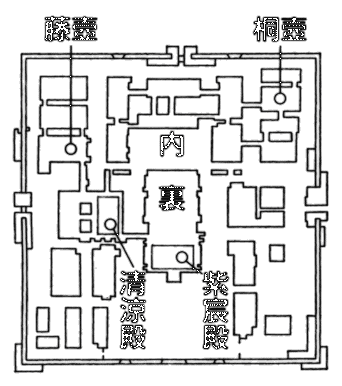
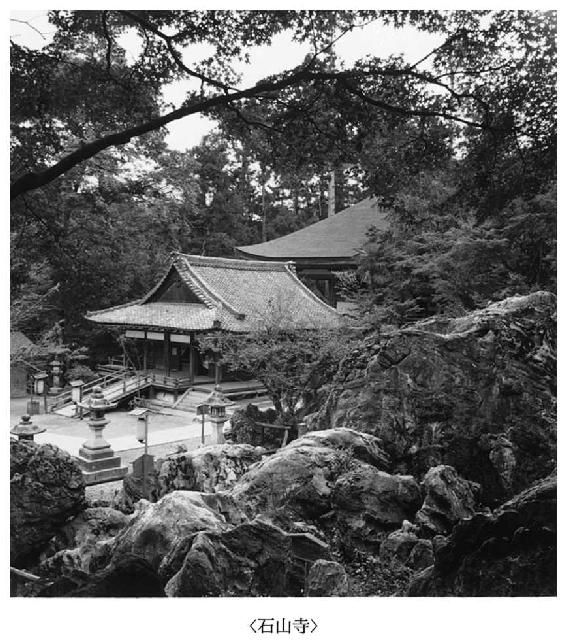

| 源氏物語 ビギナーズ・クラシックス 日本の古典 (角川ソフィア文庫) | |
| 角川書店 | |
| 角川書店 (2011) | |

ビギナーズ・クラシックス 日本の古典
源氏物語
角川書店＝編
本作品の全部または一部を無断で複製、転載、配信、送信したり、ホームページ上に転載することを禁止します。また、本作品の内容を無断で改変、改ざん等を行うことも禁止します。
本作品購入時にご承諾いただいた規約により、有償・無償にかかわらず本作品を第三者に譲渡することはできません。
本作品を示すサムネイルなどのイメージ画像は、再ダウンロード時に予告なく変更される場合があります。
本作品は縦書きでレイアウトされています。
また、ご覧になるリーディングシステムにより、表示の差が認められることがあります。
本文中に「＊」が付されている箇所には注釈があります。その箇所を選択すると、該当する注釈が表示されます。
はじめに
『源氏物語』は、世界に誇る日本古典の代表として、小学生でさえ知っているほど有名です。しかも、現在、一大『源氏物語』ブームです。
ところが、その全文を読み通した読者は、少数の研究者を除けば、ゼロといってよいでしょう。驚くことに、古語の原典ではなく現代語訳したものでも、全文を読破した人は、めったにいません。有名無実とは、まさにこのことです。
時代が古すぎるからでしょうか。それとも、作品が長すぎるからでしょうか。いいえ、どちらでもありません。その理由をたずねると、ほとんどの人が次のように答えました。
主語が不明確で、だれが何をしているのか、あいまいだ。また、現代感覚になじまない敬語に覆われて、違和感を覚えるから、たいくつだ。
要するに、読者は、自分の心のなかに『源氏物語』の像を結ぶことができないのです。これでは、読めない読みたくない古典は、ますます読まなくなってしまうでしょう。
しかし、主語の省略も複雑な敬語も、当時の貴族社会では、何の違和感もなく、自然でした。その自然さを、逆に現代においても保証しない限り、読みにくさは解消しません。
では、どうすれば私たちにとって、自然な日常語になるのでしょうか。
そこで、本書は、読者のみなさんが、ふだんの言葉で、いつもの目線で、心のなかに登場人物や場面をはっきりと描けるように、主語を明確にし、特殊な敬語をとりはずしました。さらに語釈のたぐいもはぶきました。
その代わり、すらすら読んで、すみやかに、自分の『源氏物語』像を心に結ぶことができるように、「あらすじ」や全帖から場面を抜粋した「通釈」（意訳＋説明）・「原文」を配し、総ルビ（振り仮名）をつけ、最後に寸評を添えました。
まず、あらすじや通釈を読みながら、想像力を働かせて、人物や場面を心に描きましょう。それから、原文を音読して、王朝ロマンの香りを十分に吸い込みます。その後、時間があったら、寸評を読み流してみてください。目の前に、みなさん自身が彩色した『源氏物語』の世界が立ち現れてくるはずです。
本書は、注釈書でもいわゆる現代語訳でもありません。むしろ、それらと読者のみなさんとの間を取り持つ前座のような案内役をつとめるのが目的です。
本書を読んだ後で、より深い理解をめざして注釈書を手に取ることになるならば、古典軽視の風潮に一矢を報いんとする本書の志は遂げられたことになります。その時の至らんことを、心から願ってやみません。
平成十三年十月
古典茶房 武田友宏
協力 鈴木泰則 鈴木重寿 前田恵美
※原文は、角川文庫版『源氏物語』に拠り、適宜表記を改めた。また、『絵入源氏物語』の挿絵は、『源氏物語評釈』（角川書店刊）から採った。
※本書は、先に刊行したミニ文庫（ミニ・クラシックス）を増訂したものである。
目次
コラム 索引
【あらすじ】
桐壺の更衣は、桐壺の帝の寵愛を独り占めにしていた。ほかの妃たちはこれを許さず、嫉妬し迫害した。父大納言の亡き後、更衣の母北の方の苦労は絶えることがない。
そんな中で、桐壺の更衣は、美しい皇子（光源氏）を生み、寵愛はますます深まっていく。第一皇子の母、弘徽殿の女御をはじめ、妃たちのいじめもいっそう激しくなる。心身ともに疲れ切った更衣は、病のため実家に帰り、ふたたび宮中に戻ることはなかった。源氏三歳のことである。帝と母北の方の悲嘆はたとえようもない。
母北の方（源氏の祖母）は源氏六歳の時に死去し、その後、身よりのない源氏は宮中に引き取られて成長する。七歳で教育を受け始めたが、学問も芸能も並みはずれて優秀な源氏に、父帝は期待をかける。しかし、高麗（朝鮮の王朝の名）人の観相（運命判断）に従い、皇族から臣下に降し源氏姓を与えた。
新しく藤壺の女御が妃として迎えられた。女御は、源氏の亡き母桐壺の更衣に生き写しの美貌と評判された。源氏はひそかに慕情を寄せる。十二歳、源氏は元服し、左大臣の姫君葵の上と結婚した。彼女は四歳年上で、とりすました美貌に源氏は愛情がわかない。いよいよ藤壺への恋慕にのめりこんでいった。世の人々は二人の美貌と寵愛を讃えて、源氏を「光る君」、藤壺を「輝く日の宮」と呼んだ。
源氏は、亡き母の殿舎（桐壺）を自室にし、母の実家を改築する。のちの二条院である。源氏は、理想の女性と住むことを夢見る。
源氏は、宮中と自邸を自由に往き来できる特権を許された。こうして、物語の展開に必要な条件が整っていく。
【コラム】 壺──藤壺・桐壺
「壺」とは中庭のことである。「藤壺」は中庭に藤が植えてある殿舎の名であり、「桐壺」は桐を植えた殿舎をいう。正式名称を、それぞれ「飛香舎」「淑景舎」といい、天皇のお妃が住み、妃の呼び名にも使用された。妃のランクによって、天皇の居間からの遠近が決まる。桐壺は最も遠い位置にあり、源氏の母、桐壺の更衣は、そこから長い廊下をたどらなければお目通りできなかったのだ。

【訳文】
どの帝のころだったか、女御や更衣と呼ばれる何人もの妃が仕えていた、その中に、女御より下位の更衣だが、帝の寵愛を独り占めしている妃がいた。
自分こそ第一の妃と、うぬぼれていた女御たちは、下位の更衣に出し抜かれて、嫉妬のあまりに、さまざまな嫌がらせをした。更衣を見下すことができる上位の女御でさえこの調子だったから、まして同格の更衣やそれより下位の妃たちは、公然たる対抗手段もないまま、いらいらするばかりだった。
帝と過ごす夜の御殿と、自分の部屋の間の往復は、他の妃たちの部屋の前を通らなければならないので、当然、彼女たちの神経はとがった。やがて積もり積もった嫉妬のせいか、更衣は、病気がちで生気をなくし、実家に帰ることが多くなった。そうなればなるで、帝は、いよいよ愛着をつのらせ、周りの忠告も耳に入らない。後世に悪例を残しそうな特別待遇を続けた。妃たちだけでなく、側近の高官たちでさえ、苦々しげに顔をそむけるほどの寵愛ぶりだった。
【原文】
いづれの御時にか、女御・更衣あまた侍ひ給ひける中に、いとやむごとなき際にはあらぬが、すぐれて時めき給ふ、ありけり。
初めより我はと思ひ上がり給へる御方々、めざましき者におとしめそねみ給ふ。同じほど、それより下﨟の更衣たちは、まして安からず、朝夕の宮仕へにつけても、人の心をのみ動かし、恨みを負ふつもりにやありけむ、いとあつしくなりゆき、もの心細げに里がちなるを、いよいよ飽かずあはれなるものにおぼほして、人のそしりをもえ憚らせ給はず、世の例にもなりぬべき御もてなしなり。上達部・上人なども、あいなく目をそばめつつ、いとまばゆき人の御おぼえなり。
【寸評】
ここから、『源氏物語』全編の幕開けである。まず源氏の父桐壺の帝と母桐壺の更衣が紹介される。帝の偏った寵愛は宮中を揺るがす事件となった。周囲に歓迎されない熱愛、これが長大な物語の発端となる。人の一生を愛の葛藤劇とみる人生観は、古くて新しい。
【コラム】 女御・更衣
女御・更衣は、天皇に仕える高位の女官だが、実質は天皇の妻（妃）である。女御は皇族や大臣家以上の家柄の出身、更衣は女御に次ぐ家柄から出た。皇后はふつう女御から選ばれた。ちなみに、桐壺帝のモデルとされる醍醐天皇には、女御五人、更衣十九人が仕えていたという。内裏の中には、妃たちとそれに仕える女官たちが居住する殿舎群があり、後宮と呼ばれた。女性の数は全部で数百人から、最盛時には千人を越えた。
【訳文】
更衣の父の大納言は亡くなったが、母の北の方は旧家の出身で格式を重んじる人だけに、両親がそろい世間の名声華やかな妃たちに負けないように、女親の意地を通してきた。
宮中の儀式には、娘の更衣はもとより、お付きの女房の衣装などにも、入念に心配りした。それでも、男親に代わる後見人がいないため、盛大な式典などでは、影が薄くなってしまうのだった。
やがて、帝と更衣の間には、前世からの深い縁もあってか、この世のものとも思えないほど、美しい玉のような皇子（光源氏）まで生まれた。帝は若宮を早く見たくてたまらず、急いで更衣の実家から宮中に連れて来させた。見ると、驚くほど美しくかわいい顔だちである。
一方、この皇子の兄宮にあたる第一皇子（のちの朱雀帝）は、右大臣の姫君、弘徽殿の女御が生んだ人で、皇子の祖父は、政界の実力者で後押しが強力だったから、間違いなく皇太子になると信じられ、誰もがうやうやしく仕えていた。しかし、この弟宮の輝くばかりの美しさにはとてもかなわない。更衣を愛する帝は、兄宮にはそれなりの愛情を示すだけで、弟の若宮のほうを秘蔵っ子として溺愛した。
【原文】
父の大納言は亡くなりて、母北の方なむ、古の人の由あるにて、親うち具し、さしあたりて世のおぼえ華やかなる御方々にもいたう劣らず、何ごとの儀式をももてなし給ひけれど、取り立ててはかばかしき後見しなければ、ことある時は、なほ拠り所なく心細げなり。
前の世にも御契りや深かりけむ、世になく清らなる玉の男御子さへ生まれ給ひぬ。いつしかと心もとながらせ給ひて、急ぎ参らせて御覧ずるに、珍らかなる児の御容貌なり。
一の皇子は、右大臣の女御の御腹にて、寄せ重く、疑ひなき儲けの君と、世にもてかしづききこゆれど、この御匂ひには並び給ふべくもあらざりければ、大方のやむごとなき御思ひにて、この君をば、私物に思ほしかしづき給ふこと限りなし。
【寸評】
源氏の祖母である北の方が、亡夫の遺言を守ろうと女の意地を貫く。虚偽と虚飾の渦巻く後宮で、娘を支える女親の胸には、家を守る執念が燃えている。これが一家の主婦の真の姿ともいえる。
光源氏が誕生した。天性の美貌の持ち主である。妃たちの嫉妬と羨望の嵐のなかでの出生は、物語の主役にふさわしい。波瀾万丈の人生が源氏の行く手に待っている。
【訳文】
更衣の部屋は桐壺と呼ぶ。帝の部屋からは遠く離れているので、お呼びがかかった場合には、ほかの妃たちの部屋の前を通ることになる。それが毎日のように続くのだから、妃たちの胸のうちはおさまらない。それも無理のない話である。
あんまり回数が多いと、通り過ぎる廊下や架け橋のあちこちに汚物をまき、送り迎えする女房たちの着物の裾をだいなしにするといった、異常なまでの妨害工作に出た。
また、避けては通れない廊下の両端の扉を、あちらとこちらの妃方が示し合わせて鍵をかけ、中に閉じこめてうろたえさせるというたぐいのいじめもよく行われた。
何かにつけ、苦労の種が増えるばかりなので、更衣はすっかり気が滅入ってしまった。ふびんに思った帝は、自分の部屋の近くに住む妃を外に移して、空いた個室を更衣が利用できるようにした。移された妃のはらわたは、煮えくりかえった。
【原文】
御局は桐壺なり。あまたの御方々を過ぎさせ給ひて、暇なき御前渡りに、人の御心を尽くし給ふも、げにことわりと見えたり。
参う上り給ふにも、あまりうちしきる折々は、打橋・渡殿のここかしこの道に、怪しきわざをしつつ、御送り迎への人の衣の裾堪へがたく、まさなきこともあり。
またある時には、え避らぬ馬道の戸をさしこめ、こなたかなた心を合はせて、はしたなめ煩はせ給ふ時も多かり。事に触れて、数知らず苦しきことのみ増されば、いといたう思ひわびたるを、いとどあはれと御覧じて、後涼殿にもとより候ひ給ふ更衣の曹司を、ほかに移させ給ひて、上局に賜はす。その恨み、ましてやらむ方なし。
【寸評】
帝王は、複数の妃をもつ権利とともに、彼女たちを公平に愛する義務を負っている。もし特定の妃を偏愛すれば、当然、欲求不満の妃たちの反乱が起こる。打倒の対象は帝王ではなく、寵妃ただ一人である。ここが恐いところだ。嫉妬に狂うと、人間、見栄も外聞もかなぐり捨てる。華麗な後宮絵巻の裏面の恥部をのぞかせる。
【訳文】
若宮七歳のころ、来日した高麗（朝鮮の王朝）の使節団のなかによく当たる人相鑑定家がいると帝は聞き、外国人を宮中に招くのは宇多天皇（八六七～九三一）が禁じていたから、内密に若宮を使節の宿舎に行かせた。後見役の右大弁（事務次官級）の子として鑑定してもらうと、人相見は驚いて何度も首を傾げる。「国家元首となり、帝王の位に昇る人相であるが、その方向で占うと、国が乱れ苦しむ事態が起こるようだ。では、国家の重臣となり、国政を補佐する方向で占うと、どうもそれで終わるようにも見えない」と言う。
【原文】
そのころ、高麗人の参れる、中に、賢き相人ありけるを、聞こしめして、宮の内に召さむことは、宇多の帝の御戒めあれば、いみじうしのびて、この御子を鴻臚館に遣はしたり。
御後見だちて仕うまつる右大弁の子のやうに思はせて率て奉るに、相人驚きて、あまたたび傾き怪しぶ。「国の親となりて、帝王の上なき位に昇るべき相おはします人の、そなたにて見れば、乱れ憂ふることやあらむ。朝廷の固めとなりて、天下を輔くるかたにて見れば、またその相違ふべし」と言ふ。
【寸評】
『源氏物語』は、この予言の実現をめざして展開してゆく。予言は、源氏が准太上天皇（上皇に準ずる位）となる未来を暗示する。それは、帝王と臣下との境界に位した人生を意味した。源氏は、半帝・半臣であり、女性とあらゆる色模様を演じうる超人となる。
【訳文】
帝が源氏を側から離さないので、たまに通う妃はともかく、しょっちゅう通って行く藤壺の宮の場合は、恥ずかしいからといって、源氏の目を避けきることはできない。
どの妃も、誰にも負けないという自信家ぞろいだ。それぞれ魅力的だが、いずれも熟年なのに対して、藤壺の宮だけがまだ十代の可憐な花である。恥ずかしがって、見られまいと姿を隠すが、源氏に、ちらりちらりと盗み見られてしまう。
源氏は母の面影さえ記憶にないが、「実によく似ています」と侍女（典侍）が言うので、子供心にもしみじみと心ひかれ、いつも宮の側にいて、親しく姿を見ていたいと憧れた。
帝は、二人とも熱愛していたので、「若君によそよそしくしないでおくれ。自分でも不思議なくらい、あなたが若君の亡き母のような気がしてならない。失礼な子と思わず、可愛がってやってくれ。亡き更衣は、顔立ちや目もとなど、あなたにそっくりだったから、あなたが母親に見えてもおかしくないんだよ」などと頼む。源氏は幼心にも、ちょっとした季節の花々や紅葉を宮に贈っては、自分の好意を示すのだった。
【原文】
源氏の君は、御辺り去り給はぬを、まして繁く渡らせ給ふ御方は、え恥ぢあへ給はず。いづれの御方も、我、人に劣らむ、と、おぼいたるやはある。とりどりにいとめでたけれど、うち大人び給へるに、いと若う美しげにて、切に隠れ給へど、おのづから漏り見奉る。
母御息所も、影だにおぼえ給はぬを、「いとよう似給へり」と、内侍のすけの聞こえけるを、若き御心地に、いとあはれ、と思ひきこえ給ひて、常に参らまほしく、なづさひ見奉らばや、と、おぼえ給ふ。
上も、限りなき御思ひどちにて、「な疎み給ひそ。怪しくよそへ聞こえつべき心地なむする。なめしとおぼさでらうたくし給へ。面つき、まみなどは、いとよう似たりしゆゑ、通ひて見え給ふも似げなからずなむ」など、聞こえつけ給へれば、幼心地にも、はかなき花紅葉につけても、心ざしを見え奉る。
【寸評】
源氏と藤壺とは五歳しか違わない。母親代わりを頼み、二人の接近を許し、不倫の隙を与えてしまう。のちに、源氏は、息子の夕霧を十三歳も年上の紫の上にさえ近づかせなかった。継母と息子の年齢が近い古代貴族の結婚は、過失を生む危険が高かった。
§巻名の由来
源氏と空蟬の贈答歌による。
源氏「帚木の心を知らで園原の道にあやなく惑ひ〈イ〉ぬるかな」（近寄れば消えるという帚木のように薄情な人とは知らないで、あなたに迷ってしまったものだ）
「数ならぬ伏屋に生ふ〈ウ〉る名の憂さにあるにもあらず消ゆる帚木」（身分いやしい育ちの私は、帚木のように姿を消してしまうほかありません）
§主要人物の年齢
・源氏─17歳
・藤壺─22歳
・葵の上─21歳
・空蟬─不明
【あらすじ】
五月雨の降り続くある夜、宿直（宿泊勤務）で宮中の自室（桐壺）にいた源氏のもとに、親友の頭の中将（葵の上の兄）がおとずれる。源氏と頭の中将とは、女性の方面でも競い合っている仲だ。
やがて、おきまりの女性の品評が始まったが、そこへ女性経験も豊富な論客の左馬の頭と藤式部の丞が加わり、女性談議に花を咲かせることになった。いわゆる「雨夜の品定め」の場である。
左馬の頭は、上中下三階級の判定法、中流重視説から良妻選びの困難、婦道論、はては工芸・書画論に至るまで能弁を駆使する。さらに体験談を披露して、嫉妬深い女（指食いの女）や浮気な女（木枯らしの女）の例を挙げた。
頭の中将は、本妻に責められて姿を消した内気な女（常夏。のちの夕顔）の思い出を語る。藤式部の丞が、賢女ぶる学者の娘（ニンニクを食う女）を紹介した後、左馬の頭は、気配りがあって出しゃばらない女が妻として最適だろうと論議をまとめた。
翌日、源氏は方違えで紀伊の守の邸に出かけた。そこに伊予の介（紀伊の守の父）の若い後妻（空蟬）が来あわせていた。夜、その後妻のもとに忍びこみ、強引に関係を結んだが、その後、彼女はきっぱりとはねつける。女心の機微をわきまえない源氏は初めて女の拒否に会い、しおれてしまった。
【コラム】 帚木
信濃の国（長野県）の伝説上の木の名。遠くからは箒を立てたように見えるが、近づくと見えなくなるという。実際に何の木をさすのかは、わかっていない。求愛にこたえるように見せかけて、実は冷淡な態度をとる人のたとえとして、和歌に用いられる。ここでは、源氏の求愛を拒む空蟬をさしている。
【訳文】
いろんなタイプの女性について話し合っていると、左馬の頭が言った。
「よくある愛人関係のあいだは不足もないが、正式な妻としてしっかりした女を選ぶ段階になると、つきあっている女はたくさんいても、なかなか決めにくいものです。
たとえば、男性の官僚たちのなかから、国政の重要ポストに選任する場合でも、本当にふさわしい能力の人物を見つけるのはむずかしい。いくら有能でも、一人や二人で政治を行うことはできないから、上司は下役に助けられ、下役は上司に従って、広い行政の問題は円滑に処理できるわけです。
それに比べると、狭い家庭の主婦たるべき女性一人を選ぶに過ぎないが、考えてみると、欠けては困る条件があれこれたくさんある。なのに、あちらがよければこちらが悪いといったぐあいで、安定したところがなく、まあまあ、この程度ならという女は少ないものです」
【原文】
さまざまの人の上どもを語り合はせつつ、「大方の世につけて見るには咎なきも、我がものとうち頼むべきを選らむに、多かる中にも、えなむ思ひ定むまじかりける。男の、朝廷に仕うまつり、はかばかしき世の固めとなるべきも、まことの器物となるべきを、取り出ださむには難かるべしかし。されど、賢しとても一人二人、世の中をまつりごちしるべきならねば、上は下に助けられ、下は上になびきて、こと広きにゆづろふらむ。狭き家の内の主とすべき人一人を思ひ巡らすに、足らはで悪しかるべき大事どもなむ、方々多かる。とあればかかり、あふさきるさにて、なのめにさてもありぬべき人の少なき」
【寸評】
さて、女性の品定めならぬ男性の品定めが、堂々と行われる現代である。この巻の「女」を「男」に置き換えたら、現代にも通用する男性論ができあがるだろう。中流家庭の出身で、思いやりがあって、何事もほどほどの男性が、夫としていちばん管理しやすい、と。
【コラム】 方違え
外出するときに、自宅から目的地への方角を変更すること。出かける方角が占いで災いを受ける方角に当たる場合、前日からよその家に泊まって、翌日に出かけるときには、自宅から出かけるのとは、別な方角になることを利用した。当時、一般的に行われた生活習慣であるが、宿を貸す側と借りる側とのコミュニケーションが、時に男女の秘め事を生んだ。
【訳文】
「何事があっても、夫婦の間に波風立てず穏やかに、夫の浮気などはとっくに気がついているふうにほのめかし、やきもちを焼く場合も、いやみにならないよう、やんわりと話をもってくれば、かえって愛情も増すというもの。たいていは、男の浮気も、女の態度しだいで収まるもんですよ。
女がまるで干渉せず、放任するのは、男にとっては気が楽で、かわいいようなものだが、ついついそれだけ軽くみられ、どうでもよい存在に思われてきますな。岸に繫がない舟のように、干渉されない気ままな浮気は、おもしろみがないですよ」と、左馬の頭は女性論を披露した。
【原文】
「すべて、よろづのことなだらかに、怨ずべきことをば、見知れるさまにほのめかし、恨むべからむふしをも、憎からずかすめなさば、それにつけて、あはれもまさりぬべし。多くは我が心も、見る人から収まりもすべし。あまりむげにうちゆるべ、見放ちたるも、心安くらうたきやうなれど、おのづから軽き方にぞおぼえ侍るかし。繫がぬ舟の浮きたる例もげにあやなし」
【寸評】
やきもちの焼きかげんも、妻の能力のうちだ、と左馬の頭は言う。いや、現代では夫の能力でもあろう。やきもちは、愛している証拠だとか。だが、焼かれないと、初めはありがたいが、浮気という背徳の喜びが減ってしまうとは、確かに男のエゴまるだしである。
【訳文】
源氏は空蟬に逢うつもりで、供の者を早く寝かせ、連絡をしたが、使いの小君（空蟬の弟）は空蟬を探し出せない。あちこち探しまわって、渡り廊下の小部屋で、やっと見つけ出した。身を隠していた姉のしうちを、あまりにも薄情だと恨んで、
「源氏の君に、ぼくは役立たずと思われちゃいますよ」と、泣き出さんばかりに責めたてた。すると、空蟬は、
「こんな、とんでもない手引きをするもんじゃないのよ。子供のくせに、こんな使いをするなんて、とってもいけないことよ」と脅かして、
「『具合が悪いので、いま侍女たちに体をもませています』と言いなさい。お前がうろうろしてるのを見たら、誰だって変だと思うはずよ」と、きっぱり突き放した。
が、心の内では、「受領の妻にはならず、世間の目にしばられないで、亡くなった親の思い出が残る実家で暮らしたころのようにして、たまの訪れでも待っていられる身なら、どんなによかったか。私が知らんふりをして無視するのを、私の本心も知らないで、なんて身の程知らず、とお思いになっているのだわ」と、自分で選んだ道とはいっても、やはり、胸が痛み思い悩んだ。しかし、「どっちみち、つたない運命なのだから、冷たくて、いやみな女として押し通そう」と覚悟を決めた。
【原文】
さる心して、人とく静めて、御消息あれど、小君は尋ね合はず。よろづの所、求め歩きて、渡殿に分け入りて、からうじて、たどり来たり。いとあさましく、つらし、と思ひて、「いかに、かひなしとおぼさむ」と、泣きぬばかり言へば、「かくけしからぬ心ばへは使ふものか。幼き人の、かかること、言ひ伝ふるは、いみじく忌むなるものを」と言ひ脅して、「『心地悩ましければ、人々避けず、押さへさせてなむ』と聞こえさせよ。あやしと誰も誰も見るらむ」と、言ひ放ちて、心の内には、「いとかく品定まりぬる身のおぼえならで、過ぎにし親の御気配とまれる古里ながら、たまさかにも待ちつけ奉らば、をかしうもやあらまし。強ひて思ひ知らぬ顔に見消つも、いかにほど知らぬやうにおぼすらむ」と、心ながらも胸いたく、さすがに思ひ乱る。「とてもかくても、今は言ふかひなき宿世なりければ、無心に心づきなくてやみなむ」と、思ひ果てたり。
【寸評】
中の品の人妻、空蟬に味をしめた源氏は、自信満々、再び押しかけた。意外や、空蟬は身を隠して現れない。源氏はとまどい失望する。が、微妙な女心は、源氏に愛される幻想と現実の間を揺れ動いていた。それに比べて、源氏の魂胆は単純明快で、まだまだ青臭い。
§巻名の由来
源氏と空蟬の贈答歌による。
源氏「空蟬の身をかへてける木の下になほ人柄のなつかしきかな」（蟬の抜け殻のように薄衣を残して逃げたあなただが、やはりまだ未練が残ります）
空蟬「空蟬の羽におく露の木がくれてしのびしのびに濡るる袖かな」（蟬の羽におく露のように、はかない私は人知れず涙の露で袖を濡らしています）
§主要人物の年齢
・源氏─17歳
・空蟬─不明
・軒端の荻─不明
【あらすじ】
空蟬に、二度目の逢い引きを拒絶された源氏は、いっそう恋慕の炎を燃え上がらせた。
三度目の訪問で、空蟬と継娘の軒端の荻をかいま見る。その夜、寝室に忍び込んだが、空蟬は薄衣を脱ぎ捨てて逃げ去った。それに気づかないまま、源氏は軒端の荻と愛を交わしてしまった。
自邸に戻った源氏は空蟬に手紙を送り、空蟬もまた、人妻の身でなければ、とやるせない思いに悶えるのだった。軒端の荻は、あの夜の後なのに、何の便りも寄こさない源氏を、実は人違いされたのだと気づくわけもなく、妙にしんみりしている。
【訳文】
源氏が、着物を押しのけ、寝ている女に体を寄せると、あの女（空蟬）の感触よりも豊満に感じたが、まさか別人とは思わなかった。眠りこけて目覚めないようすなんかが、あの女と違うので、ようやく別人とわかり、あきれるとともに、むっとなった。
けれども、「この女に人違いしたと気づかれるのも、間抜けな話だし、女だって『変だ』と思うだろう。あの目当ての女を探し出したところで、これほどまで私から逃げようとしているのだから、むだなことだ。きっと愚かな男と笑うだろうよ」と考えて、以前、灯の光で見かけたかわいらしい女（軒端の荻）なら、それも悪くない、という気になるのも、けしからぬ源氏の浮気心というものだろう。
【原文】
衣を押しやりて寄り給へるに、ありし気配よりは、ものものしくおぼゆれど、思ほしも寄らずかし。寝ぎたなきさまなどぞ、怪しく変はりて、やうやう見顕し給ひて、あさましく心やましけれど、「人違へ、と、たどりて見えむもをこがましく、『怪し』と思ふべし、本意の人を尋ね寄らむも、かばかり逃るる心あめれば、かひなう、をこにこそ思はめ」とおぼす。かのをかしかりつる火影ならば、いかがはせむにおぼしなるも、悪き御心浅さなめりかし。
【寸評】
必死に源氏の魔手を逃れようとする空蟬は、継娘を身代わりにしてしまった。はめられたと知って、源氏は、いまいましいと思うものの、新しい女を手に入れて半分は満足する。うぬぼれの強い源氏は、自分が振られた理由がわからず、かえって空蟬にひかれていく。
【コラム】 空蟬
「うつせみ」は、本来「現身」と書き、神に対して現実に生きる人間、および現世をさしていた。それが仏教の無常観と結びついて、はかない人生や人世を表すようになり、「空蟬」という漢字表記が当てられた。すると、その表記に引かれて、蟬の抜け殻や蟬そのものをもさすようになった。ここでは、夜着を脱ぎ捨てて、源氏の手を逃れた女性の呼び名となっている。
【コラム】 原文の読みかた──歴史的仮名遣いの発音
語中・語尾の「はひふへほ」は、「ワイウエオ」と発音する。
にほひ（匂ひ）ニオイ
おほん（御）オオン
語頭はそのまま
はひ（灰）ハイ
また、ワ行の「ゐ・ゑ」は「イ・エ」と発音する。
ゐなか（田舎）イナカ
こゑ（声）コエ
母音「アイエオ」＋ウ＝長音「ー」
・アウオー
さぶらふ（候ふ）サブラウサブロウサブロー
あふぎ（扇）アウギオーギ
やう（様・益）ヨー
・イウユー
いう（優）ユー
いふ（言ふ）ユー
・エウヨー
えう（要）ヨー
けふ（今日）ケウキョー
・オウオー
きのふ（昨日）キノウキノー
しろう（白う）シロー
§巻名の由来
夕顔が源氏に贈った歌による。「心あてにそれかとぞ見る白露の光添へ〈エ〉たる夕顔の花」（もしかして、白露に光る夕顔の花のようなあなたは、源氏の君では）
§主要人物の年齢
・源氏─17歳
・夕顔─19歳
・六条の御息所─24歳
【あらすじ】
源氏が、乳母の病気見舞いに五条の家を訪ねたとき、偶然にも隣家の家の女（夕顔）と和歌を贈答した。それが縁となり、惟光（乳母子）の手引きで、自分の素性を隠して、夕顔のもとに通うようになった。源氏は、夕顔を、「雨夜の品定め」に出てきた頭の中将の女（常夏）ではないかと感じている。
八月十五日夜、夕顔の家に泊まった翌朝、夜明けの空を眺めながら、源氏は夕顔と右近（夕顔の侍女）を連れて、近くの廃邸（なにがしの院）に出かけた。その夜、二人の枕元に女の生き霊が現れ、源氏に恨み言を言いながら消えた。やがて、風の激しい闇の中で、夕顔はあっけなく死んでしまった。
惟光が夕顔の遺体を密かに東山の寺に移した。二条院へ戻った源氏は精神的打撃から寝込んでしまう。右近の話から、やはり夕顔は、頭の中将の愛人、常夏の女で、頭の中将の妻に脅迫されて身を隠したこと、また三歳の女児（のちの玉鬘）のいることがわかった。夕顔の家では、主人と右近の行方不明を嘆くばかりである。
さて、あの空蟬は、夫の伊予の介について伊予の国に下っていった。軒端の荻は、蔵人の少将と結婚したという。
源氏は、時雨の空をながめながら、去り行く秋に託して、夕顔や空蟬との別れを惜しんだ。
【訳文】
宵を過ぎたころ、少しまどろんでいると、枕元に美しい女がすわっていて、「この私が立派な方と心からお慕いしているのに、おいでにならず、こんなつまらない女を連れて、かわいがるなんて。あんまりです。恨めしい」と言いながら、夕顔を引き起こそうとする夢を見た。何かに襲われるような気がして、はっと目が覚めると、燭台の火も消えていた。
薄気味悪いので、太刀を抜いて、枕元に置き、侍女の右近を起こした。右近もおびえながら側ににじり寄ってきた。「渡り廊下にいる宿直を起こして、『紙燭をつけてまいれ』と言ってくれ」と言うと、右近は、「どうして参れましょう。暗くって」とこわがるので、「おやおや、子どもみたいなことを」と笑って、手を叩くと、こだまの返ってくる音が不気味である。誰ひとり聞きつけてやって来る者もいない。
女君はわなわなと体を震わせて、どうしていいか分からないふうだった。汗びっしょりになって、気絶寸前である。
「異常なくらい臆病な性格ですから、どんなお気持ちやら」と、右近が言う。「とてもか弱くて、昼間も空ばかり見てたのになあ。かわいそうに」と思い、「私が誰かを起こすとしよう。手を叩くと、こだまが返ってとてもうるさい。こっちに来て、しばらく側についていてくれ」と命じて、右近を女君の側に引き寄せ、西の妻戸を押し開けると、渡り廊下の灯も消えてしまっていた。
【原文】
宵過ぐるほど、少し寝入り給へるに、御枕上にいとをかしげなる女ゐて、「おのがいとめでたしと見奉るをば、訪ねおぼほさで、かくことなることなき人を率ておはして、時めかし給ふこそ、いとめざましくつらけれ」とて、この御傍らの人をかき起こさむとす、と見給ふ。ものに襲はるる心地して、驚き給へれば、灯も消えにけり。
うたておぼさるれば、太刀を引き抜きて、うち置き給ひて、右近を起こし給ふ。これも、恐ろしと思ひたるさまにて、参り寄れり。「渡殿なる宿直人起こして、『紙燭さして参れ』と言へ」と宣へば、「いかでかまからむ。暗うて」と言へば、「あな若々し」と、うち笑ひ給ひて、手をたたき給へば、山彦の応ふる声いと疎まし。人え聞きつけで、参らぬに、この女君、いみじくわななき惑ひて、「いかさまにせむ」と思へり。汗もしとどになりて、われかの気色なり。
「もの怖ぢをなむわりなくせさせ給ふ本性にて、いかにおぼさるるにか」と右近も聞こゆ。「いとか弱くて、昼も空をのみ見つるものを。いとほし」と、おぼして、「我人を起こさむ。手たたけば、山彦の応ふる、いとうるさし。ここにしばし近く」とて、右近を引き寄せ給ひて、西の妻戸に出でて、戸を押し開け給へれば、渡殿の灯も消えにけり。
【寸評】
深夜、廃院で愛し合う夕顔と源氏の前に、物の怪が現れた。灯火が消えて、漆黒の闇のなかに、こだまが不気味に響く。魔除けに太刀を抜く雄々しい源氏、声もなく震えるあえかな夕顔、腰が抜けた侍女。演劇の舞台の名場面を観るようだ。のちに、物の怪は、源氏の年上の愛人、六条の御息所の生き霊と判明する。
【コラム】 物の怪
科学の未発達な当時にあって、原因不明の難病や精神病の多くは、「物の怪」のせいだとされた。「物の怪」とは、人に危害を加える邪悪な霊魂をいう。死霊や生き霊や妖怪変化など、さまざまな形がある。
治療には、修行を積んだ霊能力の高い僧が、患者から「物の怪」を「よりまし」に移し、祈禱の威力によって退けた。
§巻名の由来
源氏の歌「手につみていつしかも見む紫の根に通ひ〈イ〉ける野辺の若草」（早く自分のものにしたい、藤壺の宮〈紫〉と血縁のあるあの子〈若草〉を）による。
§登場人物の年齢
・源氏─18歳
・葵の上─22歳
・藤壺の宮─23歳
・尼君─40余歳
・若紫（紫の上）─10歳
【あらすじ】
源氏は病気（熱病の一種。マラリアとも）の治療に北山をおとずれた。治療のあいまに山中を散歩して、小柴垣の庵に、片時も忘れない藤壺の宮によく似た少女（紫の上）を見つけた。
庵主の僧都から、少女は、僧都の妹尼の孫娘で、藤壺の宮の姪にあたると聞く。実母を亡くし、祖母の尼君のもとで養育されていると知り、世話をしたいと申し出た。尼君は、幼すぎるといって、承知しない。やがて、源氏は京に戻ったものの、相変わらず正妻の葵の上とはしっくりいかない。
そんなころ、藤壺の宮が病気のために宮中から下がった。源氏にとっては、宮に近づく絶好の機会だった。侍女の手引きで強引に宮に迫り、夢のようなはかない密事の後、宮は源氏の子を身ごもってしまう。のちの冷泉帝である。
一方、北山の尼君が亡くなって、かの少女はひとり残された。やがて父宮（兵部卿の宮）に引き取られると聞いて、源氏は奪い取るように自邸（二条院）に引き取った。源氏は少女を理想の女性に育てあげようとする。初めはなかなか親しまなかったが、源氏の細やかな気配りに、しだいにうちとけて笑顔を見せるようになった。
【訳文】
「どうしたの、誰かと喧嘩でもしたの」と、立っている少女を見上げる尼に、顔が少し似ているので、尼の子だろうと源氏は思った。
「雀の子を犬君（遊び仲間の女子）が逃がしちゃったの。せっかく籠をかぶせておいたのに」と、ひどくがっかりした顔だ。
そばにいた女房（侍女）が「あのおてんばが、またそんなことをして、本当に困ったこと。雀の子はどこへ行ったのかしら、だんだんかわいくなってきたのに。烏なんかに見つかったらたいへんだわ」と言って立ち上がり、雀を探しに行く。髪がゆったりと長く、感じのよい女房だ。少納言の乳母と呼ばれているらしく、この子の世話役なのだろう。
尼は「まあまあ、いつまでも子供で。しようがないわねえ。私が明日をも知れぬ命なのに、無邪気に雀などを追いかけまわして。生き物をそんなふうにしては罰が当たると、いつも言っているのに、本当に困ったこと」と言いながら、「こっちにおいでなさい」と声をかけると、女の子は尼の側にちょこんと座った。
面ざしがとても愛くるしく、墨描きの眉ではないので、輪郭がぼうっとした感じで、子供っぽく搔きあげた額や髪のぐあいは、たまらなくかわいらしい。大人になった姿を見たいものだと、源氏の視線は少女に貼りついたままだ。それというのも、いつも心から離れない藤壺の宮によく似ているから、こんなに引かれるのだと思うと、源氏は感傷的になって、思わず涙をこぼしてしまうのだった。
【原文】
「何事ぞや、童女と腹だち給へるか」とて、尼君の見上げたるに、少しおぼえたるところあれば、子なめりと見給ふ。「雀の子を犬君が逃がしつる。伏籠のうちに籠めたりつるものを」とて、いと口惜しと思へり。このゐたる大人、「例の、心なしの、かかるわざをして、さいなまるるこそ、いと心づきなけれ。いづ方へかまかりぬる。いとをかしうやうやうなりつるものを。烏などもこそ見つくれ」とて立ちて行く。髪ゆるるかにいと長く、めやすき人なめり。少納言の乳母とぞ人言ふめるは、この子の後見なるべし。
尼君「いで、あな幼なや。言ふかひなうものし給ふかな。おのがかく今日明日におぼゆる命をば、何ともおぼしたらで、雀慕ひ給ふほどよ。罪得ることぞと常に聞こゆるを、心憂く」とて、「こちや」と言へば、ついゐたり。
面つきいとらうたげにて、眉のわたりうちけぶり、いはけなくかいやりたる額つき、髪ざし、いみじう美し。ねびゆかむさまゆかしき人かなと目止まり給ふ。さるは、限りなう心を尽くしきこゆる人に、いとよう似奉れるが、まもらるるなりけり、と思ふにも、涙ぞ落つる。
【寸評】
治療に訪れた北山で、かたときも心を離れない藤壺によく似通った少女を発見した。山中の庵で祖母とひっそり暮らしていた。家庭環境に恵まれない薄幸の美少女は、藤壺の身代わりとなって、やがて源氏に引き取られて、理想の妻に仕込まれていく。のちの紫の上である。
【訳文】
藤壺の宮が、病気のため宮中から実家に戻った。源氏は、父帝の心配する姿に同情しながらも、この機会にせめてひと目でもと、気もそぞろになって、他の女性たちの所に出かけなくなった。宮中でも自邸でも、昼は仕事をせずにぼんやりして、日が暮れると、宮の侍女である王命婦に、宮と逢う手引きをうるさくせがむのだった。
さて、どう手はずを整えたのか、逢って強引に思いを遂げることはできたが、その間でさえ夢うつつで実感がなかった。なんとも心痛むことだった。藤壺の宮は、あの突然の事故のような出来事を、思い出すだけでも一生の苦の種だから、二度と過ちを繰り返すまいと固く決心していた。
それなのに、今またこうして源氏を許してしまい、とてもつらく苦しそうだが、それがかえって、たまらなく魅惑的で、といっても馴れ馴れしいのではなく、思慮分別のある態度をとるようすは、どんな女君もまねのできないほどだった。なぜ欠点の一つもないのだろうかと、源氏は恨めしくさえ思った。
こんなふうだから、どうして胸に積もる思いを宮に語り尽くすことができよう。夜明けがなく暗いという名をもつ暗部山で夜を過ごしたいほどだが、あいにくと夏の短夜なので、かえって逢わない方がましだったと思った。
【原文】
藤壺の宮、悩み給ふことありて、まかで給へり。上の、おぼつかながり嘆ききこえ給ふ御気色も、いといとほしう見奉りながら、かかる折だにと、心もあくがれ惑ひて、何処にも何処にも詣で給はず。内裏にても里にても、昼はつれづれとながめ暮らして、暮るれば王命婦を責め歩き給ふ。いかがたばかりけむ、いとわりなくて見奉るほどさへ、現とはおぼえぬぞわびしきや。宮もあさましかりしをおぼし出づるだに、世とともの御もの思ひなるを、さてだにやみなむ、と深うおぼしたるに、いと心憂くて、いみじき御気色なるものから、懐かしうらうたげに、さりとてうちとけず、心深う恥づかしげなる御もてなしなどの、なほ人に似させ給はぬを、などかなのめなることだにうちまじり給はざりけむ、と、つらうさへぞおぼさるる。何ごとをかは聞こえ尽くし給はむ。暗部の山に宿りも取らまほしげなれど、あやにくなる短夜にて、あさましうなかなかなり。
【寸評】
物語の展開には最重要の密事だが、場面の具体的な描写は省略している。それだけに、かえって官能的ともいえる。男女の秘め事そのものより、二人の事後の行動の方が意味深いことを、作者は心得ている。
【訳文】
男女が、いったん深い仲になると、女は男の行動にあれこれ口出しするようになり、逢っていても楽しくなくなるので、男のほうも今までのイメージとは違うような気がしてきて、甘い気持ちが冷めていく。
女のほうも、そんな男の態度を愚痴ることが多くなり、初めのころは想像もしなかった別れ話や離婚沙汰が当然のように出てくるものだ。でも、若紫はそんな心配はない。まだ男女の仲を知らない、うぶな少女だから、まったくかわいい生きた人形なのだ。
自分の実の娘なんかだったら、若紫ほどの年齢（十歳）になると、なんの気がねもなく、べたべたひっついて、同じ布団で寝起きするなど、とてもできるものじゃない。しかし、若紫は実の娘でも妻でもないから、一風変わった秘蔵っ子というところだ。と、こんなふうに源氏は考えているようだった。
【原文】
さかしら心あり、なにくれとむつかしき筋になりぬれば、我が心地も、少し違ふふしも出で来や、と心おかれ、人も恨みがちに、思ひの外のこと、おのづから出で来るを、いとをかしきもて遊びなり。娘などはた、かばかりになれば、心安くうちふるまひ、隔てなきさまに臥し起きなどは、えしもすまじきを、これは、いとさま変はりたるかしづきぐさなり、とおぼいためり。
【寸評】
若年ながら源氏は、少女の扱い方をしっかり考えている。いわゆるロリコン趣味とはまるで違う。理想の女性として養育するようなしたたかさがある。女性経験の豊富さが男を磨く、そんな時代の貴公子ならではの発想がうかがえる。
【コラム】 紫のゆかり①
深く愛する人と縁のある人をさしていう。ここでは、藤壺の姪にあたる少女をたとえた。藤壺が紫草だから少女は若紫である。このたとえは次の歌をもとにしている。「紫の一本ゆゑ〈エ〉に武蔵野の草はみながらあは〈ワ〉れとぞ見る（愛する紫草一本のせいで、その野原に生える草花がすべていとしく思われる）」（『古今和歌集』）。さらに、美しい姉妹を「若紫」にたとえた例が『伊勢物語』初段に見える。
【コラム】 「御」はどう読むか？
古語「御」には、「おほん（オオン）・おん・お・み・ご・ぎょ」の読みかたがあり、仮名書きしてあれば問題はないが、漢字のばあいはどう読むのか、確定できない。
たとえば、「御子」は「みこ」とも「おほんこ」とも読める。しかし、皇子のばあいは「みこ」で、臣下の子は「おほんこ」と読んで、区別するという説もあり、まったく規準がないわけでもない。 そこで、平安時代の物語や手紙文などから、「御」の仮名書き例を丹念に集めて、読み方の規準を推定する方法が行われてきた。結果、「御」の読みかたには、かなり明確な使い分けのあることがわかった。
本書は、こうした研究調査のおかげで、従来、「おほん」か「おん」か、あいまいのまま放置されてきた問題について、平安時代の文章は「おほん」で統一すべきだという意見に従い、原文に総ルビを振ることができた。
§巻名の由来
源氏の歌「なつかしき色ともなしに何にこの末摘花を袖にふれけむ〈ン〉」（なんの魅力もないはずなのに、どうしてこんな赤鼻の女〈末摘花〉と寝たのだろう）による。
§登場人物の年齢
・源氏─18～19歳
・紫の君（紫の上）─10～11歳
・末摘花─不明
【あらすじ】
死んだ夕顔を忘れかねていたころ、源氏は、荒れはてた邸で琴を友にして、ひっそりと暮らす故常陸の宮の姫君のうわさに心ひかれた。春のおぼろ月夜、こっそりと姫を訪ねた源氏だが、あとをつけてきた悪友の頭の中将とばったり出くわす。ライバル意識から、二人は競って姫君に手紙を送る。
秋になって、源氏は侍女の手引きで、姫と逢うことができた。ところが、姫君はひどく引っ込み思案で、しかも今ふうのセンスがまるでなかった。失望して、しばらく訪れなかったが、同情も手伝って、源氏は久しぶりに姫君を訪ねた。
冬の夜のことである。寒々とした邸のようすは、宮家の貧窮ぶりを一目で知らせるものだった。その夜もまた、姫がうちとけないまま、朝を迎えたが、雪明かりの光の中で見た姫君の容貌は驚くべきものだった。座高が高く、鼻は長く垂れ下がり、その先が紅花（末摘花）で染めたように赤かった。源氏はあきれながらも気の毒に思い、また、生活の窮状をみかねて援助を決意し、豪華な贈り物をする。
このように姫君に誠意を尽くしながら、一方では、ますます美しくなる紫の君を相手に、赤い鼻の女の絵を描いたりして遊びたわむれるのだった。
【訳文】
夜が明けて、まだ薄暗いが、雪明かりでいちだんと美しく若々しく見える源氏の姿を、老い女房たちは、すばらしい結婚相手に恵まれた姫君の幸運を喜び、笑いのとまらない顔つきで見とれていた。
「さあ早く出ておいでなさい。いけませんよ。素直が一番です」と女房が姫君を促すと、人に言われていやとは言えない性格なので、身繕いをして源氏の側にいざり出て来た。源氏は、見ぬふりをして庭の方を眺めていたが、ただならない横目づかいをした。「容姿のほうはどうかな。どうも期待できそうにないな。うちとけた魅力がほんの少しでもあれば嬉しいのだが」などと、まったく自分勝手なことを期待していた。
第一に、座高が高く胴長な感じなので、「やっぱり」とショックを受ける。次に、ぶかっこうなのは鼻だった。はっとして目が点になった。普賢菩薩の乗り物、象の鼻のようだ。驚くほど高く長く、先の方がやや垂れ下がって赤味がかり、なんともひどいものだ。顔色は雪をあざむくほど青白く、額がばかに広くて、下ぶくれの顔は、扇で隠しているものの、きっとおそるべき長さにちがいない。
瘦せぐあいといったら、気の毒なほどごつごつと骨ばり、肩のあたりは痛そうにとがって、着物の上からもはっきりわかるほどだ。「どうして全部見てしまったのか。見なけりゃよかった」と源氏は後悔した。
そのくせ、珍奇な容姿に、やはり視線がふと行ってしまう。ただ、頭のかっこうや髪の端の掛かりぐあいは、源氏がすばらしいと感心している女君たちにも負けないくらい、上着の裾に豊かに垂れてたまっていて、その先が後ろに三十センチほど引きずるくらいみごとなものだった。
【原文】
まだほの暗けれど、雪の光に、いとど清らに若う見え給ふを、老人ども笑み栄えて見奉る。「はや出でさせ給へ。あぢきなし。心美しきこそ」など教へきこゆれば、さすがに、人の聞こゆることをえ否び給はぬ御心にて、とかう引き繕ひて、ゐざり出で給へり。見ぬやうにて、外の方を眺め給へれど、後目はただならず。「いかにぞ。うちとけまさりのいささかもあらばうれしからむ」とおぼすも、あながちなる御心なりや。
まづ、居丈の高く、を背長に見え給ふに、「さればよ」と胸つぶれぬ。うちつぎて、あなかたはと見ゆるものは、御鼻なりけり。ふと目ぞ止まる。普賢菩薩の乗り物とおぼゆ。あさましう高う伸びらかに、先の方少し垂りて色づきたること、ことのほかにうたてあり。色は雪恥づかしく白うて真青に、額つきこよなうはれたるに、なほ下がちなる面やうは、大方おどろおどろしう長きなるべし。瘦せ給へること、いとほしげにさらぼひて、肩のほどなどは、痛げなるまで衣の上まで見ゆ。「何に残りなう見顕しつらむ」と思ふものから珍しきさまのしたれば、さすがにうち見やられ給ふ。頭つき髪のかかり端も美しげに、めでたしと思ひきこゆる人々にも、をさをさ劣るまじう、袿の裾にたまりて、引かれたるほど、一尺ばかり余りたらむと見ゆ。
【寸評】
残酷なほどに、醜女の末摘花を戯画化して描いている。何か底意地の悪さを感じるほどだ。身分の上ではかなわない当時の女房たちが、落ちぶれた宮家の姫君に、日ごろの劣等感を裏返した嘲笑を投げつけているかのようだ。もっとも、こんな末摘花を見捨てない源氏の心の広さを引き立てる効果もある。
【訳文】
源氏が邸に戻ると、紫の君は、まだ少女ぽくって、なんとも愛くるしい。心にしみるような紅色の映えた装いだった。無地の桜襲（表は白、裏は赤）の細長（上着）をしんなりと重ねて、無邪気にふるまう姿は、抱きしめたいほどかわいい。
古風なお祖母さま（尼君）のしつけで、お歯黒もまだだったが、源氏が大人っぽく化粧させると、眉なんかもくっきりと描かれて、かわいらしい美貌が生まれた。
「なぜ好きこのんで、めんどうな女性関係にはまって苦しむのだろう。胸がきゅんとなるようなこの姫をほっといて」と反省しながら、いつものように一緒に人形遊びの相手をする。姫は絵を描いて色塗りしている。また、いろんな絵をおもしろく描き散らしていた。源氏もその絵の横に描き添える。
源氏は髪のとても長い女を描いて、その鼻に紅色をつけてみると、絵であっても二目と見られない醜さだ。鏡台に映る美しい自分の顔を見て、自分で鼻に紅色を塗りつけた。いくら美男でも、赤鼻が交じればみっともない。姫君はその顔を見て吹き出した。「私がこんな変な顔になってしまったら、どうする」とふざけたら、「いやです」と言って、そのまま染みついて取れないのでは、と心配している。源氏は拭き取るふりをして、「ああ、ちっとも取れない。つまらない悪戯をしたもんだ。帝がなんとおっしゃることか」と、まじめくさって言うと、姫は心からかわいそうと思って、そばに寄って拭く。「平中のように墨なんか塗らないでよ。赤いのならまだ我慢できるが」と冗談を楽しむ二人は、とてもかわいい若夫婦のようである。
【原文】
二条の院におはしたれば、紫の君、いとも美しき片生ひにて、紅はかうなつかしきもありけり、と、見ゆるに、無紋の桜の細長、なよらかに着なして、何心もなくてものし給ふさま、いみじうらうたし。古代の祖母君の御名残にて、歯黒めもまだしかりけるを、引き繕はせ給へれば、眉のけざやかになりたるも、美しう清らなり。「心から、などか、かう憂き世を見扱ふらむ。かく心苦しきものをも見てゐたらで」と、おぼしつつ、例の、もろともに雛遊びし給ふ。絵などかきて彩り給ふ。よろづにをかしうすさび散らし給ひけり。我もかき添へ給ふ。
髪いと長き女をかき給ひて、鼻に紅をつけて見給ふに、画にかきても見ま憂きさましたり。我が御影の鏡台に映れるが、いと清らなるを見給ひて、手づからこの赤鼻をかきつけ、匂はして見給ふに、かくよき顔だに、さて交じれらむは見苦しかるべかりけり。姫君見て、いみじく笑ひ給ふ。「まろが、かくかたはになりなむ時、いかならむ」と、宣へば、「うたてこそあらめ」とて、さもや染みつかむ、と、あやふく思ひ給へり。空拭ひをして、「さらにこそ白まね。用なきすさびなりや。内裏にいかに宣はむとすらむ」と、いとまめやかに宣ふを、いといとほし、と、おぼして、寄りて拭ひ給へば、「平中がやうに彩り添へ給ふな。赤からむはあへなむ」と、戯れ給ふさま、いとをかしき妹背と見え給へり。
【寸評】
若紫が結婚適齢期になるまで、源氏は気長に待っている。少女に大人の化粧を施して、夫婦ごっこを楽しむあたりは、中年男性の余裕だ。現代の若者と比較すれば、十数歳以上の精神年齢差があろう。源氏は、末摘花の赤鼻をからかうが、若紫は無心に相手している。
「平中」は、本名平定文。有名なプレイボーイで『平中物語』の主人公である。女を泣き落とすのに用いた水入れの水を、墨にとりかえられたのに気づかず、顔が真黒になったという笑い話があった。
【コラム】 貴族女性のメーク
顔に塗る白粉は「白き物」と呼ばれ、米の粉や、上等なものは鉛から製した。ただし、鉛製のものが、「白粉焼け」や「白粉中毒」などの、鉛中毒を起こす危険にはまだ気づいていなかった。赤い「紅」は紅花から製し、頰紅と口紅の二種がある。これら紅白の塗り物で、顔を彩る化粧を施した。現代感覚からすれば、かなり白塗りが目立った
成人した女性は、「眉抜き」をして、眉墨（）で人工的に眉を描いた。これを「引き眉」という。さらに、「歯黒め」をした。鉄屑を酸化させた液で歯を染めたので、「鉄漿付け」ともいった。「お歯黒」は「歯黒め」の女房詞である。基本的には、お歯黒を除けば、現代女性の化粧法と変わるところはない。もっとも、現代では眼がポイントだが、当時は眉の引き方に凝ったようだ。
§巻名の由来
「紅葉」の美しい十月、先帝のための「賀」の祝いが催されたという本文の記事による。
§登場人物の年齢
・源氏─18～19歳
・葵の上─22～23歳
・藤壺─23～24歳
・紫の上─10～11歳
【あらすじ】
宮中では、懐妊中で祝賀会に出席できない藤壺の女御のために、雅楽のリハーサルが行われた。源氏は頭の中将を相手に舞を演じ、輝くばかりの舞姿は満座の人々を魅了した。桐壺帝も感動の涙を落としたが、源氏の子を宿す藤壺の心は憂いに沈むばかりである。
年が明け、藤壺は男の子（のちの冷泉帝）を出産した。帝の喜びとは反対に、藤壺は、若宮が源氏に生き写しなのを見て、罪が露見するかもしれないと心休まらない。
源氏も宮中で若宮の顔を見て驚く。源氏に瓜二つとむしろ喜ぶ帝の言葉に、藤壺と源氏はいよいよ罪の意識にさいなまれる。
藤壺は罪をおそれ、源氏を遠ざけるようになったので、源氏は紫の上と過ごす日が多くなり、正妻の葵の上とはますます疎遠になっていった。しかし、源氏の女性関係の実際をなにも知らない帝は、葵の上に対する冷淡な態度をたしなめる。
そんな折、源氏は五十七、八の好色の老女官（源の典侍）とたわむれることがあった。寝室にライバルの頭の中将に踏み込まれ、弱味を握られて口止めする。
七月、藤壺は政敵の弘徽殿の女御を越えて中宮（皇后）になり、源氏も昇進する。帝は、若宮を東宮（皇太子）にするため、譲位を決意した。
【訳文】
源氏の美しい舞姿を見た藤壺は、「源氏が私に身のほどをわきまえない恋心を抱かなかったら、何倍もすばらしく見えただろうに」と、あの密会を夢心地に思い出していた。
その夜、藤壺は帝の寝所に泊まった。帝に「今日の予行では源氏の青海波の舞が最高だったね。どう思う」と尋ねられて、藤壺は返事に詰まり、「格別でしたわ」とだけ答えた。「相方（頭の中将）もなかなかだった。舞いぶり、手の運びが家柄の子は違うね。名の通った専門家も確かに技巧的にはうまいが、おっとりした品のよさには欠けるからね。予行の日にこうも見せ場を出し尽くしたら、本番の日は寂しくなるだろうが、今日はぜひあなたに見せたくてね、準備させたのだよ」と、やさしい言葉をかける。
翌朝、源氏から藤壺のもとに、「どう御覧になりましたか。あなたへの苦しい思いに耐えながら舞いましたが。
心が乱れて舞いなどできそうもないのに、苦しみをこらえて袖を振って舞った気持ちがわかってもらえたでしょうか。
恐れ多いことですが」と、手紙が届いた。
源氏の舞姿が目もくらむほど美しかった上に、手紙までもらってはとても放っておけなかったのだろう。藤壺から、
「あの舞は異国のものですから、袖を振って舞うのはどんな意味があるのか知りません。でも、あなたの舞の一挙一動にしみじみと意味を感じとりました。
他の方々と違って」という返事があった。
源氏にとっては、藤壺の返事は最高にすばらしく、「舞楽についてもくわしい上に、異国の故事まで思いやるとは、もう今からお后言葉の風格が出ている」と、顔をほころばせて、まるで肌身離さぬお経のように、ていねいに両手に広げて眺めるのだった。
【原文】
藤壺は、「おほけなき心のなからましかば、ましてめでたく見えまし」とおぼすに、夢の心地なむし給ひける。宮は、やがて御宿直なりけり。「今日の試楽は、青海波にことみな尽きぬな。いかが見給ひつる」と聞こえ給へば、あいなう、御答へきこえにくくて、「ことに侍りつ」とばかり聞こえ給ふ。「片手も怪しうはあらずこそ見えつれ。舞のさま手使ひなむ、家の子は異なる。この世に名を得たる舞の男どもも、げにいと賢けれど、ここしうなまめいたる筋を、えなむ見せぬ。試みの日かく尽くしつれば、紅葉の蔭やさうざうしくと思へど、見せ奉らむの心にて、用意せさせつる」など聞こえ給ふ。
つとめて中将の君、「いかに御覧じけむ。世に知らぬ乱り心地ながらこそ。
もの思ふに立ち舞ふべくもあらぬ身の袖うち振りし心知りきや
あなかしこ」とある御返り、目もあやなりし御さま容貌に、見給ひ忍ばれずやありけむ。
「唐人の袖振ることは遠けれど立ちゐにつけてあはれとは見き
大方には」とあるを、限りなうめづらしう、「かやうの方さへたどたどしからず、ひとの朝廷まで思ほしやれる、御后言葉の、かねても」と、ほほゑまれて、持経のやうに引き広げて見ゐ給へり。
【寸評】
冷静な現実主義者である藤壺の性格がよく出ている。密事は死ぬまで秘密にする気でいる。何としても、お腹の子を帝にしなければならない。源氏も、そのために協力を要請されよう。情事の蜜に酔っている源氏は、藤壺に比べると、まだまだ甘い。
【コラム】 青海波（舞楽）
雅楽の曲名。舞人は二人で、舞楽の中でもとりわけ華麗優雅な曲として名高い。舞には専用の装束をつけるが、その波形の染め模様も「青海波」と呼ばれた。これはめでたい祝意のある模様として、後世に伝わり、江戸時代、大いに流行した。
【訳文】
いつものように、源氏が、藤壺の部屋で楽器を奏でていると、帝が若君を抱いて現れ、「皇子はたくさんいるが、お前だけをこんな幼い時から見て来た。その記憶がよみがえるせいだろうか、若宮はお前にとてもよく似ている。小さいころは、みんなこんなもんかね」と言って、若宮がかわいくてたまらないようだった。
源氏は、どきりと顔色が変わる思いがして、罪は恐ろしく、父帝にはおそれ多く、若宮の美しさはうれしく、しみじみとさせられ、さまざまに感情が揺れ動いて、涙がこぼれそうになった。
若宮が何か片言を言って、にこっと笑うようすが、まったくこわくなるほどかわいらしいが、源氏は、自分のことながら、この若宮に似ているのなら美男のはずだから、大したものだ、自分をたいせつにしなくてはと、さきほどの自責の念をもう忘れてうぬぼれている──まったくいい気なものである。
藤壺は、その場にいたたまれない気持ちになって、冷や汗をかいていた。源氏は、若宮を見て、かえって気持ちが乱れたように感じたので、宮中から退出した。
【原文】
例の、中将の君、こなたにて御遊びなどし給ふに、抱き出で奉らせ給ひて、「皇子たちあまたあれど、そこをのみなむ、かかるほどより明け暮れ見し。されば思ひ渡さるるにやあらむ、いとよくこそおぼえたれ。いと小さきほどは、皆かくのみあるわざにやあらむ」とて、いみじく美しと思ひきこえさせ給へり。中将の君、面の色変はる心地して、恐しうも、かたじけなくも、うれしくも、あはれにも、方々移ろふ心地して、涙落ちぬべし。物語などして、うち笑み給へるが、いとゆゆしう美しきに、我が身ながら、これに似たらむはいみじういたはしうおぼえ給ふぞ、あながちなるや。宮は、わりなくかたはらいたきに、汗も流れてぞおはしける。中将は、なかなかなる心地の、かき乱るやうなれば、まかで給ひぬ。
【寸評】
源氏そっくりの若宮が誕生した。父帝は、秘密に気づいているのか、いないのか、すなおに喜んでいる。
冷や汗をかいている二人の姿が滑稽でさえある。この父帝の大らかさは、源氏にはない。源氏ならば、すぐに秘密のにおいをかぎ取っていただろう。後年、源氏は、妻女三の宮の密通の相手柏木を責めたて、死に追いやっている。
父帝は、何もかも承知しているように思う。自分の血も源氏の血も同じである。血統を守るうえで差別はない。密通などと騒ぎ立てる必要はない。そんな帝王の心深さをうかがわせる。とても源氏の及ぶところではない。
【訳文】
頭の中将は「源氏に、自分だと気づかれないうちに、ここを抜け出そう」と、無言のまま、怒り狂ったふりをして、太刀を抜くと、源の典侍は「あなた様、あなた様。どうかお助けを」と、中将に向かって手をすり合わせるので、もう少しで吹き出すところだった。
典侍は、色っぽく若作りしているので、うわべは何とか見られるが、五十七、八の女がだらしない姿でうろたえて、しかも二十歳の若者たちの間で震えているのは、なんともぶざまだ。
頭の中将は、別人をよそおい、恐喝するふりを演じて見せたが、源氏はかえって目ざとく見抜いてしまった。「自分と知ってわざとやったんだ」と気づくと、ばかばかしくなった。「頭の中将だな」とわかると、おかしくてたまらず、太刀を握った腕を捕らえて、ぎゅっとつねった。中将のほうも、見破られてしゃくに障るものの、我慢しきれず、吹き出してしまった。
【原文】
中将、「いかで我と知られきこえじ」と思ひて、ものも言はず。ただいみじう怒れる気色にもてなして、太刀を引き抜けば、女、「あが君、あが君」と向かひて手をするに、ほとほと笑ひぬべし。好ましう若やぎてもてなしたる上辺こそさてもありけれ、五十七八の人の、うちとけてもの思ひ騒げる、気配えならぬ二十の若人たちの御中にてもの怖ぢしたる、いとつきなし。
かう、あらぬさまにもてひがめて、恐ろしげなる気色を見すれど、なかなかしるく見つけ給ひて、「我と知りて、ことさらにするなりけり」と、をこになりぬ。「その人なめり」と見給ふに、いとをかしければ、太刀抜きたる腕を捉へて、いといたう抓み給へれば、妬きものから、え堪へで笑ひぬ。
【寸評】
頭の中将が、源氏と老女官の寝ている部屋に忍びこみ、屛風をがたつかせて脅す場面である。『源氏物語』の滑稽譚の最たるものだ。女性は、早いと三十代で床離れするのが、当時の夫婦生活である。当然、この老女官は淫乱症として、徹底的に嘲笑されることになる。
【コラム】 源の典侍は紫式部の兄嫁か？
源の典侍は、五十半ばの好色の老女として描かれている。徹底的に戯画化して描かれ、彼女の登場は笑いを誘わずにおかない。ところが、この源の典侍にはモデルがあって、なんと、作者紫式部の兄嫁だというから驚く。当時の公家日記に照合すると、確かに源明子という典侍が実在し、年齢も同じ五十半ばだという。しかも、『源氏物語』の評判を恥じて、辞表まで出したと推測されている。もし事実ならば、紫式部という小姑の底意地の悪さは相当なものだ。もっとも、事の真相は不明だが。
【あらすじ】
春、宮中の南殿（紫宸殿）で行われた花見の宴で見せた源氏の舞や詩は、集まった人々をうならせるほどすばらしかった。しかし、源氏と秘密を分かちあっている藤壺の宮の心は暗い。
この夜、花見酒に酔った源氏は、月明かりに誘われ、藤壺に会おうとするがかなわず、向かいの御殿に忍び込む。そこの女主人弘徽殿の女御は、源氏にとっての政敵、右大臣の娘にあたる。
ちょうどその時、歌を口ずさみながらやって来た女に出会う。二人は、おぼろ月夜の情緒に恋情をかきたてられて結ばれる。あわただしい一夜が明けて、源氏は女の名も知らないまま、扇を交換して別れた。翌日の宴の時、昨夜の女の素性を探らせ、右大臣の娘であるとわかる。
ひと月ほどして、右大臣邸で藤の花の宴が開かれた。招待を受けた源氏は、宴のはてた深夜、女君たちの寝殿に入り込み、とうとう扇を交換した女君を探しだした。彼女は、近く東宮妃となる予定の、弘徽殿の女御の妹の六の君だった。この女性を、作中では朧月夜の女君と呼ぶ。
【訳文】
若々しく美しい声をした姫君らしい女が「春のおぼろ月夜にまさるものはない」という歌を口ずさみながら、こちらにやって来た。源氏は、暗闇のなかでチャンス到来とばかり、さっと女の袖をつかまえた。
女は驚き、こわがって「いやよ、気持ちわるい。誰なの」と小さく叫んだが、「何がいやなもんですか」と平然たるもの、
「あなたが今夜の情緒に酔っているのは、おぼろ月のおかげでしょうが、私とあなたとの縁はおぼろじゃありません。前世から結ばれる縁なんですよ」
と歌を詠みながら、女を抱き上げて部屋に入り、そっと抱き下ろし、戸を閉めた。
あまりのことに呆然としたようすが、たまらなくかわいい。震えながら「ここに変な人が」と声をあげたが、「私をとがめることができるような人はいないから、呼んだって無駄ですよ。静かに、静かに」と言う口調から、「源氏の君だったのだ」と察して、女は少しほっとした。
女は困惑しながらも、「かわいくない、堅物だとは思われたくない」と、内心では思っていた。源氏はいつもより酔いが回ったのか、このまま帰るのも心残りだし、女も若くてしとやかな感じで、はねつけることもなさそうだ。というわけで、愛撫していると、すぐに夜が明けてしまうので、どうも落ちつかない。女は、源氏以上に、あれこれと心を乱しているようすだ。
【原文】
いと若うをかしげなる声の、なべての人とは聞こえぬ、「おぼろ月夜に似るものぞなき」とうち誦して、こなたざまには来るものか。いとうれしくて、ふと袖を捉へ給ふ。女、恐ろしと思へる気色にて、「あなむくつけ。こは誰ぞ」と宣へど、「何か疎ましき」とて、
「深き夜のあはれを知るも入る月のおぼろげならぬ契りとぞ思ふ」
とて、やをら抱き下ろして、戸は押し立てつ。あさましきにあきれたるさま、いと懐かしうをかしげなり。わななくわななく、「ここに人」と宣へど、「まろは、みな人に許されたれば、召し寄せたりとも、何でうことかあらむ。ただ忍びてこそ」と宣ふ声に、「この君なりけり」と聞き定めて、いささか慰めけり。
わびしと思へるものから、「情けなくこはごはしうは見えじ」と思へり。酔ひ心地や例ならざりけむ、許さむことは口惜しきに、女も若うたをやぎて、強き心もえ知らぬなるべし。らうたしと見給ふに、ほどなく明けゆけば、心慌ただし。女はまして、さまざまに思ひ乱れたる気色なり。
【寸評】
須磨退居の原因となる情事の始まりである。相手が悪かった。源氏にとって、生涯の敵役である弘徽殿の女御の妹を選んでしまったのだ。後の祭りだが、調子に乗りすぎた結果でもある。ただ、女君が、姉を無視して、源氏を男としていちずに愛するのは痛快だ。政敵同士の間に生まれるラブロマンスの男女は、いつも熱度が高い。

§巻名の由来
源氏と源の典侍との贈答歌による。
源の典侍「はかなしや人のかざせる葵ゆゑ〈エ〉神の許しの今日を待ちける」（ああつまらない。あなたが、とっくに他の女〈紫の上〉のものだとは知らずに、今日を逢う日と待っていたなんて）
源氏「かざしける心ぞあだにおもほゆる八十氏人になべて葵を」（一度は逢ったが、遊びだったのだ。誰〈八十氏人〉にでも逢うあなたなんだから）
「葵」は歴史的仮名遣い「あふひ」で、「逢ふ日」にかける。
§主要人物の年齢
・源氏─22～23歳
・六条の御息所─29～30歳
・葵の上─25～26歳
・紫の上─14～15歳
【あらすじ】
源氏の父桐壺の帝が譲位し、異母兄である朱雀帝が即位した。新東宮には藤壺の中宮腹の皇子（源氏との子）が立つ。しかも、源氏が東宮の後見役となる。源氏は、内心恥じ入りながらも喜ぶ。
今年の賀茂祭は盛大で、源氏も御禊の行列に加わった。懐妊中の葵の上も、侍女たちにせがまれて見物に出かける。
ところが、年上の愛人六条の御息所もまた、源氏の晴れ姿を見ようとお忍びで来ていた。大群衆の雑踏のなかで、今を時めく左大臣の娘である葵の上の一行は、他の車を押し退けて場所をとったが、御息所の車もその押し退けられた中にあった。この車争いの事件以来、気位の高い御息所の心は深く傷つき、魂が遊離するような状態に陥る。
祭の当日、源氏は紫の上と一緒に見物に出かけたが、偶然に源の典侍（『好色な老女官をめぐる恋のさやあて』＊参照）と出会い、歌をやりとりする。
やがて、葵の上は物の怪にとりつかれ、苦悶しはじめる。出産時に、その正体が御息所の生き霊と判明する。葵の上は男児（夕霧）を生んで皆が安堵した矢先、急に息をひきとった。源氏は強い自責の念にかられた。
ながく左大臣邸で喪に服していたが、久しぶりに紫の君のもとに帰った源氏は、初めて夫婦の契りを結んだ。以後、正妻格の地位にあって紫の上と呼ばれる。
【コラム】 賀茂祭
京都の上賀茂・下鴨両神社の祭。当時、単に「祭」といえばこの「賀茂祭」をさすほど有名だった。陰暦四月中の酉の日に行ったが、明治以降は五月十五日を祭日とする。参加者も家々も葵の葉を飾りに用いたので、別名「葵祭」とも呼ばれた。祭馬を疾駆させる走り馬の行事や、祭の前に行われる賀茂斎院の禊ぎの儀など、都をあげての豪華絢爛たる大祭であり、文学作品に登場回数が多い。現行の祭にも往時の盛儀をしのぶことができる。
【訳文】
日が高くなってから、葵の上一行は、控えめな装いで行列見物に出かけた。一条大路は見物の車がびっしりと並び、一行は高級車を何台も連ねていたので、駐車の場所が見つからず立ち往生した。そこで、その辺りは上流階級の女車が多かったが、従者のたまり場になっていない空き地を見つけて、左大臣家の威光に物言わせ、女車をそこへ立ち退かせた。
それらの女車のなかに、中古がかった網代車だが、趣味のよい下簾から、上品で美しい色合いの着物の端をほんの少しのぞかせて、いかにもお忍びといった感じの車が二台あった。その車の従者は「こちらは立ち退かせるような身分の方の車ではない」と言い張り、手も触れさせない。どちらの側にしても、若い連中が酔ったあげくの事だから、止めようがない。年長の従者が「そんなことはやめろ」と、止めに入っても収まらない。
その車は、斎宮（伊勢神宮に仕える皇女）の母君の御息所が、源氏の薄情な態度に思い乱れる心を慰めようとして、お忍びで出かけた車だった。騒ぎに平然としていたが、葵の上方は御息所の車と気づいて、「その程度の車にでかい口をたたかせるな。大将殿（源氏）の御威光を笠に着るつもりだろうが」などといやみを言う。葵の上一行には源氏の従者も交じっていて、源氏と御息所との関係を知っており、御息所を気の毒には思うけれど、仲裁に入ると面倒なので知らんぷりである。
とうとう御息所の車は、葵の上方のお供の車の後ろに押しやられて、見物できなくなってしまった。御息所は、頭にくるのはもちろんだが、こうしたお忍び姿を大っぴらにされたことが、なんとも悔しくてたまらない。乗り降り用の踏み台などが壊されて、よその車に寄り掛かって駐車するしまつで、みっともないし、悔しいし、何のために来たのかと悔やんでも、今さらどうしようもなかった。
【原文】
日たけ行きて、儀式もわざとならぬさまにて出で給へり。隙もなう立ち渡りたるに、よそほしう引き続きて立ちわづらふ。よき女房車多くて、ざふざふの人なき隙を思ひ定めて、皆さし退けさする中に、網代の少し馴れたるが、下簾のさまなどよしばめるに、いたう引き入りてほのかなる袖口、裳の裾、汗衫など、物の色いと清らにて、ことさらにやつれたる気配しるく見ゆる車二つあり。「これは、さらにさやうにさし退けなどすべき御車にもあらず」と、口強くて手触れさせず。いづかたにも若き者ども、酔ひ過ぎ立ち騒ぎたるほどのことはえしたためあへず。大人大人しき御前の人々は、「かくな」など言へど、えとどめあへず。
斎宮の御母御息所、「ものおぼし乱るる慰めにもや」と、忍びて出で給へるなりけり。つれなしづくれど、おのづから見知りぬ。「さばかりにては、さな言はせそ。大将殿をぞ豪家には思ひきこゆらむ」など言ふを、その御方の人も交じれれば、「いとほし」と見ながら、用意せむも煩はしければ、知らず顔をつくる。
つひに御車ども立て続けつれば、人給ひの奥に押しやられて、ものも見えず。心やましきをばさるものにて、かかるやつれをそれと知られぬるが、いみじう嫉きこと限りなし。榻などもみな押し折られて、すずろなる車の筒にうちかけたれば、またなう人悪く、悔しう、「何に来つらむ」と思ふに、かひなし。
【寸評】
有名な車争いの場面である。貴人としても女としても、プライドを深く傷つけられた御息所は、やがて平常心を失い、魂が遊離するようになった。生きながら怨霊となって祟るのだ。煩悶の元凶である源氏を責めず、罪なき同性の葵の上を襲う女の業が悲しい。
【訳文】
源氏の君が几帳の帷子を引き上げると、美しい葵の上が、お腹だけ高くふくれて横になっていた。そのいたわしい姿は、誰が見ても心乱れるに違いない。夫の源氏が悲嘆にくれるのは当然である。葵の上は、白い着物に黒々とした髪がよく映えていた。その長く豊かな黒髪を束ねて、横に添えてあるのを見て、「とり澄まさないで、いつもこんなふうだったら、かわいく、あでやかで、うつくしいのに」と、源氏は思った。
源氏は葵の上の手を取って、「ああ、なんてつらい思いをさせるのだ」と言ったきり、あとは泣くばかり。葵の上は、いつもは近寄りがたく、気後れしそうな眼差しなのだが、今はとてもだるそうに源氏を見上げて、じっと見つめていた。その目から涙がこぼれてきた。それを見て、どうして情愛をかきたてられないことがあろう。
あまり激しく葵の上が泣くので、源氏は、両親の今後を思ったり、自分に会ったりして、これが最期かと、無念に思うのだろうと察した。「そんなに思い詰めてはいけないよ。病状はそう悪くはないからね。たとえどうなろうとも、夫婦は必ず来世でも会えるというし、親子の縁も生まれ変わっても切れないものだそうだから、またきっと会えると思いなさい」と慰めた。
すると、「いえ、そうではありません。とても苦しいので、しばらくお祈りを止めてくださいと言おうと思って。ここにこうして来ようとは思ってもみませんでしたのに。もの思いする人の魂は、本当に体から抜け出すものだったのねえ」と、そばに近寄りたそうに言うと、
「悲しみに耐えかね、体から抜け出て空に迷っている私の魂を、下前の褄を結んでつなぎ止めてください」
と言う、その声や感じは、葵の上ではなく全くの別人である。不思議に思って、源氏があれこれ考えると、まさしくあの御息所だった。
源氏は、人があれこれうわさするのを、ろくでもない連中の言うことだと不快に思い、否定していたが、まざまざと生き霊を目にして、この世に実際こんなことはあるものなんだなあ、と背筋が寒くなった。ああいやなことと、源氏は生き霊に向かって「そう言うが、あなたが誰だかわからない。はっきり名乗ってもらおう」と言うと、答えるようすが全く御息所その人なので、あきれるどころの話ではない。源氏は、女房たちが側へ近づくのも、物の怪の正体がばれはしまいかと、はらはらしていた。
【原文】
御几帳の帷子引き上げて見奉り給へば、いとをかしげにて、御腹はいみじう高うて臥し給へるさま、よそ人だに見奉らむに心乱れぬべし。まして惜しう悲しうおぼす、ことわりなり。白き御髪に、色あひいと華やかにて、御髪のいと長うこちたきを、引き結ひてうち添へたるも、「かうてこそ、らうたげになまめきたる方添ひてをかしかりけれ」と見ゆ。
御手を捉へて、「あないみじ。心憂き目を見せ給ふかな」とて、物もえ聞こえ給はず泣き給へば、例はいと煩はしく恥づかしげなる御まみを、いとたゆげに見上げて、うちまもりきこえ給ふに、涙のこぼるるさまを見給ふは、いかがあはれの浅からむ。
あまりいたう泣き給へば、「心苦しき親達の御ことをおぼし、またかく見給ふにつけて、口惜しうおぼえ給ふにや」とおぼして、「何ごともいとかうなおぼし入れそ。さりともけしうはおはせじ。いかなりとも必ず逢ふ瀬あなれば、対面はありなむ。大臣・宮なども、深き契りある中は、巡りても絶えざなれば、相見るほどありなむとおぼせ」と慰め給ふに、「いであらずや。身の上のいと苦しきを、しばし休め給へと聞こえむとてなむ。かく参り来むともさらに思はぬを、もの思ふ人の魂は、げにあくがるるものになむありける」と、懐かしげに言ひて、
「嘆きわび空に乱るる我がたまを結びとどめよしたがひのつま」
と宣ふ声、気配、その人にもあらず変はり給へり。「いと怪し」とおぼし巡らすに、ただ、かの御息所なりけり。
あさましう、人のとかく言ふを、「よからぬ者どもの言ひ出づることと、聞きにくくおぼして宣ひ消つを、目に見す見す、世にはかかることこそはありけれ」と、疎ましうなりぬ。「あな心憂」とおぼされて、「かく宣へど誰とこそ知らね。確かに宣へ」と、宣へば、ただそれなる御ありさまに、あさましとは世の常なり。人々近う参るも、かたはらいたうおぼさる。
【寸評】
出産間際の葵の上にとりついた生き霊と、源氏は対話する。我をなくした葵の上は、ふだんの堅苦しさがなく、柔和で艶麗だった。だが、その声はあの御息所ではないか。生き霊を信じなかった源氏も、目の前の光景に慄然とした。この直後に、夕霧が誕生する。
【訳文】
あの御息所は、葵の上の無事な出産を聞いて、以前は危険だという話だったのに、「安産とは」と心穏やかではなかった。不思議なことに、体から魂が遊離した時の記憶をたどってみたが、気がつくと、着物にすっかり芥子の香が染みこんでいるではないか。
あまりに不思議で、洗髪したり、着替えたりしてみたが、やはり芥子の香が取れないので、生き霊は自分だと悟った。自分自身のことでさえ気味わるく感じるのに、まして世間のうわさや思惑はどんなだろう、と他人に語れる話ではないので、ひとり嘆きの淵に沈んだ。そうして、しだいに心の変調が激しくなっていった。
【原文】
かの御息所は、かかる御ありさまを聞き給ひても、ただならず。かねては、いと危ふく聞こえしを、「平らかにもはた」とうちおぼしけり。怪しう、我にもあらぬ御心地をおぼし続くるに、御衣などもただ芥子の香に染み返りたり。怪しさに、御ゆする参り、御衣着替へなどし給ひて、試み給へど、なほ同じやうにのみあれば、我が身ながらに疎ましうおぼさるるに、まして人の言ひ思はむことなど、人に宣ふことならねば、心ひとつにおぼし嘆くに、いとど御心変はりも増さり行く。
【寸評】
芥子は物の怪退散のために焚く。着物に染みついて取れない芥子の香は、自分が物の怪となって、葵の上にとりついた証拠である。
才色兼備の誉れ高いこの女性は、劣等感ばかりか、自己嫌悪の沼に突き落とされてしまった。彼女と源氏をつなぐ糸は、完全に切れた。
§巻名の由来
六条の御息所と源氏の贈答歌による。賢木（榊）は、神事に用いる神木。ここでは野の宮を示す。
六条の御息所「神垣はしるしの杉もなきものをいかにまがへ〈エ〉て折れる榊ぞ」（この神社には目じるしの杉もないのに、何を間違えて訪ねてきたのですか）
源氏「を〈オ〉とめ子があたりと思へ〈エ〉ば榊葉の香をなつかしみとめてこそ折れ」（あなたが、乙女たちの仕える神社にいると知り、榊の香にひかれて、訪ねてきました）
§主要人物の年齢
・源氏─23～25歳
・朱雀帝─26～28歳
・藤壺の中宮─28～30歳
・六条の御息所─30～32歳
・紫の上─15～17歳
【あらすじ】
秋、六条の御息所は、源氏との愛情生活に終止符を打って、娘の斎宮とともに伊勢に下って行った。あの生き霊事件以来、気まずい間柄になったが、源氏にとっては未練の残る年上の愛人だった。
十月、桐壺院の病状が悪化して崩御する。政権は、朱雀帝の外祖父、右大臣方に移った。左大臣や源氏方にとっては政敵である。
年が明けて、右大臣方の圧迫は露骨になり、源氏や藤壺方には官位の昇進もなく、ついに左大臣は辞職する。源氏は公務に出ず、詩作で憂さを紛らわす日々を送るようになった。
藤壺は、東宮の後見役である源氏を信頼する一方で、その求愛の激しさに悩んだあげく出家してしまう。不安定な政情のもとで、わが子の東宮を守るための、意義ある決断であった。
右大臣の娘、朧月夜は尚侍（最高位の女官）になり帝に寵愛されるが、今も源氏との仲は続いている。夏、父右大臣邸に里下がりしていた彼女と、源氏は密会を重ねるが、ある雷雨の明け方、その現場を右大臣に発見されてしまう。姉の皇太后（弘徽殿の女御、朱雀帝の母）は激怒し、これを口実として、一気に源氏を失脚させようと画策を始めた。
【訳文】
やがて雷がやみ、雨が小降りになってきた。右大臣が見舞いにやって来て、まず皇太后の部屋を訪れた。しかし、にわか雨の音に紛れて、源氏も尚侍の君も気づかなかった。右大臣は、何の気なしに、すっと尚侍の君の部屋に入ってきて、簾を引き上げるなり、「どうだね。昨夜はえらい騒ぎで、心配だったが来られなくってね。中将（息子）や皇太后宮の次官がちゃんと側に付いてくれたかい」と言う口調が、とても早口で軽率な感じがした。源氏は、こんな騒動のなかでも、舅の左大臣の態度と比べて、ひどい違いだ、と苦笑している。──軽率なのは本当、部屋のなかに入ってから話せばよいのに。
尚侍の君は、大弱りで、寝所からそっとにじり出た。顔がひどく赤らんでいるのを、右大臣は熱で気分が悪いのだと思い、「どうして顔色が悪いのかな。物の怪のせいだったらやっかいだ。祈禱を続けさせるのだったなあ」と言う。その時、青みがかった紫色の男帯が、尚侍の君の着物に絡まっているのを、右大臣は見つけた。
変だと思って、目をこらすと、こんどは几帳の下に、何か書きつけた懐紙が落ちている。右大臣はどきりとして、「あれは誰のものだ。見慣れないものだな。渡しなさい。誰のものだか調べよう」と言うので、尚侍の君は振り返ると、確かに懐紙が落ちている。弁解のしようもなく、返事などできやしない。
茫然自失の尚侍の君を見たなら、わが娘ながらどんなに恥ずかしい思いをしているだろうかと、右大臣を務めるほどの人間ならば、思いやるのが当然だ。けれども、短気で、寛大なところのない右大臣は、かっと頭に血がのぼり、懐紙を握りしめたまま几帳の奥をのぞき込んでしまった。
そこには、なんともしどけない姿で、臆面もなく横になっている優男がいた。こんな時になって、すっと顔を隠してしゃあしゃあとしている。右大臣は、あきれるやら腹が立つやら、しゃくに障ってしようがないけれど、面と向かって源氏をあばきたてることはできない。目の前が真っ暗になった気がして、懐紙を手に、皇太后のいる寝殿に向かった。
尚侍の君は頭のなかが真っ白になり、死にそうな気分である。源氏も気の毒がって、「とうとう、軽はずみな行動が重なって、世間の非難を浴びることになっちゃったなあ」と思いつつ、すっかりめげてしまった尚侍の君を、あれこれと慰めるのだった。
【原文】
神鳴りやみ、雨少し小止みぬるほどに、大臣渡り給ひて、まづ宮の御方におはしけるを、むら雨の紛れにて、え知り給はぬに、軽らかにふとはひ入り給ひて、御簾引き上げ給ふままに、「いかにぞ。いとうたてありつる夜のさまに、思ひやりきこえながら参り来でなむ。中将、宮のすけなど侍ひつや」など宣ふ気配の、舌どにあはつけきを、大将は、ものの紛れにも、左の大臣の御ありさま、ふとおぼし比べられて、たとしへなうぞ、ほほゑまれ給ふ。げに入り果てても宣へかしな。
尚侍の君、いとわびしうおぼされて、やをらゐざり出で給ふに、面のいたう赤みたるを、「なほ悩ましうおぼさるるにや」と見給ひて、「など御気色の例ならぬ。物の怪などのむつかしきを、修法のべさすべかりけり」と宣ふに、薄二藍なる帯の、御衣にまつはれて引き出でられたるを、見つけ給ひて、「怪し」とおぼすに、また畳う紙の手習ひなどしたる、御几帳のもとに落ちたりけり。「これはいかなる物どもぞ」と、御心おどろかれて、「かれは誰がぞ。気色異なる物のさまかな。賜へ。それ取りて誰がぞと見侍らむ」と宣ふにぞ、うち見返りて、我も見つけ給へる。
紛らはすべき方もなければ、いかがは答へきこえ給はむ。我にもあらでおはするを、「子ながらも、恥づかしとおぼすらむかし」と、さばかりの人はおぼし憚るべきぞかし。されどいと急に、のどめたる所おはせぬ大臣の、おぼしも回さずなりて、畳う紙を取り給ふままに、几帳より見入れ給へるに、いといたう、なよびて、つつましからず添ひ臥したる男もあり。今ぞ、やをら顔引き隠して、とかう紛らはす。あさましうめざましう、心やましけれど、直面には、いかでかは顕し給はむ。目もくるる心地すれば、この畳う紙を取りて、寝殿に渡り給ひぬ。
尚侍の君は、われかの心地して、死ぬべくおぼさる。大将殿も、いとほしう、「つひに用なきふるまひの積もりて、人のもどきを負はむとすること」とおぼせど、女君の心苦しき御気色を、とかく慰めきこえ給ふ。
【寸評】
女君は、源氏にぞっこん惚れ込んでいる。自分が帝の寵愛を受ける身であることを忘れたかのようだ。源氏も彼女の性的魅力の虜である。互いに相手が政敵側の人間と知りながら、深みにはまった。
この不倫の発覚が直接の原因となって、源氏は須磨へ退居する。しかし、女君は、源氏失脚の種を作りながら、姉一派の陰謀に加担しようとしない。源氏も彼女を敵視することはない。
後日、女三の宮の降嫁で、紫の上との夫婦関係が冷え切ったときに、源氏は彼女とよりをもどしている。陰鬱な現実にしばられず、恋に生きる姿には、いかにも王朝の貴婦人らしいおおらかな明るさすら感じられる。
§巻名の由来
麗景殿の女御に贈った源氏の歌「橘の香をなつかしみほととぎす花散る里をたづねてぞとふ」（橘の花散る里にほととぎすが鳴くように、あなたがなつかしくて訪ねてきました）による。
§主要人物の年齢
・源氏─25歳
・花散里─不明
【あらすじ】
橘の花が咲き、ほととぎすの鳴く五月のこと。右大臣方の圧力が強まり、失意の底にあった源氏だが、心休まる女性がいないわけではない。亡き父桐壺院の妃であった麗景殿の女御の妹にあたる三の君（花散里と呼ばれる）である。彼女とは、かつて宮中でかりそめの逢う瀬を重ねた間柄だった。五月雨の晴れ間、源氏は麗景殿の女御の邸を訪れることにする。
道の途中、中川のあたりで、以前に一度逢ったことのある女の家に気づく。折から、ほととぎすが鳴き、源氏は歌を届けさせるが、女は知らんふりをして、迎え入れようとはしなかった。
女御邸は訪れる人もなく、ひっそりしていたが、女御は気品を失っていない。二人は桐壺院の思い出にふける。その後、源氏は妹花散里の部屋をさりげなく訪れ、なつかしく語らう。
【訳文】
目ざす麗景殿の女御の住まいは、想像していたとおり、人影もなくひっそりとしていた。そんなたたずまいを眺めながら、源氏は昔の思い出を懐かしんだ。
女御の部屋で、故桐壺院の思い出話をしているうちに、夜が更けてしまった。ちょうど二十日の月が昇るころで、高い木立の影がいっそう暗く見渡され、近くから橘の香が懐かしく匂ってきた。女御は、年をとったが、非常に心遣いが細やかで、気品のある美人だ。「特別な寵愛はなかったが、父の桐壺院が、心のなごむやさしい方だと認めていたのに」などと、昔の事が次々と思い出されて、源氏は、思わず涙をこぼした。
【原文】
かの本意の所は、おぼしやりつるもしるく、人目なく静かにておはする有様を見給ふも、いとあはれなり。先づ女御の御方にて、昔の御物語など聞こえ給ふに、夜更けにけり。二十日の月さし出づるほどに、いとど木高き影ども木暗く見え渡りて、近き橘の薫り懐かしく匂ひて、女御の御気配、ねびにたれど、あくまで用意あり、あてにらうたげなり。「すぐれて華やかなる御おぼえこそなかりしかど、むつまじう懐かしき方にはおぼしたりしものを」など思ひ出できこえ給ふにつけても、昔の事かきつらねおぼされて、うち泣き給ふ。
【寸評】
花散里の容姿や性格は直接描かれていないが、静かで親しみのある雰囲気が伝わってくる。美貌ではないが、家庭的で、源氏は深く信頼した。のちに、息子の夕霧や夕顔の遺児（玉鬘）の世話を彼女に頼んでいる。母親代わりをつとめて、地味だが、評価の高い女性である。
【あらすじ】
源氏は京から須磨へ退居することを決意した。政敵の右大臣一派の圧迫がしだいに強まり、朧月夜との密会を発見された以上、何らかの処分は覚悟しなければならなかった。
藤壺の宮、東宮、舅の前左大臣、紫の上、花散里、朧月夜（尚侍の君）などに、密かに別れを告げて、三月二十日過ぎ、少数の従者とともに須磨へ下って行った。
こうして、須磨・明石での、およそ一年半のわび住まいが始まった。須磨の閑居は、都の華やかな日常とはうって変わり、うらさびしい限りである。京に残してきた女性たちとの文通だけが、わずかに傷心の源氏を慰めた。
一方、明石の入道（もと播磨の守。桐壺の更衣のいとこ）は、源氏の須磨下向を聞いて、娘明石の君に結婚の好機がめぐってきたことを喜んだ。妻（母君）の懸念をよそに、宿願の実現に踏み出す。
翌年の二月、はるばる京から、宰相（頭の中将）が源氏を見舞いに訪れた。
三月、海辺で開運のための禊ぎを始めると、突然、暴風雨となり雷鳴が轟いた。あまりの異常気象に、人々は世の終わりかとうろたえた。明け方、源氏は怪しい夢を見た。
【訳文】
源氏の周辺で、ごたごたが多くなり、困ったことばかり増えるので、「しらを切って都にがんばっていても、ますますひどくなるかも」と考えるようになった。
あの須磨という所は、「昔はちゃんとした人家もあったが、今は人里から離れてもの寂しく、漁師の家さえほとんどない」という話である。人が多くてざわついた住まいは、退居の意図に反するし、かと言って都を離れるのも、京に残した女君たちのことが気がかりだし、と、自分でもみっともないほど悩みに悩んだ。いろんなことを、過去や将来にわたって思い続けると、悲しいことがさまざまに浮かんでくる。
【原文】
世の中いと煩はしく、はしたなきことのみ増されば、「せめて知らず顔にありへても、これより増さることもや」とおぼしなりぬ。かの須磨は、「昔こそ人の住みかなどもありけれ、今は、いと里離れ心すごくて、海人の家だにまれに」など聞き給へど、人繁くひたたけたらむ住まひは、いと本意なかるべし、さりとて都を遠ざからむも、古里おぼつかなかるべきを、人悪くぞおぼし乱るる。
よろづのこと、来し方行く末思ひ続け給ふに、悲しきこといとさまざまなり。
【寸評】
運命には逆らえない。じたばたせずに、静かに須磨に退いて、チャンスを待とう、と源氏は覚悟を決めた。この瞬間、『源氏物語』の舞台は大きく転回した。
京から地方へ、都人から田舎人へ、どんでん返しの世界のなかで、源氏像は大きく成長していく。
【訳文】
須磨の生活が長くなるにつれて、都に残した紫の上と逢えないことに耐えがたくなってきたが、当の自分でさえみじめな運勢と思い知らされるようなこの住まいに、どうして彼女を呼び寄せることができようか。しかも、今の立場で同居すれば不都合なこともあろうと、考え直した。
都を遠く離れた土地柄のせいで、何事も都とはようすが異なり、源氏のような貴人を見たこともない田舎の暮らしは、経験したことがないので、ただただ驚き、我が身がもったいなくさえ思った。煙が時々すぐ近くに立ち上るのを、これこそ海人が塩を焼いている煙だろうと思っていたが、実は、住まいの後ろの山で柴を燃やす煙だった。
【原文】
かの御住まひには、久しくなるままに、え念じ過ぐすまじうおぼえ給へど、我が身だにあさましき宿世とおぼゆる住まひに、いかでかは。うち具しては、つきなからむさまを思ひ返し給ふ。
所につけて、よろづのことさま変はり、見給へ知らぬ下人の上をも見給ひ慣らはぬ御心地に、めざましう、かたじけなう、自らおぼさる。煙のいと近く時々立ち来るを、これや海人の塩焼くならむと、おぼしわたるは、おはします後ろの山に柴といふもの、ふすぶるなりけり。
【寸評】
源氏は、須磨のわび住まいに閉口している。愛妻紫の上を呼び寄せるなど、どだい無理な話である。サラリーマンの単身赴任ではないのだ。
宮殿の中で生活してきたので、立ち上る煙が何を焼く煙か、歌語の知識しかなく、とんちんかんな判断しかできない。こんな苦渋のなかで、源氏は人格の幅を広げていく。
【訳文】
入道の妻は、「どんなすばらしいと言っても、罪で流された人を、どうしてわざわざ娘の結婚相手に考えるのですか。それでも気に入ってもらえるなら、それでいいのですが、冗談にも考えられないことですわ」と言う。
入道は、妻の語気に押されながらも、ぶつくさ抗弁した。「罪に当たるのは、外国でも日本でも、世に優れ、ぬきんでている人には必ずあることだ。いったい、あの君はどういうお方か、知っているのか。亡き母（桐壺の更衣）は、私の伯父にあたる按察使の大納言の娘だ。才色兼備の評判高くて、宮中に入り、帝の特別な寵愛を受けて並ぶ者がなかったが、他の妃たちの嫉妬のせいで亡くなった。けれども、源氏の君が生まれたことは、実にめでたいことだよ。女は理想を高くもって仕えるべきなのだ。自分はこんな田舎にいるとは言っても、娘を源氏の君が見捨てることはあるまい」などと言っていた。
入道の娘は、特別に美人というわけではないが、優しくて品がよく、怜悧な態度は、都の姫君たちにもひけをとらない。自分の田舎育ちを、どうしようもないと諦めて、高貴な方は自分を相手にしてくれないだろう。でも、身分相応の当たり前の結婚など絶対にしたくない。両親に先立たれたら、尼にでもなってしまおう、海の底にも沈んでしまおう、などと思いつめていた。
【原文】
母君、「などか、めでたくとも、ものの初めに、罪に当たりて流されておはしたらむ人をしも、思ひかけむ。さても心をとどめ給ふべくはこそあらめ、戯れにてもあるまじきことなり」と言ふを、いといたくつぶやく。「罪に当たることは、唐土にも、我が朝廷にも、かく世に優れ、なにごとにも人に異になりぬる人の必ずあることなり。いかにものし給ふ君ぞ。故母御息所は、おのが伯父にものし給ひし、按察使大納言の御女なり。いとかうざくなる名を取りて、宮仕へに出だし給へりしに、国王すぐれてときめかし給ふこと、並びなかりけるほどに、人の嫉み重くて、失せ給ひにしかど、この君のとまり給へる、いとめでたしかし。女は心高く仕ふべきものなり。己かかる田舎人なりとて、おぼし捨てじ」など言ひゐたり。
この女優れたる容貌ならねど、なつかしうあてはかに、心ばせあるさまなどぞ、げにやむごとなき人に劣るまじかりける。身のありさまを口惜しきものに思ひ知りて、「高き人は我を何の数にもおぼさじ。ほどにつけたる世をばさらに見じ。命長くて思ふ人々に後れなば、尼にもなりなむ。海の底にも入りなむ」などぞ思ひける。
【寸評】
須磨退居のもう一つの理由が明らかにされる。明石入道の娘との出会いである。この女君は父親譲りの野心家で、平凡な結婚しかできないなら、死んだほうがまし、と思いつめている。このたくましい上昇志向が、温室育ちの源氏を下から支えて、栄華を実現する。
都育ちの姫君にはない地方育ちの女君のエネルギーが、恋愛をいよいよ活性化していく。
【コラム】 「須磨」の意味
現在の兵庫県神戸市須磨区の西部。古くから風光明媚な海岸風景で名高い。ただし、『源氏物語』の当時は、中納言在原行平（業平の兄）が流された流刑地として知られ、人家の稀な荒涼たる寒村だった。もっとも、そんな寂しい土地でなければ退居する意義がない、と、源氏自身もぼやいている。しかも、この「須磨」は罪・けがれを除く意味の「澄ます」「澄む」と音が通じていて、源氏が禊ぎするのにふさわしい地名となっている。
【あらすじ】
暴風雨は止まず、怪夢も続いた。紫の上の使者が来て、京も荒天が続き、政務に支障をきたすほどだという。ついに源氏の屋敷に落雷し、一部を焼いた。その夜の夢に、亡き父帝が現れて、早く船出して住吉の神の導きに従って、須磨の浦を立ち去るように告げた。
翌朝、夢のお告げに従ったと言って、明石の入道が船を用意して源氏を迎えにきた。夢の内容が不思議に一致するので、源氏は意を決して船に乗ると、たちまち順風が吹き、一行を明石に導いた。
明石では入道一家が大歓迎した。入道は、源氏を娘婿にという悲願を打ち明ける。しかし、都に残した紫の上を心配する源氏と、自尊心の強い明石の君とは、たがいに遠慮があって、入道の期待どおりに事は運ばない。
秋八月、月光の美しい十三夜、ようやく二人は結ばれたが、その愛は円満ではなかった。源氏の心はなお紫の上にあり、明石の君は煩悶する。
一方、都では朱雀帝の夢枕に故桐壺院が立ち、帝は眼病に悩むようになった。以後、政局に波乱が続いたので、帝は源氏の召還を決めた。源氏の家臣一同の喜びはたとえようもない。
明石の君は身ごもっていた。源氏が帰京することになり、入道一家の悲嘆はこの上ない。源氏は女君を都に呼び寄せようと決心する。源氏は女君に形見の琴を与えて帰京した。
京に戻った源氏は、昇進して、政界中央に返り咲いた。さっそく、待ちわびていた女君たちを訪ねてまわるが、全員漏れなくとはいかないようである。
【訳文】
一日中激しく吹き荒れた雷雨のなかで、主らしく指図していた源氏だが、すっかり疲労困憊してしまい、思わずうたた寝をした。雷火を避けて移った部屋は、あまりにもお粗末なので、横にもならず、ただ物に寄り掛かっていたのだ。
すると、故桐壺院が生前のままの姿で現れて、「どうしてこんな田舎にいるのか」と、源氏の手を取って引き起こした。故院は「住吉の神の導きに従って、一刻も早く舟を出してこの浦を立ち去れ」と言う。
源氏は亡き父に会えて嬉しくなり、「院がお亡くなりになって以来、さまざまな事件に苦しめられまして、いっそ海に身を投げようかと思っております」と答えた。
故院は「とんでもないことだ。これは、ほんの小さな事の報いに過ぎない。私は在位中には過失はなかったが、知らず知らずに犯した罪があり、その罪を償うために暇がなくて、人の世を顧みなかった。しかし、そなたがひどい災難に苦しんでいるのを見かねて、海に入ったり岸に上がったりしてやってきたのだ。とても疲れたが、この機会に帝に伝えたいことがあるので、急いで都に上るところだ」と言って立ち去った。
あまりに悲しくて、「お供して参ります」と涙ながらに、ふと見上げると、人影もなくただ月が皓々と輝いている。夢とも思えず、まだ故院の面影がどこかに残っているように感じて見上げると、空にたなびく雲が心にしみいるようであった。
【原文】
終日にいりもみつる神の騒ぎに、さこそ言へ、いたう困じ給ひにければ、心にもあらずうちまどろみ給ふ。かたじけなき御座所なれば、ただ寄りゐ給へるに、故院ただおはしまししさまながら、立ち給ひて、「などかく怪しき所にはものするぞ」とて、御手を取りて引き立て給ふ。「住吉の神の導き給ふままに、はや舟出してこの浦を去りね」と宣はす。いとうれしくて、「かしこき御影に別れ奉りにしこなた、さまざま悲しきことのみ多く侍れば、今はこの渚に身をや捨て侍りなまし」と聞こえ給へば、「いとあるまじきこと。これはただいささかなるものの報いなり。我は位にありし時過つことなかりしかど、おのづから犯しありければ、その罪を終ふるほど暇なくて、この世を顧みざりつれど、いみじき憂へに沈むを見るに堪へ難くて、海に入り、渚に上り、いたく困じにたれど、かかるついでに内裏に奏すべきことあるによりなむ急ぎ上りぬる」とて立ち去り給ひぬ。
あかず悲しくて、「御供に参りなむ」と泣き入り給ひて、見上げ給へれば、人もなく、月の顔のみきらきらとして、夢の心地もせず、御気配とまれる心地して、空の雲あはれにたなびけり。
【寸評】
故父帝の夢のお告げは、源氏の帰京を促すものであった。この当時、霊界からの夢のお告げは絶対である。人間界はそれに従うしかない。このあと、夢で故父帝ににらまれた朱雀帝が、譲位を決意する。かくも夢には威力があった。こうして、源氏の禊ぎは、終わりを迎える。
【訳文】
暗闇でほのかに感じとれる明石の君のけはいは、伊勢にいる六条の御息所によく似ていた。無心にくつろいでいたところへ、何の断りもなく源氏が訪れたので、気が動転して、女君は近くの部屋に逃げ込んだ。どう閉めたのか、固く閉ざされたから、源氏は無理に押し入ろうとはしない。しかし、いつまでもそうしてはいられないので、何とか部屋に入り込んだ。女君は、気品があってすらりと背が高く、優雅な雰囲気を漂わせていた。
源氏は、このように何かに強いられたような愛の契りを思うと、二人を結ぶ因縁の深さにしみじみと心打たれた。わりなき仲になって、いっそう愛情が深まったのだ。ふだんは独り寝の夜の長さを嫌っていたが、今朝はあっという間に明けた気がして、人に見つかるまいと思うと落ち着かなかった。女君に心を込めた言葉をかけて、部屋をあとにした。
【原文】
ほのかなる気配、伊勢の御息所にいとようおぼえたり。何心もなくうちとけてゐたりけるを、かうものおぼえぬに、いとわりなくて、近かりける曹司の内に入りて、いかで固めけるにかいと強きを、強ひても押し立ち給はぬさまなり。されどさのみもいかでかはあらむ。人ざまいと貴にそびえて、心恥づかしき気配ぞしたる。かうあながちなりける契りをおぼすにも、浅からずあはれなり。御心ざしの近まさりするなるべし。常はいとはしき夜の長さも、とく明けぬる心地すれば、人に知られじとおぼすも、心慌ただしうて、細かに語らひ置きて出で給ひぬ。
【寸評】
明石の君との初夜は痛ましいものがあった。源氏は都の貴族のプライドが優先して、相手を思いやるゆとりがなかった。だが、この先長く連れ添う運命を、早くも予感している。六条の御息所に似ているというのは、紫の上にはない妻の要件を備えている、という意味である。
【コラム】 「明石」の意味
現在の兵庫県明石市の海岸一帯をさす。瀬戸内海を臨む白砂青松の美景で知られる。当時、夢かなわずに都落ちした貴族が新天地を求めたらしく、明石の入道もそうしたたぐいだった。入道は娘に夢を託し、宿望を遂げる機会を待つ。そこへ源氏が都から流離してきた。
「明石」には、「明かし」「明かす」に通じて、明るい・明るくするなどの祝意がこもっている。源氏にとって、明石の君は、まさしく天の配剤ともいうべき女性なのである。
§巻名の由来
源氏と明石の君との贈答歌による。澪標は、船に水路を知らせるために立てた杭。歌で「身を尽くし」に掛けて用いる。
源氏「みをつくし恋ふ〈ウ〉るしるしにここまでもめぐり逢ひ〈イ〉ける縁は深しな」（心身を尽くして愛するかいがあってここで逢えた。私たちの縁は深いなあ）
明石の君「数ならで難波のこともかひ〈イ〉なきになどみをつくし思ひ〈イ〉そめけむ〈ン〉」（身分低く何を思ってもかいのない私なのに、どうして心身を尽くしてあなたを愛するのでしょう）
§主要人物の年齢
・源氏─28～29歳
・冷泉帝─10～11歳
・紫の上─20～21歳
・明石の君─19～20歳
・六条の御息所─35～36歳前
・斎宮（秋好中宮）─19～20歳
【あらすじ】
源氏が帰京した翌年の春、朱雀帝は譲位し、冷泉帝（源氏と藤壺の子）が即位した。源氏は内大臣となり、源氏方の系統が政界の主流を占めるようになった。
三月、明石の君に女児（明石の姫君）が誕生した。子のない紫の上の心は穏やかではない。源氏は明石に乳母を遣わした。
秋、源氏はお礼参りに住吉神社に詣でる。偶然、明石の君の一行と出会うが、源氏一行の威勢に圧倒され、身分差を恥じた明石の君は、言葉を交わすこともなく立ち去った。後にそれを知った源氏は、歌を贈って慰めた。
帝の代替わりで、前斎宮と母六条の御息所が帰京してきた。やがて御息所は病気にかかり、出家したが、娘の前斎宮を源氏に託して亡くなった。源氏は遺言を受けて、前斎宮を自分の養女とした。源氏は藤壺の宮と相談し、この養女を冷泉帝の妃にしようと計画する。
【訳文】
紫の上には、明石の君の件をはっきり口に出して言わなかったが、「よそから耳に入ることがあっては」と気配りをして、「女の子なんだそうだ。うまくいかないもんだね。子供がほしいと思う所にはなかなか出来なくて、予想外なことで残念だ。女ということで、どうもがっかりだよ。放っておいてもいいのだが、知らん顔もできないよなあ。そのうちその子を連れてきて、あなたに見せよう。やきもちを焼かないでくれ」と先手を打った。
上は顔を赤らめて、「変ですわね。いつもやきもち焼きのように注意される自分の心が、自分でも嫌になります。やきもちは、いつどなたから教わるものなのかしら」と、皮肉を言うので、源氏はすっかり笑顔になり、「それですよ、やきもちは。誰が教えたのでもない、あなた自身からですよ。その態度はあなたらしくもない。誰もしないような気の回し方をして、やきもちなんか焼くとはね。考えると悲しいよ」と、だんだん自分で自分の話に感極まって、最後には涙ぐんでしまった。
【原文】
女君には、言に表して、をさをさ聞こえ給はぬを、「聞き合はせ給ふこともこそ」と、おぼして、「さこそあなれ。怪しうねぢけたるわざなりや。さもおはせなむ、と思ふ辺りには心もとなくて、思ひの外に口惜しくなむ。女にてさへあなれば、いとこそものしけれ。尋ね知らでもありぬべきことなれど、さはえ思ひ捨つまじきわざなりけり。呼びにやりて、見せ奉らむ。憎み給ふなよ」と聞こえ給へば、面うち赤みて、「怪しう。常にかやうなる筋宣ひつくる心のほどこそ、我ながら疎ましけれ。もの憎みはいつ習ふべきにか」と、怨じ給へば、いとよくうち笑みて、「そよ。誰が習はしにかあらむ。思はずにぞ見え給ふや。人の心よりほかなる思ひやりごとして、もの怨じなどし給ふよ。思へば悲し」とて、果て果ては涙ぐみ給ふ。
【寸評】
隠し子の存在を巧妙に切り出す源氏である。へたをすると紫の上を失う恐れがある。彼女をうまく誘導しながら、笑いと涙で隠蔽してしまった。紫の上はあきらめるしかない。妻の地位を保証されることが、今の彼女にとってすべてに優先した。
【訳文】
「誰が参詣しているのか」と、従者が尋ねると、「源氏の君が願ほどきに参詣するのを、まだ知らない人もいたんだなあ」と言って、身分の低い下人でさえ得意げに笑う。
明石の君は、ほんにそのとおり、我ながらあきれたものよ、月日はいくらもあるのに、よりによって同じ日に、と思う。なまじ源氏の威勢を遠くから拝見して、かえって、側にも寄れない身分の低さを痛感し、自己嫌悪におちいってしまった。源氏とは間に子をなすほどの強い縁で結ばれているにもかかわらず、女君は、こんな下人のような者でさえ、満足そうに、源氏に仕えるのを光栄に思っているのに、「どんな前世の罪の報いか、あの方のことをいつも心に懸け、心配ばかりしていながら、どうして、あの方の参詣の噂も知らないまま、ここへ来てしまったのだろう」など、あれこれ考えると悲しくて、そっと忍び泣くのだった。
【原文】
「誰が詣で給へるぞ」と、問ふめれば、「内の大臣殿の御願果たしに詣で給ふを、知らぬ人もありけり」とて、はかなきほどの下衆だに、心地よげにうち笑ふ。げにあさましう、月日もこそあれ、なかなかこの御有様をはるかに見るも、身のほど、口惜しうおぼゆ。さすがにかけ離れ奉らぬ宿世ながら、かく口惜しき際の者だに、もの思ひなげにて仕うまつるを、色ふしに思ひたるに、「何の罪深き身にて、心にかけておぼつかなう思ひきこえつつ、かかりける御響きをも知らで、立ち出でつらむ」など思ひ続くるに、いと悲しうて、人知れずしほたれけり。
【寸評】
明石の君の血は貴族である。田舎育ちの劣等感が、かえって都育ちの姫君よりも、彼女の気位を高く鋭くした。航海の神を祭る住吉神社参詣の折、源氏一行とぶつかるが、身分を恥じて逢わずに帰る。源氏にさえも甘えを見せないこの忍従が、人生の栄華を手中に収めさせる。
持たなくともよいコンプレックスにさいなまれるあたりは、確かに六条の御息所を思わせる。
【コラム】 「澪標」と「身を尽くし」
「みお」は水脈、「くし」は杭で、船の水路を示す杭のこと。「つ」は助詞「の」に同じ。歌語では、同音の「身を尽くし」の意味に用い、激しい恋情のたとえとすることが多い。ここの澪標は難波（大阪湾）のもので、源氏が、難波で擦れ違いとなって逢えなかった明石の君あての歌に詠み込んだ。ところで、難波も明石も海に臨み、明石の君が海辺の育ちであるのに対して、かの紫の上が北山で発見されたことを考え合わせるとおもしろい。源氏は、明石の君といい、また紫の上という、海と山の大自然の霊力を宿した二人の女性に支えられるとともに、人生を導かれているということになろうか。
【あらすじ】
源氏が須磨にいた間、援助を失った末摘花の生活は、見る影もなかった。邸は荒れ果て、姫君を見限った侍女たちは次々と去って行った。それでも、亡き父宮の面影を慕って、古風な生活を守り、邸や道具の売却を拒み、絵物語を眺めて暮らしていた。
姫君の叔母に、受領の妻に落ちぶれている者がいた。これが、生前の常陸の宮から受けた冷遇を根に持って、仕返しに姫君を娘の召使にしようとたくらんだ。やがて、自分の夫が大宰の大弐になったので、姫君を筑紫に連れていこうと説得するが、てんで受けつけない。あきらめて九州へ下って行った。姫君は源氏の来訪を信じきっていた。
源氏が須磨から帰京した。しかし、姫君を訪ねることはない。
翌年四月、源氏は見覚えのある荒れた邸の前を通りかかり、末摘花と再会する。ひたすら自分を待っていた姫君の真心に打たれ、源氏は、生活を援助し、常陸の宮邸を修理する。離散した侍女たちも戻って来た。二年後、末摘花は二条院の東院に移り、源氏の世話を受けることになった。彼女の夢は、彼女の真心によって実現した。
【訳文】
姫君は、いつか必ずと待っていた念願がかなって、源氏の来訪を心から喜んだ。しかし、みすぼらしいなりで対面するのは気が引けてならない。大弐の北の方（叔母）からもらった着物は、不愉快な人からの品と見向きもしなかったが、侍女が香の唐櫃に入れておいたので、とても奥ゆかしい香りが染みこんでいた。それを出してきたので、しかたなく着替えて、例の煤けた几帳を引き寄せて座っていた。
源氏は部屋に入り、「長い間会えなかったが、気持ちは変わらず、あなたのことを遠くから心配していたんだよ。なのに、便りをくれなかったのがつらくって、あなたの本心はどうなのか、ようすをうかがっていました。でも、通りすがりに、恋人を訪ねる目じるしの杉ではないが、この邸の木立がはっきりと目にとまったので、見過ごせずにやってきたんです」と、几帳の布を少し引いて合図を送るが、例のお堅い調子で、すぐには返事が返ってこない。それでも、姫君は、こんなにまでして草深い自邸を訪ねてきた真心の深さに、気を取り直してようやくかすかな返事をした。
源氏は「長い間荒れた邸での苦労はたいへんだったね。あのころと同じつもりで、あなたの気持ちも確かめずに、押しかけてきたが、こんな私をどう思う。何年もの御無沙汰は、あなただけではないので、許してくれるね。今後あなたに不満があった場合には、約束違反の罰を受けよう」と、それほど真剣に考えてはいないのに、いかにも情のこもったふうに言いくるめた。
【原文】
姫君は、さりとも、と待ち過ぐし給へる心もしるく、うれしけれど、いと恥づかしき御有様にて対面せむもいと慎ましくおぼしたり。大弐の北の方の奉り置きし御衣どもをも、心ゆかずおぼされしゆかりに、見入れ給はざりけるを、この人々の、香の御唐櫃に入れたりけるが、いと懐かしき香したるを奉りければ、いかがはせむに、着替へ給ひて、かの煤けたる御几帳引き寄せておはす。
入り給ひて、「年ごろの隔てにも、心ばかりは変はらずなむ思ひやりきこえつるを、さしも驚かい給はぬ恨めしさに、今まで試みきこえつるを、杉ならぬ木立のしるさに、え過ぎでなむ負けきこえにける」とて、帷子を少しかきやり給へれば、例のいと慎ましげに、とみにも答へきこえ給はず。かくばかり分け入り給へるが浅からぬに、思ひ起こしてぞ、ほのかに聞こえ出で給ひける。
「かかる草隠れに過ぐし給ひける、年月のあはれも疎かならず、また変はらぬ心習ひに、人の御心のうちもたどり知らずながら、分け入り侍りつる露けさなどをいかがおぼす。年ごろの怠り、はた、なべての世におぼし許すらむ。今よりのちの御心にかなはざらむなむ、言ひしに違ふ罪も負ふべき」など、さしもおぼされぬことも、情け情けしう聞こえなし給ふことどももあめり。
【寸評】
末摘花は、器量が悪く、ださい女の典型である。それでも源氏が一生世話するのは、彼女の純朴な性格ゆえだという。その奥には、血筋はよいが非力な宮家への、同情もあるようだ。源氏も皇族出身だから、痛みがわかるのだ。彼女と源氏との距離は案外近い。
【あらすじ】
空蟬は、常陸の介になった夫（もとの伊予の介）とともに常陸の国に下った。源氏の須磨退居の事件はその地で耳にした。
明石から帰京した翌年の九月、源氏は石山寺に参詣するが、その折、任果てて上洛する常陸の介一行と逢坂山で出会う。一行は車馬から下りて源氏一行を通した。
帰京した源氏は、空蟬の弟の右衛門の佐（もと小君）を呼んで、空蟬あての手紙を託した。源氏と空蟬は懐旧の情に浸り、空蟬の女心は揺れ動く。
そのうちに、常陸の介は老衰から、空蟬を子息に頼んで死去する。夫を失った空蟬は、継子の河内の守に言い寄られ、運命のつたなさを感じて出家してしまった。
【訳文】
九月の末らしく、色とりどりの紅葉や霜枯れの草むらが趣深く見渡されるそんな秋景色のなかに、関の館から源氏一行の旅姿がどっとなだれるような勢いで現れた。さまざまな色合いの狩衣は、刺繡や絞り染めも決まっていて、旅の装いとしてしゃれた感じがする。
源氏は、車の簾を下ろし、昔小君と呼んでいた右衛門の佐（空蟬の弟）を呼び寄せ、「今日、関まで迎えに来た私のまごころを、見捨てないだろうね」と言う。心にしみじみと思い出すことが多いけれども、人目が多く、ありきたりの伝言しかできないので、何ともさびしい限りである。
空蟬も、あの時のことが忘れられず、一人しんみりと思い返していた。
「常陸へ行く時も京に帰る時も、せき止めることのできない私の涙を、絶えず湧き出る関の清水とあの方は見るのだろうか。
殿（源氏）にはこの気持ちがお分かりにならないだろう」
と、思うのも、これまた何ともさびしい限りであった。
【原文】
九月つごもりなれば、紅葉の色々こきまぜ、霜枯れの草、むらむらをかしう見え渡るに、関屋よりさと崩れ出でたる旅姿どもの、色々の襖のつきづきしき縫ひ物、括り染めのさまも、さる方にをかしう見ゆ。
御車は簾下ろし給ひて、かの昔の小君、今は右衛門の佐なるを召し寄せて、「今日の御関迎へは、え思ひ捨て給はじ」など宣ふ。御心のうち、いとあはれにおぼし出づること多かれど、おほぞうにて、かひなし。女も、人知れず昔のこと忘れねば、取り返してものあはれなり。
「行くと来とせきとめがたき涙をや絶えぬ清水と人は見るらむ
え知り給はじかし」と思ふに、いとかひなし。
【寸評】
華麗・多彩な旅装の源氏一行を、紅葉の逢坂山に描きこんだ秋の絵画である。関まで迎えに来たというのは、源氏の空蟬への挨拶である。女心は揺れに揺れる。しかし、この厳しい自己抑制が、源氏の終生の庇護を獲得する。のち、空蟬は二条院に迎え取られた。

§巻名の由来
宮中の行事「絵合」による。
§主要人物の年齢
・源氏─31歳
・朱雀院─34歳
・藤壺─36歳
・冷泉帝─13歳
・斎宮の女御（梅壺の女御）─22歳
・弘徽殿の女御（朱雀帝の母とは別人）─14歳
・紫の上─23歳
【あらすじ】
亡き六条の御息所の娘、前斎宮は、源氏の養女となり、さらに冷泉帝の妃（斎宮の女御）となった。以前から彼女に魅かれる朱雀院は、切々たる思いをこめた手紙と贈り物をする。
冷泉帝にはすでに弘徽殿の女御がいて、年上の斎宮の女御にはなかなかなじめなかった。しかし、彼女は絵が上手であったため、絵の好きな帝としだいに親しくなった。
これを聞いた権中納言（弘徽殿の女御の父）は、対抗心から絵師を集めて、珍しい物語絵を描かせて女御に贈った。一方、源氏も秘蔵の作品を取りそろえるが、この時はじめて須磨退居の時期に描いた絵日記を取り出して紫の上に見せた。
藤壺が両者の物語絵の批評論争「絵合」を行わせたが、勝負は引き分けに終わった。その後、源氏は冷泉帝の御前で勝負を決するよう主張、第二回の「絵合」が行われることになった。
当日、源氏の弟の帥の宮を審判に争われたが、優劣がつけにくく、とうとう最後の一番になった。そこで、左方の切り札、源氏の須磨の絵日記が登場し、完全に勝負がついた。
その夜の打ち上げの宴で、源氏は帥の宮と学問・絵画・書道について論議しあった。
【訳文】
左方は、残る最後の一番になって、須磨の絵巻を出してきたので、中納言は動揺した。右方も用心して、決戦用の絵巻には特に優秀な作品を選んではおいた。しかし、源氏のような達人が、澄み切った心境で魂を込めて描いた作品は、まさに絶妙である。帥の宮をはじめ、並みいる人々が感涙にむせんだ。
源氏が須磨へ退いた当時、気の毒だ、悲しいと思ったが、それよりはるかに生々しく、須磨での生活や心境が目の前に見えるようであった。土地の風景や見たこともない海辺や磯辺も全部描き込んである。所々に草書と仮名を混ぜた絵日記であり、日時が詳細な正式の漢文日記ではない。感動を誘う歌も書き込まれていて、他の巻も見たくてたまらなくなり、誰の頭からも他の事は消えた。今までの数々の作品への興味が、すっかりこの絵日記に移ってしまい、皆深く感動した。この作品の優位を誰もが認めて、左方の勝ちと決まった。
【原文】
左はなほ数一つある果てに須磨の巻出で来たるに、中納言の御心騒ぎにけり。彼方にも心して、果ての巻は心ことに優れたるを選りおき給へるに、かかるいみじきものの上手の、心の限り思ひ澄まして静かに描き給へるは、たとふべきかたなし。親王よりはじめ奉りて、涙とどめ給はず。その世に、心苦し悲しとおぼほししほどよりも、おはしけむありさま、御心におぼしけむことども、ただ今のやうに見え、所のさま、おぼつかなき浦々磯の隠れなく描き表し給へり。草の手に仮名の所々に書き交ぜて、まほの詳しき日記にはあらず、あはれなる歌なども交じれる、たぐひゆかしく、誰もことごと思ほさず。さまざまの御絵の興、これに皆移りはてて、あはれにおもしろし。よろづ皆押し譲りて、左勝つになりぬ。
【寸評】
須磨の絵日記は見る者を圧倒した。画才・文才・精神が一体となった源氏の自製である。しかも、誰もが記憶に生々しい話題性がある。あの事件の、あの絵日記だ。掘り出し物のフィルムやビデオに群がるような好奇の眼が画面に食い入った。これで勝負ありだ。
【コラム】 物合の伝統
さまざまな物を比べ合わせ、その優劣によって勝負を競う遊戯。比べ合う物は、自然の動植物から人工の工芸品や技芸に至るまで、多種多様である。闘鶏・闘犬・虫合・草合・前栽合・菖蒲合・扇合・女郎花合・萩合・菊合・貝合などから、物語合・草子合・絵合・歌合などの文芸領域に至るまで、広い分野で行われた。中でも、歌合は、日本文学の主流である和歌文学の伝統を形成する上で大きく貢献した。
物合では、まず勝負する物や人が、右・左の二方に分かれ、それぞれから合わせる物や人を勝負の場に差し出して競う。そこには審判する判者を置くのが基本形式である。こうした物合の名残を、今日に見ることができる例として、大相撲をあげることができる。左右を東西に読み換えて、一番ずつ取り組んで行司の審判を仰ぐ形は、古代の物合の伝統をよく保存しているといえる。
§巻名の由来
明石の尼君の歌と本文の記事による。
尼君「身をかへ〈エ〉てひとりかへ〈エ〉れる山里に聞きしに似たる松風ぞ吹く」（尼姿になって一人戻った山里の松風は明石の浦で聞いたのによく似ていますこと）
明石の君が琴を弾くと、「松風、はしたなく響きあひ〈イ〉たり」（松風がきまりわるいほど琴の音に合わせて鳴った）
§主要人物の年齢
・源氏─31歳
・明石の君─22歳
・明石の姫君─３歳
【あらすじ】
二条の東の院が落成し、西の対に花散里が迎えられた。東の対には明石の君を予定していたが、彼女は、身分の低い自分がどう待遇されるか、不安で上京をためらう。両親の入道夫妻は、大堰川（京都西部、桂川上流）のほとりに所有する別荘を修理して、娘母子を住まわせることにした。
秋、源氏は明石に迎えの使者をやる。明石には入道が一人残ることになった。入道は、自分が明石に下った事情や、明石の君と孫の姫君への期待を語り、門出を祝うが、別れの悲しみは尽きない。
明石の君は、母尼君と姫君とともにひそかに海路で上京し、大堰の邸に落ち着く。源氏はなかなか訪ねて来ず、明石の君は、源氏の残した琴をかき鳴らしては、寂しい日々を慰める。
源氏は、紫の上に明石の君母子の上京をそれとなく匂わせ、口実をつくって大堰を訪ねた。そこで初めて姫君と対面し、あまりの愛くるしさに、これまでの長い別居生活を悔やんだ。
翌日、月の明るい夜、明石の君と琴を弾き、歌を唱和する。姫君の将来のためには、紫の上の養女として、二条院で養育するのが一番だと考えるが、明石の君にはまだ切り出せない。
帰京した源氏は紫の上に、姫君を引き取って養育したい、と相談する。明石の君に対する嫉妬心に苦しむ紫の上だが、源氏の懸念をよそに、子供好きの紫の上はすなおに喜んだ。
【訳文】
人目を忍んで、信頼できる従者だけを連れ、用心に用心を重ねて大堰の邸を訪ねた。夕暮れ時に着いた。
そまつな狩衣姿の明石時代でさえ、見たこともないほど男前だったのに、まして念入りに整えた直衣姿は、男性的な魅力にあふれて、まばゆいほどだったから、嘆きに沈んでいた明石の君の心も晴れていくようだった。
源氏は、初めてしみじみと姫君を見て、心の底から愛情がこみあげてきた。今まで離れて暮らしたことが悔やまれてならなかった。源氏の嫡男夕霧を「かわいらしい」と人々はほめるが、時の左大臣の孫という権勢にこびたお世辞にすぎない。「こんなふうに美人の素質は、小さい時からはっきりしているものなんだなあ」と、姫君のにっこりする笑顔から無邪気な愛くるしさのこぼれるのが、源氏にはかわいくてたまらなかった。
【原文】
忍びやかに、御前疎きはまぜで、御心遣ひして渡り給ひぬ。たそがれ時におはし着きたり。
狩りの御衣にやつれ給へりしだに、世に知らぬ心地せしを、ましてさる御心して引き繕ひ給へる御直衣姿、世になくなまめかしう、まばゆき心地すれば、思ひむせべる心の闇も、晴るるやうなり。
めづらしうあはれにて、若君を見給ふも、いかが浅くおぼされむ。今まで隔てける年月だに、あさましく、悔しきまで思ほす。大殿腹の君を「美しげなり」と世人もて騒ぐは、なほ時世によれば、人の見なすなりけり。「かくこそは、すぐれたる人の山口は、しるかりけれ」と、うち笑みたる顔の何心なきが、愛敬づき匂ひたるを、「いみじう、らうたし」とおぼす。
【寸評】
源氏は、我が娘明石の姫君を初めて見た。そのかわいらしさに、男親の源氏は目を細めてしまう。息子夕霧の母（葵の上）は左大臣の娘だから、世評も甘い。姫君の母は田舎育ちだから、よほど慎重にしないと、世評に圧殺されかねない。さて、男親の出番である。
§巻名の由来
源氏が藤壺の死を悲しんで詠んだ歌「入り日さす峰にたなびく薄雲はもの思ふ〈ウ〉袖の色やまがへ〈エ〉る」（夕日の峰にかかる薄雲の色は喪服の薄墨色に似ているなあ）による。
§主要人物の年齢
・源氏─31～32歳
・冷泉帝─13～14歳
・藤壺の女院（藤壺の宮）─36～37歳
・紫の上─23～24歳
・明石の君─22～23歳
・明石の姫君─３～４歳
・斎宮の女御─22～23歳
【あらすじ】
冬に入り、源氏は明石の君に、姫君を紫の上の養女にしたいと提案した。明石の君は思い悩むが、母の尼君の助言もあり、姫君の将来を考えて母子の別れを受け入れた。二条院に迎えられた姫君は、まもなく紫の上にも懐き、袴着の祝いも済ませた。紫の上も喜び、姫君の愛らしさに免じて、以前ほど嫉妬することもない。源氏は折にふれ、明石の君を訪れている。
年が改まり、舅の太政大臣（葵の上の父の左大臣）が亡くなった。さらに、三月、藤壺の女院が崩御した。源氏はまさに断腸の思いである。四十九日の法要が済んだころ、冷泉帝は、母の信頼厚かった僧都から出生の秘密を明かされた。驚いた帝は、苦悩のあげくに、実父の源氏が臣下であることを心苦しく思い、源氏に譲位しようとするが、源氏は固辞した。源氏は秘密が漏れたことに気づいた。
斎宮の女御（六条の御息所の娘）が、秋雨の降るころ、二条院に里下がりした。源氏は御息所の思い出を語りながら、春秋の優劣論を楽しむ。女御は秋を好むと答え、のち「秋好中宮」と呼ばれるようになった。
【訳文】
無邪気にはしゃぎまわる姫君が、紫の上にはかわいくてならない。明石の君にたいする不快感もすっかり消えてしまった。
「あちらではどう思ってるかしら。自分があの人の立場になったら、きっと恋しくてたまらないような姫君ですもの」と、じっと見守り、ふところのなかに入れて、かわいらしい乳房をふくませたりして、いっしょに遊んでやるようすには、母親の情愛があふれている。
そばにいる女房たちは「どうして御子ができないのかしら。同じ育てるなら、実の御子でしたらよかったのに。いやもう、ほんとにね」などと、うわさしていた。
【原文】
何事も聞き分かで戯れ歩き給ふ人を、上は美しと見給へば、遠方人のめざましさも、こよなくおぼし許されにたり。
「いかに思ひおこすらむ。我にて、いみじう恋ひしかりぬべきさまを」と、うちまもりつつ、懐に入れて、美しげなる御乳をくくめ給ひつつ、戯れゐ給へる御さま、見どころ多かり。お前なる人々は、「などか。同じくは。いでや」など、語らひあへり。
【寸評】
紫の上の人柄のよさが、にじみ出ている。明石の君には嫉妬しても、じかに姫君を見ると愛情がこみあげてきた。母親の心情まで思いやっている。自分は、継母に疎外されて育ったのに、無心の母性愛を注ぐ。子を育てたことのない乳房を含ませる場面が、せつない。
【訳文】
藤壺の宮は三十七歳。まだとても若々しく、女盛りだったから、見舞いに来た冷泉帝（藤壺と源氏の子）は、もったいないと嘆き悲しんだ。要注意の厄年を宮が迎えて、この何か月ほど気分がよくないということさえ、ずっと心配していたのに、特別な厄払いもしなかったとは、と、帝は非常に残念がった。ごく最近になって、異変に気づいた帝は、治療の限りを命じた。
源氏も、いつもの持病くらいに思って、油断していたことを深く悔やんだ。帝は立場上いつまでも藤壺のそばにいられないので、宮中に戻ったが、悲しみは尽きない。
宮は苦痛がひどく、はっきりと返事もできない。病床であれこれ思いめぐらせば、皇女に生まれ、帝の母になるという幸運は誰にも優るが、源氏との密事のために、心に積もる心労もまた誰よりも重い自分だ、と思い知らされるのだった。
帝が、夢にも、自身が宮と源氏との秘密の子であることを知らないのを、宮は今まで隠し通しながらも、心苦しく思っていた。この秘密だけが、死後も心にかかり、この世の未練となって消えないような気がした。
【原文】
三十七にぞおはしましける。されど、いと若く盛りにおはしますさまを、惜しく悲しと、見奉らせ給ふ。
慎ませ給ふべき御年なるに、晴れ晴れしからで、月ごろ過ぎさせ給ふことをだに、嘆きわたり侍りつるに、御慎みなどをも、常より異に、せさせ給はざりけること、と、いみじうおぼしめしたり。ただこのごろぞ、おどろきて、よろづのこと、せさせ給ふ。
月ごろは常の御悩みとのみ、うちたゆみたりつるを、源氏の大臣も深くおぼし入りたり。限りあれば、ほどなく帰らせ給ふも、悲しきこと多かり。
宮いと苦しうて、はかばかしう物も聞こえさせ給はず。御心のうちにおぼし続くるに、高き宿、世の栄えも並ぶ人なく、心のうちにあかず思ふことも、人にまさりける身、と、おぼし知らる。
上の、夢の中にも、かかることの心を知らせ給はぬを、さすがに心苦しう見奉り給ひて、これのみぞ、うしろめたく、むすぼほれたることに、おぼし置かるべき心地し給ひける。
【寸評】
病床にあって苦痛に耐えながらも、明晰な判断力は衰えない。まるで健常そのものだ。あの六条の御息所の生き霊は、葵の上にも紫の上にも祟った。だが、源氏最愛の人、藤壺にはとりつかない。いや、とりつけないのだ。源氏も、結局は、藤壺の思いどおりに動いている。
【訳文】
「帝がまだお腹にいたころから、亡き宮（藤壺）が非常に心配して、私に祈禱を命じるような事情がありました。詳細は私のような者にはわかりかねます。思いがけない災難があって、大臣（源氏）が無実の罪で須磨に退居した時、宮はますます恐怖の念をつのらせ、何度も祈禱を命じました。それが大臣の耳に入って、改めて助言があり、帝が即位するまで祈禱が続きました。その状況は」と、詳細な事情を聞かされた帝は、びっくり仰天、あまりの話に、恐ろしくも悲しくもあり、頭が混乱してしまった。
（中略）
「絶対に、私と王命婦（藤壺の侍女）以外に事の秘密を知っている者はいません。だからこそ、もし自分が話しておかなかったら、どういうことになるかと思うと、いっそう恐ろしいのです。（何も知らない帝は、実父の源氏を臣下として扱い、人の道に反するから。）天空に異変がしきりに発生して、世間が動揺しているのは、これが原因なのです。帝が幼くて物心がつかない間は許されるが、だんだん大きくなって、物事の判断力がついた時になると、天が罪を責めるのです。すべての異変のもとは、両親の代に始まります。帝がどんな罪を犯しているのか気がつかないのは恐ろしいことなので、忘れてしまおうとした事を、あえて記憶の底から取り出して話しました」と、泣き泣き語っているうちに、夜が明けたので、僧は退出した。
【原文】
「我が君、はらまれおはしましたりし時より、故宮、深くおぼし嘆くことありて、御祈り仕うまつらせ給ふゆゑなむ侍りし。詳しくは法師の心に、え悟り侍らず。事の違ひ目ありて、大臣横ざまの罪に当たり給ひし時、いよいよ怖ぢおぼしめして、重ねて御祈りども承侍りしを、大臣も聞こしめしてなむ、また、さらに言加へ仰せられて、御位につきおはしまししまで、仕うまつることども侍りし。その承りしさま」とて、詳しく奏するを聞こしめすに、あさましうめづらかにて、恐ろしうも悲しうも、さまざまに御心乱れたり。
（中略）
「さらに、なにがしと王命婦とより外の人、このことの気色見たる侍らず。さるによりなむいと恐ろしう侍る。天変頻りにさとし、世の中静かならぬはこの故なり。いときなく、ものの心しろしめすまじかりつるほどこそ侍りつれ、やうやう御よはひ足りおはしまして、何ごともわきまへさせ給ふべき時に至りて、咎をも示すなり。よろづのこと、親の御代より始まるにこそ侍るなれ。何の罪とも知ろしめさぬが、恐ろしきにより、思う給へ消ちてしことを、さらに心より出だしはべりぬること」と、泣く泣く聞こゆるほどに、明け果てぬれば、まかでぬ。
【寸評】
冷泉帝にとって僧都の告白は、まさに青天の霹靂であった。罪を犯したのは帝ではない。が、成人すれば、知らないことが罪になるという。知らずに罪を犯すことがあるのだ。知らされた以上、帝は何らかの手段を講じなければならない。大いなる苦悶が始まる。
僧都は、禁を破って秘中の秘事を告白した。それを聞いた帝は、今や実父となった源氏に譲位しようとする。秘事の暴露による政治生命の危機を回避するよりも、親子の道を守りぬくほうが優先するのだ。しかも、秘事の告白による政治的波乱は、何一つ起こらず、王権は微塵も揺るがない。結局、皇室不敬の罪は成立しないのである。ここに『源氏物語』の主題の一つ──男女の愛欲の肯定がある。
§巻名の由来
源氏と朝顔の姫宮との贈答歌などによる。
源氏「見し折の露忘られぬ朝顔の花の盛りは過ぎやしぬらむ〈ン〉」（お会いした時が忘れられません。朝顔の花のようなあなたは盛りが過ぎましたか）
朝顔の姫宮「秋はてて霧のまがきにむすぼほ〈オ〉れあるかなきかにうつる朝顔」（私は、秋の終わりに垣根にまつわりつく色あせた朝顔です）
§主要人物の年齢
・源氏─32歳
・紫の上─24歳
・前斎院─不明
【あらすじ】
朝顔の姫宮は、父（式部卿の宮）の喪に服するため斎院を退き、父の旧邸桃園の宮に移り住んだ。そこには叔母の女五の宮が同居している。
源氏は、自分の叔母でもある女五の宮の見舞いを口実に、桃園の宮を訪れ、朝顔の姫宮に長年の思慕を訴えた。しかし、もともと色恋ざたには関心の薄い姫宮は、警戒心が強く、まるで源氏に取り合わない。それでも源氏はあきらめきれず、熱心に恋文を贈る。
この求愛ぶりは世間でも評判となり、紫の上の耳にも入る。源氏の執心を見て、紫の上は、結婚生活の危機を思い知らされる。
十一月のある夜、源氏は紫の上の苦悩を知りながらも、再び桃園の宮を訪れ、かき口説いたが、姫宮の反応は冷淡だった。
悲嘆にくれる紫の上に、源氏はあれこれと言いつくろう。朝顔の姫宮との件は本気ではないとも弁解する。
雪の夜、庭で童女に雪転がしをさせて楽しみながら、源氏は紫の上に、藤壺、前斎院、朧月夜、明石の君、花散里の人物評を語る。その夜、夢に藤壺が現れ、霊界での苦悩を語り、恨み言を言った。源氏は改めて藤壺の供養を行った。
【訳文】
紫の上は、「本気で結婚するつもりらしいのに、そ知らぬ顔で冗談のように私にはごまかしていたのかしら」とも、「あの方は、私と同じく親王の子だが、世間の評判もよく、昔から源氏が大切に思っていた方だから、源氏の愛情があの方に移ったら、私の立場は面目まるつぶれだわ。何といっても、長年かなう相手がいないほど殿に愛されて、それに馴れてきたのに、今になって他の女に負けようとは」とも、人知れず嘆くのだった。
【原文】
「まめまめしくおぼしなるらむことを、つれなく戯れに言ひなし給ひけむよ」と、「同じ筋にはものし給へど、おぼえことに、昔よりやむごとなく聞こえ給ふを、御心など移りなばはしたなくもあべいかな。年ごろの御もてなしなどは、立ち並ぶ方なく、さすがにならひて、人に押し消たれむこと」など、人知れずおぼし嘆かる。
【寸評】
源氏が朝顔の姫宮に夢中になった。明石の君の場合は、身分差があるから安心だった。こんどは違う。朝顔は同じ皇族だから、同格の敵である。油断すると妻の座を奪われてしまう。源氏の愛にどっぷり漬かっていた紫の上は、はじめて結婚生活の危機に直面した。
【訳文】
寝室に入ってもまだ、亡き藤壺の宮を心にかけて眠ったせいか、源氏は、夢うつつの状態で宮の幻を見た。ひどく恨んでいる表情で、「秘密を口外しないと約束したのに、秘密の仲が漏れてしまったので、今も恥ずかしく苦しい目に遭い、恨めしく思います」と言う。
返事しようと思ったが、襲いかかられるような気がして、隣の紫の上の「これは。どうしてこんな」と叫ぶ声に目が覚めた。宮と話できなかったことが残念であり、突然の出来事に胸の動悸が静まらないので、ぐっと抑えたが、涙があふれて夜着を濡らすほどだった。紫の上は、どういう事なのかと不安がり、体を固くしたまま、じっと横になっていた。
【原文】
入り給ひても、宮の御ことを思ひつつ大殿籠れるに、夢ともなく、ほのかに見奉るを、いみじく恨み給へる御気色にて、「漏らさじと宣ひしかど、浮き名の隠れなかりければ、恥づかしう、苦しき目を見るにつけても、つらくなむ」と宣ふ。
御答へきこゆ、と、おぼすに、襲はるる心地して、女君の、「こは、など、かくは」と宣ふに、驚きて、いみじく口惜しく、胸のおきどころなく騒げば、抑へて、涙も流れ出でにけり。今もいみじく濡らし添へ給ふ。女君、いかなることにか、と、おぼすに、うちも、みじろがで臥し給へり。
【寸評】
二人だけの秘密が漏れたが、原因がわからない。もし藤壺が生きていたら何と言ったろう。自分のせいか。藤壺に対するそんな負い目が、怪しい夢を見させた。源氏にとって藤壺は絶対の存在なのである。夫に不信感を抱く紫の上は、ようすをうかがっている。
§巻名の由来
「乙女」は五節の舞姫をいう歌語。源氏が筑紫の五節の君に贈った歌と、夕霧が惟光の娘（五節）に贈った歌による。
源氏「を〈オ〉とめ子も神さびぬらし天つ袖ふるき世の友よはひ〈ワイ〉経ぬれば」（少女だったお前も年老いたろう。昔の友〈私〉も老いたから）神さぶは、老熟する意。
夕霧「日かげにもしるかりけめやを〈オ〉とめ子が天の羽袖にかけし心は」（太陽の下で、天女姿のあなたには、はっきりと私の恋心がわかったでしょう）
§主要人物の年齢
・源氏─33～35歳
・夕霧─12～14歳
・雲居の雁─14～16歳
・秋好中宮─24～26歳
【あらすじ】
源氏の嫡男夕霧は、祖母の大宮（故葵の上の母）のもとで育てられてきた。今年、十二歳で元服したが、源氏は厳格な教育方針から、夕霧を四位にする特典を捨て、六位という低い身分のまま大学に入学させた。二条の東の院の花散里のもとに預られ、夕霧は学問に励んだ。
同じ年、斎宮の女御（源氏の養女）が中宮（秋好中宮）となった。源氏は太政大臣に、右大将（頭の中将）は内大臣に昇進した。
内大臣は、娘の雲居の雁を東宮妃にしようと計画していた。ところが、雲居の雁は、夕霧と同じく祖母の大宮のもとで養育され、二人は密かに幼い恋を育てていた。これに気づいた内大臣は激怒し、雲居の雁を自邸に引き取った。
仲を引き裂かれて、気のすさんでいた夕霧は、五節の舞姫という宮中の名花に選ばれた惟光（源氏の乳母子）の娘に歌を贈って気を紛らわせた。源氏も、舞姫だった昔の恋人、筑紫の五節と歌を贈答しあった。
翌秋、夕霧は五位に昇進、侍従に任じられた。
翌年の八月、四季の庭を配する町々から成る豪邸、六条院が完成した。紫の上、花散里が入り、やがて里下がりした秋好中宮、後れて明石の君も移った。
【訳文】
「できの悪い親でも、賢い子が親を追い越すのは、とてもむずかしいことです。まして、代々伝わっていくわが家の未来の子孫のことを考えると、しだいに衰えていくのではないか、と心配なので、夕霧の大学入学を決めました。
高い家柄の子に生まれ、官職や位階が思いのままになり、はぶりをきかせて何でも見下す癖がついてしまうと、苦労して学問を身につけようという気は、全然なくなってしまいます。
遊芸を愛好し、思いどおりに職や位につけば、時勢に従う人間は、腹の中では鼻で笑っていながら、うわべではお世辞を言い、機嫌をとってついてくるものです。それが続く間は、自分自身それなりに力のある人間だと錯覚して、りっぱに見えるが、時勢が変わり、頼る実力者が死んでしまうと、勢力を失ったあげく、馬鹿にされ、誰も相手にしなくなります。
やはり、学問（才）を基礎にして、はじめて実際能力（大和魂）の効用が発揮されるのです。入学当初は、官位が低くて不満だろうが、最終的に、国家を支える重臣になるべき心構えを習得するなら、私が死んだ後も安心だというわけで入学させました。今現在はぱっとしないが、この私が後ろ盾になる以上、貧乏学生などと、馬鹿にして笑う人間は一人もいないと思います」
【原文】
「はかなき親に賢き子の勝るためしは、いと難きことになむ侍れば、まして次々伝はりつつ、隔たりゆかむほどの、行く先いとうしろめたなきによりなむ、思ひ給へおきて侍る。
高き家の子として、司・冠心にかなひ、世の中盛りに驕りならひぬれば、学問などに身を苦しめむことは、いと遠くなむおぼゆべかめる。
戯れ遊びを好みて、心のままなる官爵に昇りぬれば、時に従ふ世人の、下には鼻まじろぎをしつつ、追従し、気色とりつつ従ふほどは、おのづから人とおぼえて、やむごとなきやうなれど、時移り、さるべき人に立ち後れて、世衰ふる末には、人に軽め侮らるるに、かかりどころなきことになむ侍る。
なほ才を本としてこそ、大和魂の世に用ゐらるる方も強う侍らめ。さしあたりては、心もとなきやうに侍れども、つひの世の重しとなるべき心おきてを習ひなば、侍らずなりなむ後も、うしろやすかるべきによりなむ、ただ今は、はかばかしからずながらも、かくてはぐくみ侍らば、せまりたる大学の衆とて、笑ひ侮る人もよも侍らじと思う給ふる」
【寸評】
源氏が、息子の夕霧を大学に入学させる理由を、大宮に説明する場面である。学問と大和魂とが相互に補完する人間でなければ、国家の重臣は務まらない、と。和魂漢才─日本精神の二重構造性が明確に分析されている。
ちなみに、大和魂とは、実際的な活用能力のことで、好戦的な闘志のみをいうのは後世の歪曲である。
また、源氏の教育観には、ファザコンの傾向がある紫式部の父親像が反映しているようだ。
【コラム】 大和魂（だましい）
漢才（＝中国の学問・教養）に対する語。自国のあり方を、外国に対して鋭く意識したときに生まれた。当時、今日の西洋文化と同じく、中国文化はわが国の精神思想の中核に影響していたが、後天的に学習する知識が主であった。そこで、生まれつきの感受性や日常生活の中で自然にはぐくまれた精神能力は、日本固有の精神の発露とみなして、大和魂と呼んだ。外敵に挑む果敢な闘争心や可憐な花を愛でる風流心まで、広く日本人の精神の営みをさす。
【訳文】
夕暮れ時の慌ただしさに紛れて、大宮は二人を逢わせた。お互いに何となく恥ずかしく、ただ胸がどきどきして、何も言わずに涙ぐんでいた。
「内大臣（雲居の雁の父）が、あなたをここから連れ出すなんて、あんまりひどいので、いっそあなたをあきらめようとしたのですが、そうしたら、ますますあなたが恋しくて、たまらなくなるに違いないのです。今までもっと逢える機会があったのに、どうして逢っておかなかったのか、残念です」と、ういういしく、いじらしい口調で夕霧が口説くので、女君も、「私も同じですわ」と答えた。夕霧が、「ぼくのこと好きですか」と言うと、こくんとうなずくようすは、純情可憐そのものだ。
【原文】
夕まぐれの人の迷ひに、対面せさせ給へり。かたみにもの恥づかしく胸つぶれて、物も言はで泣き給ふ。
「大臣の御心のいとつらければ、さばれ思ひやみなむと思へど、恋しうおはせむこそわりなかるべけれ。などて、すこし暇ありぬべかりつる日ごろ、よそに隔てつらむ」と宣ふさまも、いと若うあはれげなれば、
「まろも、さこそはあらめ」と宣ふ。
「恋しとはおぼしなむや」と宣へば、すこしうなづき給ふさまも、幼げなり。
【寸評】
夕霧と雲居の雁は、いとこ同士である。夕霧の母、葵の上と雲居の雁の父、内大臣とは兄妹であった。二人とも祖母の大宮邸で育った仲だから、恋愛関係に入るのも自然である。この恋は、やがて内大臣が折れて、めでたく結婚にゴールインする。
それにしても、源氏の若かりしころに比べると、次世代の恋愛の、何と幼いことか。貴族社会の退化の兆しでなければよいのだが。
§巻名の由来
玉鬘は、髪やかもじの美称。
源氏の歌「恋ひ〈イ〉わたる身はそれなれど玉鬘いかなる筋を訪ね来つらむ〈ン〉」（母の夕顔を今もなお恋い続けている私だが、その子〈玉鬘〉はどういう縁〈筋〉をたどって、実の親ではない私を訪ねてきたのだろう）による。玉鬘は、「筋」の縁語。
§主要人物の年齢
・源氏─35歳
・玉鬘─21歳
・紫の上─27歳
【あらすじ】
夕顔が急死して以来、二十年近い歳月が流れたが、源氏はその面影を今も忘れかねていた。夕顔の女房右近は、今、紫の上に仕えている。夕顔の忘れ形見の女児（玉鬘）は、夫が大宰の少弐であった乳母に連れられて筑紫の国にいた。夫の少弐は病死したが、玉鬘を必ず京に連れ戻すように遺言した。しかし、彼女の美貌のうわさを聞いた肥後の国の大夫の監は、土地の実力者であり、執拗に求婚してくる。今やこれまでと、乳母は長男の豊後の介とともに玉鬘を連れて九州を脱出、海路、京に向かった。
ようやく京に着いたものの、頼るあてもないまま、長谷の観音に参籠したところ、偶然、右近の一行と再会した。さっそく右近が報告すると、喜んだ源氏は、実の親の内大臣（頭の中将）には内密に、養女として引き取ることにした。こうして玉鬘は六条院に移ってきた。後見は心穏やかな花散里に依頼した。
玉鬘を引き取るにあたって、紫の上に対する源氏の気の遣いようは、たいそうなものであった。玉鬘に対して、親としての分を越えた魅力を感じていたからでもある。一方では、若い貴公子たちに玉鬘を見せびらかしてやろう、ともたくらんでいた。
【訳文】
源氏は紫の上に、今になって初めて、あの夕顔との過去を物語るのだった。こんなふうに心に秘密のあったことを、彼女は非難した。
「無理だよ。実在人物の話だからといって、聞かれもしないのに話すことはできない。こんな機会に、隠しだてしないのは、ほかの人と違い、あなたは私にとって特別だからだ」と言って、源氏は、しんみりと追憶にひたっていた。
「他人事としてたくさん知っているが、相思相愛の仲でもないのに、女というものの愛執の念が深い例をたくさん見たり聞いたりした。だから、浮気心はけっして起こすまいと思っていたが、ついつい我慢できそうもない女とたくさん関係をもってしまった。中でも、理屈抜きにかわいいという点では最高だったと、あの夕顔のことが思い出されるのだよ。
生きていたら、北の町に住む人（明石の君）と同格にお世話しないわけにはいかないだろうな。女の魅力はひとりひとり違うもんだね。才気や面白味は少なかったけれど、気品があって男心をくすぐるものがあったよ」などと言う。
「でも、明石の君と同列には置かないでしょう」と、上はちくりと皮肉る。やはり、北の御殿に住む明石の君を、目ざわりな存在、と気を許さないのである。明石の姫君がとても愛らしくて、傍らで二人の会話を無心に聞いている。それがいじらしいので、この子の実の母親だから明石の君がたいせつにされるのは当然だわ、と思い直した。
【原文】
上にも、今ぞかのありし昔の世の物語聞こえ出で給ひける。かく御心に籠め給ふことありけるを、恨みきこえ給ふ。
「わりなしや。世にある人の上とてや、問はず語りは聞こえ出でむ。かかるついでに隔てぬこそは、人にはことに思ひきこゆれ」とて、いとあはれげにおぼし出でたり。
「人の上にてもあまた見しに、いと思はぬ中も、女といふものの心深きを、あまた見聞きしかば、さらに好き好きしき心は遣はじとなむ思ひしを、おのづからさるまじきをもあまた見し中に、あはれとひたぶるにらうたき方は、またたぐひなくなむ思ひ出でらるる。世にあらましかば、北の町にものする人の並みには、などか見ざらまし。人のありさまとりどりになむありける。かどかどしう、をかしき筋などは後れたりしかども、あてはかに、らうたくもありしかな」など宣ふ。
「さりとも、明石の並みには、立ち並べ給はざらまし」と宣ふ。なほ、北の御殿をば、めざまし、と心おき給へり。姫君のいと美しげにて、何心もなく聞き給ふが、らうたければ、また、道理ぞかし、とおぼし返さる。
【寸評】
源氏と紫の上は、今ふうにいえば、熟年夫婦の危機にある。源氏は玉鬘を引き取る件を飲んでほしいから、彼女の母、今は亡き夕顔とのいきさつを話した。が、読者には昔なつかしい夕顔だが、紫の上には初めて聞く話だから、おもしろくはない。ただし、昔の女よりも、今現在、実子のいる明石の君の存在のほうが、はるかに大問題である。
§巻名の由来
元日に明石の君がわが子の姫君に贈った歌と、その返歌を源氏が姫君に詠ませる場面による。
明石の君「年月をまつに引かれてふる人に今日鶯の初音聞かせよ」（あなたの成長を待ち続けて年をとってきた私に、今日は初便りをちょうだいね）
源氏の言葉「この御返りは、みづ〈ズ〉から聞こえ給へ〈エ〉。初音惜しみ給ふ〈ウ〉べきかたにもあらずかし」（御返事は自分でなさい。実のお母さまなのだから、初便りをちゃんと出さなくてはだめですよ）
§主要人物の年齢
・源氏─36歳
・明石の君─27歳
・明石の姫君─８歳
・玉鬘─22歳
・紫の上─28歳
・夕霧─15歳
【あらすじ】
新春を迎えて、六条院はとても華やいでいる。源氏は、去年の暮れに贈った衣装姿を見るため、六条院の女君たちを年賀におとずれた。紫の上、明石の姫君、花散里、玉鬘を順に訪問する。その夜は明石の君のもとに泊まった。
翌日、朝帰りの源氏は、紫の上の御殿に戻ったが、ばつが悪いので、新年会にかこつけてごまかしてしまう。
数日後、こんどは二条の東の院の女君たちを訪ねた。六条院の華麗な絵巻のような光景に比べると地味である。末摘花は古風で貧相な姿ながら和歌や物語）の勉強にうちこみ、空蟬は仏道に励んでいた。その他にも、世話をしている女性たちのもとを、まめに顔出ししてまわった。
【訳文】
源氏が、筆の穂先を墨にしめして、遊び書きをしているところへ、明石の君がにじり出てきた。そうはいっても、ふるまいは控えめに、細やかな気くばりは、やはりこの人ならではと、源氏は感心する。
白い表着に、鮮やかな黒髪が、さらりとした感じで軽やかにかかっているのも、いちだんと色香が加わって、心そそられるので、新年早々ひと悶着かも、と気がねしながらも、こちらに泊まった。やはり、彼女を見る目は厳しいからなあ、と源氏は他の女君たちを気にしている。紫の上の御殿では、なおさらのこと、目をむいている女房たちがいた。
まだ夜の明けきらないうちに、紫の上の御殿に戻った。明石の君は、こんなに暗くて、お帰りにはまだ早過ぎると、昨夜の名残が思い起こされて、せつなかった。眠らずに待っていた紫の上のほうはまた、むかつく気持ちでいるのを、源氏は察して「変なうたた寝をしちゃって、年がいもなく眠りこけたのに、起こしてくれなかったもんだから」と、機嫌をとりむすぶのも、おかしかった。何の返事もないので、やばい、とたぬき寝入りをして、日が高くなってから起きてきた。
【原文】
筆さし濡らして書きすさみ給ふほどに、ゐざり出でて、さすがに自らのもてなしは、かしこまりおきて、目やすき用意なるを、なほ人よりはことなり、とおぼす。
白きに、けざやかなる髪のかかりの、少しさはらかなるほどに薄らぎにけるも、いとどなまめかしさ添ひて、なつかしければ、新しき年の御騒がれもや、と慎ましけれど、こなたに泊まり給ひぬ。なほおぼえことなりかし、と方々に心おきておぼす。南の御殿には、まして目覚ましがる人々あり。
まだあけぼののほどに渡り給ひぬ。かくしもあるまじき夜深さぞかし、と思ふに、名残もただならずあはれに思ふ。待ちとり給へる、はた、なまけやけしとおぼすべかめる心のうち、はかられ給ひて、「怪しきうたた寝をして、若々しかりける寝ぎたなさを、さしも驚かし給はで」と、御気色取り給ふもをかしく見ゆ。ことなる御答へもなければ、煩はしくて、そら寝をしつつ、日高く大殿籠り起きたり。
【寸評】
田舎育ちの明石の君にたいして、女君たちは差別意識がある。まして姫君がいるから、なおさらだ。源氏は、それなりの配慮はしている。
しかし、中年を迎えた今、姫君の存在はいっそう意味を増してきた。その母の存在は、他の女君とは比べようもなく重い。
§巻名の由来
紫の上と秋好中宮との贈答歌による。
紫の上「花園の胡蝶をさへ〈エ〉や下草に秋まつ虫はうとく見るらむ〈ン〉」（秋を好むまつ虫〈あなた〉は、春の胡蝶までもつまらないと思うのかしら）
秋好中宮「胡蝶にも誘は〈ワ〉れなまし心ありて八重山吹を隔てざりせば」（胡蝶に誘われてそちらに行きたいわ。八重山吹の隔て〈厚い心の隔て〉がなかったらですけれど）
§主要人物の年齢
・源氏─36歳
・玉鬘─22歳
・紫の上─28歳
・秋好中宮─27歳
【あらすじ】
三月下旬、紫の上の御殿は爛漫たる春景色に包まれていた。新造した遊覧船を池に浮かべて豪華な進水式を行い、管弦楽の宴を盛大に催した。大勢の賓客がつどうこの日は、玉鬘にとって社交界にデビューする日でもあった。
源氏の予想どおり、玉鬘は貴公子たちの評判の的となった。たくさんのラブレターのなかには、実の妹とも知らず恋心を寄せる柏木の中将（内大臣の長男）のも交じっていた。源氏は、内容をいちいち確かめながら、自分の下心は隠し、親風を吹かせて意見した。
源氏があんまり玉鬘をほめるので、紫の上はおもしろくない。源氏自身でさえも、自分を抑えきれないほどの魅力を感じている。
実の親と会わせてくれることを願う玉鬘は、源氏の下心を見抜いて、ただただ困惑するばかりである。ある夕べなど、ねちねちと迫る源氏に、尊敬の念も消え失せて、嫌悪感さえ覚えるほどであった。一方、そんなこととはつゆ知らない求婚者たちは、今日もあたりをうろうろしていた。
【訳文】
源氏から手を取られた玉鬘は、ぞっとして、うつぶしてしまった。その姿は非常に魅惑的で、ぽっちゃりした手つき、薄絹から透けて見えるきめ細かな肌、小柄でまろやかな体つきに接して、源氏はかえって恋の苦しみが添え加わるように思った。
そこで、今日は積もる思いを少し打ち明けてみた。玉鬘はうっとうしくて、途方にくれ、体にふるえがきた。それがはっきりわかるのに、源氏は、「どうしてそんなに嫌うのです。上手に隠して、他人に見とがめられないように用心しなさい。さりげなくふるまい、隠しなさい。深い親子の愛情に、さらに別の愛情が加わるのだから、世にもまれなる愛という気がするんだが。私を、あの求婚者たち以下に扱ってはだめだよ。私のように深い愛情の持ち主は、この世にいるわけはないので、ああいう連中には気がもめてしようがないよ」と、ぬけぬけと言う。まったくおせっかいな親心というものだ。
【原文】
むつかしと思ひてうつぶし給へるさま、いみじう懐かしう、手つきのつぶつぶと肥え給へる、身なり肌つきのこまやかに美しげなるに、なかなかなるもの思ひ添ふ心地し給うて、今日は少し思ふこと聞こえ知らせ給ひける。女は心憂く、いかにせむとおぼえて、わななかるる気色もしるけれど、
「何かかく疎ましとはおぼいたる。いとよくもて隠して、人に咎めらるべくもあらぬ心のほどぞよ。さりげなくてをもて隠し給へ。浅くも思ひきこえさせぬ心ざしに、また添ふべければ、世にたぐひあるまじき心地なむするを、この訪れきこゆる人々には、おぼしおとすべくやはある。いとかう深き心ある人は世にありがたかるべきわざなれば、うしろめたくのみこそ」と宣ふ。いとさかしらなる御親心なりかし。
【寸評】
源氏は、肌が透けて見える薄絹姿の玉鬘に手を伸ばした。養父源氏の外見と内面はあまりに差が大きい。玉鬘は困惑しきっている。玉鬘あての恋文を点検するのも、養女の弱みにつけこむのも、男盛りを過ぎつつある証拠だ。
あの夕顔との青春時代を取り戻したいという無意識の願望が、こうした理不尽な行動に走らせるのか。源氏の超人的な魅力にも翳りが見えてきた。
§巻名の由来
玉鬘の歌と本文の記事による。
玉鬘「声はせで身をのみこがす蛍こそ言ふ〈ウ〉よりまさる思ひ〈イ〉なるらめ」（物も言わず身を焦がして光る蛍のほうが、口に出して言う人より悩みも深いでしょうに）
「蛍を薄きかたに、この夕つ方いと多く包みおきて」（今夕、蛍を薄い布に、たくさん包んでおいて）
§主要人物の年齢
・源氏─36歳
・玉鬘─22歳
・紫の上─28歳
【あらすじ】
源氏が、機会あるたびすりよってくるので、玉鬘は弱り切っている。りっぱな養父と尊敬していたから、よけいに苦しむのだ。
そんなある五月雨の晩、求婚者の一人で、源氏の弟にあたる兵部卿の宮が訪れた。その時、源氏が、突然、玉鬘の目の前にたくさんの蛍を放ったので、彼女の美貌がくっきりと蛍の光に照らされて浮かび上がった。兵部卿の宮の恋情が、一挙にふくれあがったことは言うまでもない。
五月雨の続くころ、女君たちは、女房たちとともに絵物語を読んだり写したりして、日を過ごしていた。源氏は玉鬘の部屋を訪れ、さんざん物語をけなしたあげく、その意義について説いた。そのくせ、実子の明石の姫君の教育には、細心な注意を怠らず、紫の上に、物語のもつ魅力の毒に気をつけるよう釘をさしている。
源氏は、夕霧が明石の姫君と親しくすることは、二人が同世代でもあり、実の兄妹でもあったから許していた。が、継母紫の上に近づくことは、過失を恐れて禁じた。夕霧のほうは、雲居の雁を思っては、二人の仲を認めない内大臣を恨んでいた。
内大臣は、娘のお妃計画がさんざんなので、源氏が世話しているとも知らず、玉鬘を探しはじめた。夢占いで、他人の養女になっているようだと言われても、意味がわからず首をかしげている。
【訳文】
「いやはや、見るのもうっとうしいなあ。そんなこと、めんどうじゃないのかねえ。女性というものは、だまされるために生まれてきたようなものなんだね。物語はたくさんあるが、実話はごくわずかだろうに。作り話だと知っているくせに、そんなでたらめな話に夢中になり、だまされて、この蒸し暑い五月雨どきに、髪の乱れもかまわずに、書き写しているとはねえ」と言って、源氏は笑った。その一方で、
「なるほどなあ。こういう古物語でなくては、どうしようもない退屈を慰めることはできないよなあ。
それにしても、この作り話のなかに、いかにもそれらしく、しみじみした味を見せ、もっともらしく書き続けているものがある。
それはそれで、根もない話とは知りながらも、妙に興味がそそられるし、美しい姫君が悩んでいる場面などを見ると、ちょっと気になるものだ。また、まるで非現実的だとは思うものの、誇張した表現に目を奪われ、冷静になってもう一度聞き直してみると、だまされたと腹立たしくなるけれど、ふと心動かされるところが、はっきりわかるような物語もあるようだね。
このごろ幼い人（明石の姫君）が、女房などに時々読ませているのを立ち聞きすると、巧みなうそつきが、世の中にはいるものらしいね。上手にうそをつき慣れている、その口から物語を語り出すのだろうと思うが、そうとも限らないのかな」と、からかった。
玉鬘は、
「おっしゃるとおり、殿のように、うそをつき慣れた人が、あれこれと作り話に受け取るのでしょう。私などには、まったくの事実としか思われませんわ」と切り返して、硯を傍らへ押しやった。
源氏は、
「無粋にも、物語をけなしてしまったね。物語というものは、神代から人間の世界のことを書きつけてきたものだそうだ。『日本紀』（＝日本書紀）などの歴史書は、ほんの一面的な記述に過ぎないのだよ。物語にこそ、真実を求める生き方がていねいに書かれてあると思う」と言って笑った。さらに続けて、
「物語は、実在する人のことだからといって、事実通りに語ることはないけれど、よいことも悪いことも、この世に生きる人間の姿について、見ても聞いてもそれきりにしておけないような話題で、後世にも語り伝えさせたい事柄を、自分の心にしまいこんでおけなくて、語り出し始めたものなんです。好意的に語る場合にはよいことばかりを選び出し、聞き手に迎合しようとして、悪事でも珍しいものを選び集めてあるが、善悪どちらに関したことでも、すべて、この人間世界のことばかりなのだ。...」
【原文】
「あなむつかし。女こそものうるさがらず、人に欺かれむと生まれたるものなれ。ここらの中にまことはいと少なからむを、かつ知る知る、かかるすずろごとに心を移し、はかられ給ひて、暑かはしき五月雨の、髪の乱るるも知らで、書き給ふよ」とて、笑ひ給ふものから、また、
「かかる世の故事ならでは、げに何をか紛るることなきつれづれを慰めまし。
さてもこの偽りどもの中に、げにさもあらむとあはれを見せ、つきづきしく続けたる、はた、はかなしごとと知りながら、いたづらに心動き、らうたげなる姫君のもの思へる見るに、かた心つくかし。またいとあるまじきことかなと見る見る、おどろおどろしくとりなしけるが目驚きて、静かにまた聞くたびぞ憎けれど、ふとをかしきふし、あらはなるなどもあるべし。
このころ幼き人の、女房などに時々読まするを立ち聞けば、ものよく言ふものの世にあるべきかな。虚言をよくし慣れたる口つきよりぞ言ひ出だすらむとおぼゆれど、さしもあらじや」と宣へば、
「げに偽り慣れたる人や、さまざまにさも酌み侍らむ。ただいとまことのこととこそ思う給へられけれ」とて、硯を押しやり給へば、
「こちなくも聞こえおとしてけるかな。神代より世にあることを記しおきけるななり。『日本紀』などは、ただかたそばぞかし。これらにこそ道々しく詳しきことはあらめ」とて、笑ひ給ふ。
「その人の上とて、ありのままに言ひ出づることこそなけれ。良きも悪しきも、世に経る人のありさまの、見るにも飽かず、聞くにも余ることを、後の世にも言ひ伝へさせまほしきふしぶしを、心にこめ難くて、言ひおき始めたるなり。良きさまに言ふとては、良きことの限り選り出でて、人に従はむとては、また悪しきさまの珍しきことを取り集めたる、みな方々につけたる、この世の外のことならずかし。...」
【寸評】
部屋中に散らばる草子類を見て、源氏はあきれ顔である。物語の書写に夢中な玉鬘と侍女たちをからかう。
ここで、源氏は文学論をぶち上げた。物語とはいかなる意義をもつか。多分に、当時の女房に迎合した論ではあるが、急所をついている。
文学は、歴史書と違って、事実の記録ではない。人生の真実を追求するために、人間世界の善事も悪事もとりあげる、と。事の価値判断などは、後回しである。近代文学論と堂々四つに組んで、遜色のない理路を備える。
§巻名の由来
常夏は撫子の異称。
源氏の歌「撫子のとこなつかしき色を見ばもとの垣根を人やたづねむ〈ン〉」（玉鬘〈撫子〉の魅力ある姿を実の父に見せたら、母の夕顔〈もとの垣根〉のことを尋ねるにちがいない）による。常夏に、なつかしを重ねる。
§主要人物の年齢
・源氏─36歳
・夕霧─15歳
・玉鬘─22歳
・雲居の雁─17歳
・弘徽殿の女御─19歳
【あらすじ】
暑い夏の一日、源氏は、夕霧や家来たちと六条院の東の釣殿で涼みながら、鮎料理などを賞味していた。そこへ内大臣家の子息たちが訪れた。源氏は内大臣（玉鬘の実父）の落胤という近江の君の噂の真相を尋ね、内大臣の処置を皮肉った。
その日の夕方、源氏は玉鬘のもとへ出かけ、夕霧（息子）と雲居の雁（内大臣の娘）との恋愛事件のいきさつを語った。玉鬘は、源氏と父内大臣との間にしこりのあるのを感じながら、篝火の火影の中で源氏に和琴の手ほどきを受け、同時に和琴の名手という内大臣の演奏を聞きたいと思った。
近江の君を引き取って後悔する内大臣は、玉鬘の噂を聞いて、源氏の実子かどうか疑っている。また、雲居の雁の昼寝姿を叱って、軽々しく夕霧の言葉になびかないように注意した。
近江の君の無教養ぶりに困惑した内大臣は、その教育を娘の弘徽殿の女御に託した。早口で洗練されない言動が気になって仕方がないが、当の本人の近江の君は平然としている。弘徽殿の女御のもとでの礼儀見習いを命じられて有頂天になり、女御のもとに珍妙な歌を送り、女房たちの失笑を買った。

【訳文】
近江の君は、「いえいえ、お気づかい御無用。ごたいそうにお姫さま気どりでおつきあいすれば、窮屈でしょうから、まっぴらです。お便器係でもつとめましょう」と言うので、父の内大臣はこらえきれずに吹き出して、
「その係は似合うまい。こう、たまにしか会えない親に孝行しようという気があるなら、その、話す調子をもう少し延ばしてもらいたいね。そしたら、私の寿命も延びるというもんだが」と、とぼけた調子で、にやりと笑った。
「この舌は生まれつきです。小さいころも、亡き母が苦にしていつも直すように言ってました。私が生まれるとき、妙法寺（八日市市）のえらいお坊様が産屋で安産の読経をしてくれたんですが、その方の口調に似てしまったと嘆いてました。なんとかこの早口を直したいんです」と、あれこれ気に病んでいる表情を見て、内大臣は、親思いでいじらしいところのある娘だと思った。
【原文】
「何かそは、ことごとしく思ひ給へて交じらひ侍らばこそ、所狭からめ、大御大壺取りにも、仕うまつりなむ」と聞こえ給へば、え念じ給はでうち笑ひ給ひて、
「似つかはしからぬ役ななり。かくたまさかに会へる親の孝ぜむの心あらば、このもの宣ふ声を、少しのどめて聞かせ給へ。さらば命も延びなむかし」と、をこめい給へる大臣にて、ほほゑみて宣ふ。
「舌の本性にこそは侍らめ。幼く侍りし時だに、故母の常に苦しがり教へ侍りし。妙法寺の別当大徳の、産屋に侍りける、あえものとなむ嘆き侍り給びし。いかでこの舌疾さ、やめ侍らむ」と思ひ騒ぎたるも、いと孝養の心深く、あはれなりと見給ふ。
【寸評】
近江の君は、『源氏物語』きっての道化役だ。彼女の行くところ笑いが渦巻く。素朴なバカ娘である。実父の内大臣は、源氏と娘のできを競う年代だから、気がもめる。源氏の養女玉鬘が、実は自分の娘であることも知らない。政略結婚の多いこの時代、子女が家の命運を左右することが少なくない。
娘をもつ父親の最高の夢は、娘を妃にして孫を帝位につけ、天皇の外祖父となることだった。夢の夢ではあるが。
§巻名の由来
源氏と玉鬘の贈答歌による。
源氏「篝火に立ち添ふ〈ウ〉恋の煙こそ世には絶えせぬ炎なりけれ」（篝火の煙とともにたちのぼる恋の煙は、私の永遠の恋の炎なのだよ）
玉鬘「行方なき空に消ちてよ篝火のたよりにたぐふ〈ウ〉煙とならば」（篝火の煙のついでに立ちのぼる程度の恋の煙ならば、果てなき空に消し去ってください）
§主要人物の年齢
・源氏─36歳
・夕霧─15歳
・玉鬘─22歳
・柏木─21歳
【あらすじ】
近ごろ、内大臣家に実子として新しく引き取られた姫君、近江の君が世間の笑い草になっていた。実父内大臣の不手際が非難されるのを聞いて、玉鬘は、源氏に引き取られた幸運をしみじみと感じた。
ようやくうちとけてきた玉鬘の部屋を、源氏はしきりに訪れて、和琴の手ほどきなどを続けている。
七月初秋のころ、篝火の明かりのなかで、二人は和琴を枕に寄り臥した。源氏が、人目を気にして立とうとすると、篝火の勢いが落ちていたので、再び炎をかき立てさせた。源氏は玉鬘への恋心を和歌に託し、玉鬘も返歌をする。
折しも、花散里のいる東の対で夕霧と柏木たちが管弦の遊びに興じていたので、彼らを招いて演奏させた。柏木は、実の姉とも知らず、恋心を抱いている玉鬘が聴いていると思うと、緊張しながら和琴を弾いた。逆に、事情をよく知る玉鬘は、実父の技を受け継ぐ柏木の演奏に耳を傾けていた。
【訳文】
秋に入った。初秋の風が涼やかに吹きだして、そぞろ人恋しさがつのるころである。源氏も、玉鬘を恋う気持ちを抑えきれずに、しばしば彼女の部屋を訪れ、長居をしては、琴などを教えていた。
五日、六日の夕月はすぐ西に沈み、やや陰った曇り空や荻の葉音がしだいに心にしみる時刻になった。源氏と玉鬘は、琴を枕にして寄り添っていた。源氏は、ただ寄り添うだけで、それ以上に進まない仲なんて例があろうかと、ため息を漏らしながら、夜が更けるまでそこにいた。
しかし、周りの者から変に思われるのを警戒して、自分の部屋へ戻ろうとしたが、ちょうど庭先の篝火が消えそうだったので、お供の右近の大夫を呼んで明るくさせた。
【原文】
秋になりぬ。初風涼しく吹き出でて、背子が衣もうら寂しき心地し給ふに、忍びかねつつ、いとしばしば渡り給ひておはしまし暮らし、御琴なども習はしきこえ給ふ。五六日の夕月夜はとく入りて、少し雲隠るる気色、荻の音もやうやうあはれなるほどになりにけり。御琴を枕にてもろともに添ひ臥し給へり。かかるたぐひあらむや、と、うち嘆きがちにて夜ふかし給ふも、人の咎め奉らむことをおぼせば、渡り給ひなむとて、御前の篝火の少し消え方なるを、御供なる右近の大夫を召して、ともしつけさせ給ふ。
【寸評】
養父とはいえ、源氏の熟年の魅力は、玉鬘に危険を忘れさせた。二人の添い寝する姿は、はたから見れば異常である。それを承知のうえで、自分の中の男の情熱を見下ろす冷徹さが、源氏を勝者に押し上げる。
§巻名の由来
物語の舞台が野分（台風）の吹き荒れる六条院であることによる。「野分、例の年よりもおどろおどろしく、空の色変は〈ワ〉りて吹き出づ〈ズ〉」などの記事がある。
§主要人物の年齢
・源氏─36歳
・紫の上─28歳
・夕霧─15歳
・明石の君─27歳
・明石の姫君─８歳
・玉鬘22歳
・秋好中宮─27歳
【あらすじ】
秋好中宮は、里帰りしている実家の六条院で秋の庭の美しい花々を愛でていた。八月、激しい台風が六条院を襲い、秋の庭を吹き荒らした。
夕霧が、台風の見舞いに六条院を訪れた。南の御殿では、紫の上が風吹き荒れる庭を縁側近くで眺めていたが、その姿をかいま見た夕霧は、すっかり心奪われてしまう。それは春霞の間から咲きこぼれる樺桜のような美しさであった。源氏が、息子の自分を六条院に住まわせないのは、紫の上に近づけないためだと、夕霧は深い心配りを感じた。その後、紫の上のことが心から離れない夕霧の態度を、源氏は直観的に見抜いてしまう。
源氏は、中宮、明石の君を見舞い、やがて玉鬘を訪ねる。供をしていた夕霧は、御簾のすきまから源氏と玉鬘の親子を越えたような睦み合いを見て驚き、微かに見えた玉鬘の姿に、またしても心を奪われてしまう。その美しさは、夕日に輝く八重山吹のようであった。
その後、夕霧は明石の姫君を見舞いに訪れた。姫は不在だったので、待つ間に心にかかる雲居の雁に手紙を書いた。やがて戻った姫を几帳の端からかいま見て、夕霧はその美しさを藤の花にたとえた。
【訳文】
南の御殿でも、植え込みの手入れが終わったちょうどそのころ、暴風が吹き始めた。まだ株のまばらな小萩には、皮肉な風模様となった。繰り返し、露のとどまる間もなく吹き荒れるさまを、紫の上は縁側近くに出て眺めていた。
源氏が明石の姫君の部屋にいる間に、台風の見舞いのため夕霧がやって来た。東の渡り廊下の衝立の上から、妻戸の開いている隙間をそれとなくのぞくと、女房たちが大勢見えるので、立ち止まって音を立てずに見ていた。
風が激しいので、屛風は畳んで傍らに寄せてあるが、丸見えの廂の間にいる女性は、見まちがえるはずもない。紫の上その人だった。
気品をたたえて美しく、ぱっと輝く感じがして、春の明けがた、霞の間からみごとな樺桜が咲きこぼれているのを見るような感じだった。その魅力は、見ている自分の顔にも降りかかってくるほど、あたりに発散して広がり、まさに最高の美女である。
吹き上げられた御簾を女房たちが押さえるが、どうしたのか、それを見てほほえんでいるようすが、たまらなくすばらしい。紫の上は、庭の花々が気になって、内に入ることができない。おそばの女房たちもそれぞれなかなかの美人ぞろいなのだが、夕霧の目はかの人以外に移るはずもなかった。
【原文】
南の御殿にも、前栽繕はせ給ひける折にしも、かく吹き出でて、もとあらの小萩はしたなく待ち得たる風の気色なり。折れ返り、露も止まるまじく吹き散らすを、少し端近くて見給ふ。
大臣は姫君の御方におはしますほどに、中将の君参り給ひて、東の渡殿の小障子の上より、妻戸の開きたる隙を、何心もなく見入れ給へるに、女房のあまた見ゆれば、立ち止まりて、音もせで見る。御屛風も、風のいたく吹きければ、押し畳み寄せたるに、見通しあらはなる廂の御座にゐ給へる人、物に紛るべくもあらず、気高く清らに、さと匂ふ心地して、春の曙の霞の間よりおもしろき樺桜の咲き乱れたるを見る心地す。あぢきなく、見奉る我が顔にも移り来るやうに、愛敬は匂ひ散りて、またなくめづらしき人の御さまなり。
御簾の吹き上げらるるを、人々押さへて、いかにしたるにかあらむ、うち笑ひ給へる、いといみじく見ゆ。花どもを心苦しがりて、え見棄てて入り給はず。御前なる人々も、さまざまにもの清げなる姿どもは見渡さるれど、目移るべくもあらず。
【寸評】
夕霧が紫の上をかいま見た。完璧な美貌に心奪われる。だが、それ以上に近づけない。源氏の厳しい監視があるからだ。魂を抜かれたような夕霧の表情を、源氏は見逃さなかった。六条院の主たる源氏は隙を見せない。どれほど危険かは、過去の経験から源氏が一番よく知っているからだ。
【訳文】
玉鬘の君の美貌は兄妹といってもやや血縁が薄く、腹違いなのだ、などと考えたら、恋心を抱かずにはいられない、と思われるほどすばらしかった。昨日見た紫の上には少し及ばないが、彼女を見ると自然に笑みが浮かんでくるような魅力は、紫の上と対等といってよかった。
花の盛りの八重山吹に露がかかり、夕日の光を浴びて輝く姿が、ふと心に浮かんできた。今の季節には合わないたとえだが、夕霧にはやはりそのように感じられた。花の美しさには限りがあって、時には醜い蘂が交じっている場合もある。しかし、姫君のすばらしい美貌は、たとえようのないほどだった。
【原文】
女の御さま、げに同胞といふとも、少し立ちのきて、異腹ぞかし、など思はむは、などか心誤りもせざらむ、とおぼゆ。昨日見し御気配には気劣りたれど、見るに笑まるるさまは、立ちも並びぬべく見ゆる。
八重山吹の咲き乱れたる盛りに、露のかかれる夕映えぞ、ふと思ひ出でらるる。折に合はぬよそへどもなれど、なほうちおぼゆるやうよ。花は限りこそあれ、そそけたる蘂なども交じるかし。人の御容貌のよきは、たとへむ方なきものなりけり。
【寸評】
夕霧が玉鬘と紫の上の美貌を比較している。遊び好きの源氏は、青春時代、仲間と女性の品定めを楽しんだ。堅物の夕霧は、台風見舞いにうかがった父の御殿で、女君の品定めをするはめになった。夕霧は、思いがけない形で、性の目覚めを経験する。
【コラム】 成人式──元服・裳着 ＊
「元服」と「裳着」は、王朝貴族の男子と女子の成人式である。子どもから大人になったことを公認してもらうための儀式だが、同時に結婚適齢期となったことを公表することになり、血縁を重んじる貴族社会では大きな意味があった。
男子の元服は、冠をつけるので、「初冠」とも呼ばれた。女子は、「裳」をつけて、髪を結い上げるので、「髪上げ」ともいう。およそ十二から十五歳ごろに行われ、お披露目の儀式だから、招待される賓客の名簿には親の威光がそのまま反映された。
『源氏物語』（桐壺）では、源氏が十二歳で元服し、祝宴の後、四歳年上の葵の上（左大臣の娘）と結婚している。

§巻名の由来
玉鬘の歌「うちきらし朝曇りせしみ雪にはさやかに空の光やは見し」（朝曇りした雪空では、帝の姿〈空の光〉をはっきりとは見られませんでした）や、源氏の歌「小塩山みゆき積もれる松原に今日ばかりなる跡やなからむ〈ン〉」（小塩山の雪降り積もる松原に、今日ほど盛大な行幸の列の足跡は初めてでしょう）などに詠み込まれた「みゆき」（深雪・行幸）による。
§主要人物の年齢
・源氏─36～37歳
・紫の上─28～29歳
・冷泉帝─18～19歳
・夕霧─15～16歳
・玉鬘─22～23歳
・柏木─20、21～22歳
【あらすじ】
源氏は、玉鬘への恋情を抑えきれず悩んでいた。十二月、大原野への行幸があり、玉鬘は見物に出かけた。この折、実父の内大臣や髭黒の大将を初めて見た。とりわけ冷泉帝の端麗な姿に心ひかれ、宮仕えを勧める源氏の意向に傾いていった。
源氏は、宮仕えに先立って、玉鬘の裳着（成人式）を計画した。そこで、玉鬘の素姓を明らかにする必要を感じ、実父の内大臣に腰結いの役を依頼した。内大臣は病を理由に辞退するが、内大臣の母である大宮に間を取り持ってもらい、大宮の邸で源氏と内大臣が久しぶりに対面した。
ライバル同士ではあるが、会ってみるとなつかしく、懐旧談に花が咲いた。この席上で、源氏は玉鬘の真相を打ち明けた。二人とも若き日の雨夜の品定め（帚木の巻＊参照）を思い出す。玉鬘が実子であると知った内大臣は、疑惑の念は残るものの、源氏の決定に従うしかないと考えた。
二月の裳着の日、多くの人々から祝儀が届いた。当日、内大臣は腰結いの役を務めて歌を詠みかけるが、玉鬘は気後れして返歌できず、源氏が代わりに歌を詠んだ。
（コラム『成人式─元服・裳着』＊参照）
【訳文】
この対面の機会に、源氏は玉鬘の件をほのめかした。それを聞いた内大臣は、
「ほんとうに胸に迫り、信じられないような話ですな」と、涙が先に立ってしまう。
「あの当時から、どうなったのかと探していたことは、いつの折か、つらくて胸にしまっておけず、お耳に入れたような気がします。今こうしてそれなりの地位につきますと、つまらない子供たちが、かつての関係を口実に名乗りでて来ます。愚かしく見苦しいと思うのですが、それはそれとして、その子供たちを並べてみると、かわいく感じる時もあります。そんな時にはきまって、まずあの子（玉鬘）のことが胸に浮かんだものでした」と言う。
話がはずみ、若かりしころの雨夜の品定め（『妻選びの難しさ』＊参照）の、色々だった恋愛譚の判定を思い出して、泣いたり笑ったり、二人ともざっくばらんな話になった。
深夜になって、ようやく二人は別れたのだった。
【原文】
そのついでに、ほのめかし出で給ひてけり。大臣、
「いとあはれに、珍かなることにも侍るかな」と、まづうち泣き給ひて、
「当時より、いかになりにけむ、と尋ね思う給へしさまは、何のついでにか侍りけむ、憂へに耐へず、漏らしきこし召させし心地なむし侍る。今かく少し人数にもなり侍るにつけて、はかばかしからぬ者どもの、方々につけてさまよひ侍るを、かたくなしく見苦し、と見侍るにつけても、またさるさまにて、数々に連ねては、あはれに思う給へらるる折に添へても、まづなむ思ひ給へ出でらるる」と、宣ふついでに、かのいにしへの雨夜の物語に、色々なりし御むつごとの定めをおぼし出でて、泣きみ笑ひみ、皆うち乱れ給ひぬ。夜いたう更けて、おのおの別れ給ふ。
【寸評】
権勢を競い合っても、源氏と内大臣とは、亡き葵の上の義兄弟である。じかに対面して、玉鬘の真相が明らかになると、互いに心のしこりがとけて、青春時代の懐旧談に花が咲いた。
だが、一人になると、再び腹のさぐり合いが始まる。玉鬘を女官にする真意は何か。雲居の雁を夕霧と結婚させる気はあるのか。......などなど。若き日のライバルは、熟年になると強敵に変わるのである。
§巻名の由来
夕霧が玉鬘に贈った求愛の歌による。
「同じ野の露にやつるる藤袴あは〈ワ〉れはかけよかごとばかりも」（あなたと同じ野の露に濡れてしおれる藤袴です、すこしは情けをかけてほしいものです）
§主要人物の年齢
・源氏─37歳
・夕霧─16歳
・玉鬘─23歳
【あらすじ】
玉鬘は、尚侍として帝に仕えることになった。しかし、源氏の養女の秋好中宮や、内大臣の娘の弘徽殿の女御と寵愛を競うことになりはしないかと、玉鬘は悩んでいる。また、源氏の玉鬘に対する執着はいっそう露骨になり、実父の内大臣は源氏に遠慮している。玉鬘は、信頼できる相談相手がなく、苦悩は深まるばかりだ。
そんな時、大宮が亡くなったので、喪服姿の夕霧が、源氏の使いとして玉鬘のもとを訪ねる。同じく大宮の孫として喪に服する玉鬘に対して、藤袴（蘭の一種）を差し出し、恋情を訴える歌を詠んだが、相手にされなかった。
夕霧は自分の行動を後悔したが、源氏のもとへ戻り、玉鬘の処遇について父を追及する。内大臣が二人の関係を疑っているという噂にかこつけて、夕霧は源氏の真意を探ろうとするが、源氏は何気ないふりをして追及をかわす。だが、内大臣に身の潔白を明かそうとも思うのだった。
玉鬘の宮仕えを前に、求婚者たちは、玉鬘の侍女たちに必死で取り持ちを頼んでいる。そのなかの一人、髭黒の大将は、東宮の叔父で将来性があり、内大臣も好ましく思っていた。ただ、髭黒の大将は既婚者で、妻が紫の上の母ちがいの姉であることが難点だった。
求婚者たちの恋文が、続々と玉鬘のもとに届くようになった。玉鬘はその中でただ一人、蛍兵部卿の宮にのみ返書をした。
【訳文】
夕霧は、
「内大臣（玉鬘の実父）は、皮肉な感謝をこめて、内輪ではこう言っているとか。──六条院では立派な女君方が長年いるのだから、そうした方々と姫（玉鬘）を同列には待遇できず、半ば捨てるつもりで私に押しつけたのだ。また、帝の寵愛と関わらない形に宮仕えをさせておいて、実質は我がものにしようとたくらむとは、全く頭の良いやり方だ、というふうに。確かな筋の話です」と、大まじめな調子で語った。
源氏は、なるほど内大臣はそんなふうに考えているのか、と思うと、玉鬘が気の毒で、
「ずいぶん邪推したものだね。何にでも気が回る性分だからだろう。いずれにせよ、そのうち自然にはっきりするだろう。よくも勘ぐったものだ」と笑った。
源氏の態度はきっぱりしているが、夕霧の疑いはまだ晴れない。源氏も、「やはりそうか。思惑どおりになったら、事実がゆがめられて不愉快だ。内大臣に、何とかして私が潔白であることを知らせたい」と考えた。「それにしても、宮仕えさせるという隠れ蓑でごまかしていた玉鬘への魂胆を、内大臣はよくも見抜いたものだ」と、源氏は背筋が寒くなった。
【原文】
「内々にも、やむごとなきこれかれ年ごろを経てものし給へば、えその筋の人数にはものし給はで、捨てがてらにかく譲りつけ、おほぞうの宮仕への筋に、らうぜむとおぼしおきつる、いと賢く、かどあることなりとなむ、喜び申されけると、確かに人の語り申し侍りしなり」と、いとうるはしきさまに語り申し給へば、
げにさは思ひ給ふらむかし、とおぼすに、いとほしくて、「いとまがまがしき筋にも、思ひ寄り給ひけるかな。いたり深き御心ならひならむかし。今おのづから、いづ方につけても、あらはなることありなむ。思ひぐまなしや」と笑ひ給ふ。
御気色はけざやかなれど、なほ疑ひはおかる。大臣も、「さりや。かく人の推し測る、案に落つることもあらましかば、いと口惜しくねぢけたらまし。かの大臣に、いかでかく心清きさまを、知らせ奉らむ」とおぼすにぞ、「げに宮仕への筋にて、けざやかなるまじく紛れたるおぼえを、賢くも思ひ寄り給ひけるかな」と、むくつけくおぼさる。
【寸評】
源氏と内大臣は、ともに老獪な大物政治家である。外見の笑顔とは裏腹の、厳しい評価を互いに下し合う。一家の繁栄のためには、娘が必要である。だが、娘の扱い方を誤ると、世間は黙っていないのだ。しかも、世評は、政治家の生命を左右するから、こわい。
§巻名の由来
髭黒の大将の娘の歌「今はとて宿かれぬとも慣れ来つる真木の柱は我を忘るな」（今日限り、この家を出ても、慣れ親しんだ檜柱さん、私を忘れないでね）による。本歌により、娘は真木柱と呼ばれた。
§主要人物の年齢
・源氏─37～38歳
・髭黒─32～33歳
・玉鬘─23～24歳
・真木柱─12～13歳
【あらすじ】
髭黒の大将が、侍女の手引きで強引に玉鬘を手に入れた。玉鬘の魅力の虜になった髭黒はのぼせあがっているが、玉鬘は身の不運を嘆くばかりである。冷泉帝に差し上げるつもりだった源氏は困惑したが、既成事実を認めないわけにはいかなかった。玉鬘を思う帝からは、あくまでも尚侍として出仕するよう要請があった。
意に染まない結婚をした玉鬘は髭黒に冷淡であるが、髭黒は、彼女をなんとか自邸に迎え取ろうと考え、長年心を病んでいる北の方の同意を何とか取りつけようと画策した。
ある雪の夜、玉鬘のもとに出かけようとする髭黒の身支度を手伝っている最中に、北の方は突如錯乱し、薫物の香炉の灰を髭黒に浴びせかけた。髭黒は恐れをなし、自邸に寄りつかなくなる。
北の方の父である式部卿の宮は、北の方と孫の姫君（真木柱）を引き取った。真木柱は、住み慣れた邸を去るにあたって嘆きの歌を詠んだ。
年が明けて、気の晴れない玉鬘の機嫌をとり、髭黒は宮中入りを許した。だが、玉鬘の部屋に帝が訪れたと知るや、髭黒は心配のあまり、早々に退出させて、そのまま自邸に連れ帰ってしまった。髭黒の息子たちは玉鬘によくなつき、玉鬘も男児を出産した。
【訳文】
北の方は香炉を取り寄せ、女房に言いつけて、大将の着物に深く香を薫きしめさせた。自分はよれよれの着物を重ねたふだん着姿で、やせて弱々しそうだ。沈んでいる表情が痛々しい。目をひどく泣きはらしているのが、少しうとましいが、北の方をしみじみといとおしく思う今は、それほどひどいと思わず、どうして長いこと冷たくあしらってきたのだろうと、大将は、すっかり玉鬘に夢中になってしまった自分の軽薄を反省した。が、やはり、玉鬘を恋う気持ちはつのるばかりで、わざとため息をついて面倒くさそうにしながらも、外出の着替えをして、袖に小さい香炉を入れて薫きしめるのだった。ほどよく着馴れた衣装を着て、顔立ちも、源氏の輝くばかりの男前にはかなわなくとも、すっきりと男らしく、貴人らしい品位がある。
従者の詰所から、「雪が小止みになりました。夜も更けたようです」と、それとなく大将を促す声がして、一同が咳払いをしていた。中将や木工といった女房は、「はかない夫婦仲だこと」と嘆息しながら、横になって話し合っていた。北の方本人は、じっとこらえて、いじらしく物に寄り臥していた。
と、突然、北の方は起き上がり、香を薫きしめる大きな籠の下から香炉を取りだすなり、大将の背後から、ぱっと灰を浴びせかけた。周囲が止める暇もなく、あまりのことに大将は呆然としている。細かい灰が目鼻にも入り、ぼんやりして何も分からない。灰を払うが、あたり一面に立ちこめたので、着物をすっかり脱いでしまった。正気でこんなことをするのだと思うと、大将にしてみれば、二度と顔も見たくないほどだが、いつもの物の怪が、大将に北の方を嫌わせようとしてしたことだと、女房たちは同情している。
【原文】
御火取り召して、いよいよ焚きしめさせ奉り給ふ。自らは、萎えたる御衣どもに、うちとけたる御姿、いと細うか弱げなり。しめりておはする、いと心苦し。御目のいたう泣き腫れたるぞ、少しものしけれど、いとあはれと見る時は、罪なうおぼして、いかで過ぐしつる年月ぞ、と、名残なう移ろふ心のいと軽きぞや、とは思ふ思ふ、なほ心懸想は進みて、そら嘆きをうちしつつ、なほ装束し給ひて、小さき火取り、取り寄せて、袖に引き入れてしめゐ給へり。懐しきほどに萎えたる御装束に、容貌も、かの並びなき御光にこそ圧さるれど、いと鮮やかに男々しきさまして、ただ人と見えず、心恥づかしげなり。
侍ひに人々声して、
「雪少しひまあり。夜は更けぬらむかし」など、さすがにまほにはあらで、そそのかしきこえて、声づくり合へり。
中将、木工など、「あはれの世や」などうち嘆きつつ、語らひて臥したるに、正身はいみじう思ひ静めて、らうたげに寄り臥し給へりと見るほどに、にはかに起き上がりて、大きなる籠の下なりつる火取りを取り寄せて、殿の後ろに寄りて、さと沃かけ給ふほど、人のややみあふるほどもなうあさましきに、あきれてものし給ふ。さる細かなる灰の、目鼻にも入りて、おぼほれて物もおぼえず、払ひ捨て給へど、立ち満ちたれば、御衣ども脱ぎ給ひつ。
うつし心にてかくし給ふぞ、と思はば、また顧みすべくもあらずあさましけれど、例の御物の怪の、人に疎ませむとする業と、お前なる人々も、いとほしう見奉る。
【寸評】
灰まみれの浮かれ男、髭黒を想像すると、笑いがこみあげる。だが、香炉を投げつけた神経症の北の方は、妙に現代的な存在感がある。あの王朝貴族の奥方のイメージとは違って、実になまなましい。しかし、これが、古今に変わらぬ夫婦生活の現実というものだろう。
§巻名の由来
内大臣の子息弁の少将が歌った歌謡曲「梅が枝」による。全体に、本巻は梅の登場する場面が多い。
§主要人物の年齢
・源氏─39歳
・夕霧─18歳
・雲居の雁─20歳
【あらすじ】
正月、源氏は、明石の姫君の裳着（成人式）の準備に忙しい。裳着の後で姫君は、二月に元服する東宮の女御として、宮中に入る予定だ。
正月の末、源氏は、姫君のために薫物の調合を思い立ち、六条院の夫人たちにも香木を配り、調合を依頼した。
二月十日、盛りの紅梅が小雨に匂うなか、源氏の弟の兵部卿の宮が訪れた。そこへ、朝顔の前斎院から、かねて依頼してあった薫物が届いた。この機会にと、薫物合わせが行われることになり、女君たちの調合した薫物が集められ、源氏は兵部卿の宮に審判させた。夜、来合わせた内大臣家の子息たちを交え、月の宴を催した。
翌日、秋好中宮の御殿で明石の姫君の裳着が行われた。腰ひもを結ぶ役は中宮が務めるという、前例のない晴れがましい儀式となった。養母の紫の上は、中宮と初めて対面した。身分の低い実母の明石の君は、世間ていをはばかって参列が許されなかった。
二十余日、東宮が元服した。よその姫君たちが遠慮して入内を見合わせている、との噂を聞きつけた源氏は、明石の姫君の入内を延期する。その間、源氏は次々と入内の支度を整えていく。名筆による物語や歌集の本も集められた。紫の上を相手に書道を論じ、自身も筆を染め、また兵部卿の宮とともに、集めた書を論評した。
明石の姫君の入内が近づくにつれ、内大臣は心中穏やかでない。夕霧との仲を裂いた娘の雲居の雁が不憫でならないのだ。源氏もまた、夕霧の身を心配して、いくつかの縁談や結婚に関する教訓を垂れるのだった。
【訳文】
「結婚については、私も、父桐壺帝の御教訓にさえ従おうと思わなかったのだから、口を出しにくいのだが、今になって考えると、あの御教訓こそ後々まで通用する真理だったよ。
独身でいると、何か考えがあるのかと世間の人は思うし、それなのに、妙な因縁に引かれ、結局つまらない女と一緒になってしまうのは、頭でっかちの尻すぼまりで、みっともないものだよ。ひどく高望みをしても、思い通りにならず、ものには限度があるのだから、女性にはやたらちょっかいを出さないほうがいい。
私は、幼いときから宮中で育ち、自由もなく窮屈で、少しでもしくじったら軽薄だと非難されるだろう、と気をつけていたが、それでも女好きだと責められ、世間から爪はじきにされてしまった。
あなたは位も低く気楽な身分だからと、油断して気ままにふるまってはいけない。気を許していい気になると、浮気心を抑えるような妻がいない場合は、立派な人物までが女性の件でしくじる例が昔もあったものだ。
好きになってはいけない女に思いを寄せ、その女も世間で悪く言われ、自分も女から恨まれるのは、一生の傷になる。しまったと思いながらも一緒に暮らす女が、気に入らず、我慢できない点があっても、やはり結婚した初めのころに返ってみる気持ちを持つようつとめることだ。その女に親があるなら、親の気持ちに免じて、あるいは親がなく生活が不十分であっても、人柄にいじらしいところがあれば、それを長所と考えて暮らしなさい。自分のため、相手のため、二人にとって最終的に一番よい方法を考える心遣いがだいじなのだよ」
【原文】
「かやうのことは、かしこき御教へにだに従ふべくもおぼえざりしかば、言交ぜまうけれど、今思ひ合はするには、かの御教へこそ長き例にはありけれ。
つれづれとものすれば、思ふ所あるにや、と、世人も推し量るらむを、宿世のひく方にて、なほなほしきことにありありて靡く、いとしりびに人悪きことぞや。いみじう思ひ上れど、心にしも適はず、限りあるものから、すきずきしき心遣はるな。
いはけなくより、宮の内より生ひ出でて、身を心に任せずところ狭く、いささかのことの過りもあらば、かろがろしき譏りをや負はむとつつみしだに、なほすきずきしき咎を負ひて、世にはしたなめられき。
位浅く何となき身のほど、うちとけ、心のままなるふるまひなどものせらるな。心おのづからおごりぬれば、思ひしづむべき種なき時、女のことにてなむ、賢き人、昔も乱るる例ありける。
さるまじきことに心をつけて、人の名をも立て、みづからも恨みを負ふなむ、つひの絆となりける。取り過りつつ見む人の、我が心に適はず、忍ばむこと難き節ありとも、なほ思ひ返さむ心を習ひて、もしは親の心に譲り、もしは親なくて世の中かたほにありとも、人柄心苦しうなどあらむ人をば、それを片かどによせても見給へ。我がため、人のため、つひによかるべき心ぞ深うあるべき」
【寸評】
現代にもそのまま通用する正統派の結婚観である。ただ、離婚は簡単に認めていない。不満があっても、できるだけ初心に返って、相手の美点を探し、夫婦生活の改善に努めよ、という。この忍耐の教訓は、現代に受け入れられるか、どうか。
§巻名の由来
内大臣家の藤の花の宴で、内大臣が口ずさんだ古歌「春日さす藤の裏葉のうらとけて君し思は〈ワ〉ば我も頼まむ〈ン〉」（春の光のさす藤の裏葉のうら（心）ではないが、心を許し合って互いに助け合おう）の中の句「藤の裏葉の」による。
§主要人物の年齢
・源氏─39歳
・紫の上─31歳
・夕霧─18歳
・雲居の雁─20歳
・明石の君─30歳
・明石の姫君（明石の女御）─11歳
・東宮─13歳
【あらすじ】
夕霧と雲居の雁とは相思相愛の仲にあった。娘を妃にと、二人の仲を認めなかった内大臣も、夕霧の縁談のうわさに反省し、結婚の許可を考えるようになった。
四月、内大臣は自邸で藤の花の宴を催し、柏木を使者に立てて夕霧を招いた。内大臣は夕霧を丁重にもてなし、二人は和解した。宴の後、夕霧は柏木に導かれて雲居の雁の部屋へ行き、六年ぶりの再会で二人は結ばれた。源氏も内大臣も、この結婚に満足した。
明石の姫君が、東宮の女御として宮中入りすることになった。養母の紫の上は実母の明石の君を気遣い、姫君の後見役として推薦する。姫君の入内に付き添った紫の上は、宮中から退出する日、交替して宮中入りする明石の君と初めて対談し、二人の母は互いに心通わすことができた。明石の君は、姫君と八年ぶりの母子の対面をした。
その秋、源氏は、皇位を譲った天皇と同じ待遇（准太上天皇）となった。内大臣は太政大臣に、夕霧も中納言にそれぞれ昇進した。夕霧夫妻は故大宮の三条の邸に居を構えた。
十一月、冷泉帝が六条院に行幸し、源氏の異母兄の朱雀院も招かれて同席した。かくて、源氏一族の栄華は絶頂に達する。
【訳文】
夕霧は、夢のような気分で、晴れて婿として認められた自分はぐんと重みがついたように思った。雲居の雁は、羞恥心でいっぱいで体を固くしていたが、成熟した美しい姿は、見ていて惚れ惚れするほどである。
「こがれ死にして話の種になるところだった私を、父君は自分からすすんで、ここまで認めてくれたように思う。なのに、あなたは人の気持ちも知らないで、恥ずかしがってばかりで、ふつうじゃありませんよ」と、夕霧は文句をつけた。
「弁の少将が自分から歌い出した『葦垣』の意味は知っていたかい。女を盗みだす歌を歌うなんて、彼はひどいよなあ。『河口の』と歌い返して、私たちの仲はとっくに出来てます、と言ってやりたかったよ」と、夕霧があられもないことを口にするので、雲居の雁は、聞いちゃいられないといったようすで、
「私たちのことがうわさになったのは、あなたの口からでしょう。どうして秘密を漏らしたの。
あんまりですわ」
と、にらむようすは純情そのものである。
【原文】
男君は、夢かとおぼえ給ふにも、我が身いとどいつかしうぞ、おぼえ給ひけむかし。女は、いと恥づかしと思ひしみてものし給ふも、ねびまされる御ありさま、いとど飽かぬところなく目安し。「世の例にもなりぬべかりつる身を、心もてこそかうまでもおぼし許さるめれ。あはれを知り給はぬも、さま異なるわざかな」と、恨みきこえ給ふ。
「少将の進み出だしつる、葦垣のおもむきは、耳とどめ給ひつや。いたき主かなな。『河口の』とこそ、さし答へまほしかりつれ」と宣へば、女いと聞き苦しとおぼして、
「浅き名を言ひ流しける河口はいかが漏らしし関の荒垣
あさまし」と宣ふさま、いと子めきたり。
【寸評】
あの夕暮れの忍び逢い（乙女の巻＊参照）と比べれば、ずいぶん成熟したものである。夕霧の口のききようは、一人前だ。だいぶ無理はしているが。ようやく夕霧と雲居の雁が結婚できた。源氏と内大臣とのわだかまりが、融け始めた。次世代の配役も決まってきた。
【訳文】
入れ替わりに明石の君が宮中に上がった夜、二人の母は初めて対面した。「姫君が、このようにりっぱに成人されたお変わりようから、こちらで長年たいせつにお世話してきたようすが分かるというもの、もうよそよそしい他人行儀はありませんわね」と、紫の上は親しげに言葉をかけて世間話などを楽しむ。二人の心がうちとけはじめたようだ。
明石の君の何か言う物腰のすばらしさに、源氏がこの人を愛するのはもっともだ、と紫の上は目をみはった。一方、明石の君のほうでも、気品高く女盛りである紫の上の姿に目をみはった。
互いに相手の美点を認め合い、明石の君は紫の上を、多くの愛人のなかでも、源氏に特別に愛され、本妻の地位を占めているのも当然だ、と悟った。その紫の上とこうして対等に話ができる自分の運勢も大したものだ、と思った。しかし、紫の上が宮中を退出する儀式が格別に豪華で、輦車が許され女御並みの待遇であるのと、徒歩で従う自分とを比較すると、乗り越えられない身分差というものを思い知らされるのだった。
【原文】
立ち替はりて参り給ふ夜、御対面あり。「かく大人び給ふけぢめになむ、年月のほども知られ侍れば、疎々しき隔ては残るまじくや」と、懐しう宣ひて、物語りなどし給ふ。これもうちとけぬるはじめなめり。ものなどうち言ひたる気配など、うべこそは、と、めざましう見給ふ。またいと気高う盛りなる御けしきを、かたみにめでたしと見て、そこらの御中にもすぐれたる御心ざしにて、並びなきさまに定まり給ひけるも、いと道理と思ひ知らるるに、かうまで立ち並びきこゆる契り、おろかなりやは、と思ふものから、出で給ふ儀式の、いとことによそほしく、御輦車など許され給ひて、女御の御ありさまに異ならぬを思ひ比ぶるに、さすがなる身のほどなり。
【寸評】
両雄ならぬ両妻の対決である。互いに相手を見抜く眼の輝きが、想像されて楽しい。『源氏物語』の見せ場の一つだ。こんな二人妻をもつ源氏の強運は保証付きである。栄華の源泉は、この二人妻の力量にあるといってよい。美しく、強く、哀しき女である。
§巻名の由来
長寿を祝う若菜を贈られた源氏の歌「小松原末のよはひ〈ワイ〉に引かれてや野辺の若菜も年を積むべき」（小松のような子どもたちの末永い将来にあやかって、野辺の若菜のように私も長生きするでしょうか）による。
§主要人物の年齢
・源氏─39～41歳
・紫の上─31～33歳
・女三の宮─13、14～15、16歳
・柏木─23、24～25、26歳
・夕霧─18～20歳
・玉鬘─25～27歳
【あらすじ】
朱雀院（源氏の異母兄）は健康がすぐれず、出家を望んでいた。ただ、あとに残す最愛の娘、女三の宮の将来が心配でならない。考えたあげく、源氏の妻にする道を選んだ。源氏としては、親子ほどの年齢差があるうえ、愛妻紫の上もいる身なので困惑した。
年の暮れ、女三の宮の成人式が行われ、直後に院は出家した。源氏は、院の懇願を受け入れないわけにはいかなくなった。
女三の宮との結婚を打ち明けられて、紫の上は動揺したが、苦悩を包み込んで、冷静を装った。
翌年正月、源氏四十歳を祝う饗宴が盛大に催され、玉鬘が長寿を祝う若菜を献上した。
二月、女三の宮が源氏のもとに降嫁してきた。紫の上の心境は穏やかではない。身分差が正妻の座を奪うからである。
翌年三月、明石の女御が男児を出産した。宿願成就した明石の入道は、長文の手紙をしたためた後、俗世と別れ深山にこもった。
柏木（源氏の甥）も女三の宮に求婚したが、源氏の妻となったので落胆していた。やがて、源氏の愛情は、依然として紫の上にあり、女三の宮は見かけだけの妻だといううわさが流れた。
同じ三月、六条院で蹴鞠が行われた折、猫の綱がからまって、御簾が引き上がり、部屋のなかにいた女三の宮の姿が丸見えとなった。柏木はその可憐な姿を見て、完全にのぼせてしまった。
【訳文】
婚儀の三日間、源氏は毎晩、新妻である女三の宮のもとに通った。紫の上は、今までこんな目に遭ったことがないので、こらえてもこらえても、やはり寂しさがこみあげてきた。出かける源氏の着物に、ていねいに香を薫きしめるものの、放心したような彼女の表情は、いじらしくも美しい。
「どんな事情があったにせよ、この人以外に妻を迎えるべきじゃなかった。女好きと気弱さがあだとなって、こんなはめになったのだ。自分よりも若くて、ふさわしいはずの夕霧が婿に選ばれなかったのに」と、我ながら情けなくなり、涙が出てきた。源氏と違い、息子夕霧の妻（雲居の雁）ひとすじという堅物ぶりは評判だった。
「今夜だけは、特別だから許してくれるね。今後もこんなふうだったら、自己嫌悪におちいってしまうよ。女三の宮のもとに行かなくなって、そのことがただ、朱雀院（女三の宮の父）のお耳に入ることを思うと...」と、ふんぎりのつかないようすで、源氏は苦しそうだ。
紫の上は、微笑を浮かべて、
「あなた自身でさえ、行くか行くまいか、決めかねるんでしょう。まして私なんぞには、特別とか何とかいっても、どっちにすればよいのやらわかりませんわ」と、にべもなく言われて、源氏は立場がなくなった。頰づえをついて、ごろりと横になるので、紫の上は硯を引き寄せて、
「目の前でこうも変わっていく私たちの仲を、行く末永くとあてにしておりましたとはねえ」
と書き、さらに古歌などを書き加えた紙を、源氏は手に取り、歌いぶりは平凡だが、言っていることはそのとおりだと、
「人の命はいつか絶えるが、そんな無常の人の世のなかで絶えないのが、私たちの仲だよ」
と返歌して、出かけずにぐずぐずしているので、
「ほんとにじれったい方ね」と、せきたてた。源氏は、折にかなった服装で、いい匂いをさせながら出かけていった。それを見送る紫の上の心中が、波立たないはずもなかった。
【原文】
三日がほどは、夜離れなく渡り給ふを、年ごろさもならひ給はぬ心地に、忍ぶれど、なほものあはれなり。御衣どもなど、いよいよ薫きしめさせ給ふものから、うち眺めてものし給ふ気色、いみじくらうたげにをかし。
「などて、よろづのことありとも、また人をばなべて見るべきぞ。あだあだしく心弱くなりおきにける我が怠りに、かかることも出でくるぞかし。若けれど、中納言をばえおぼしかけずなりぬめりしを」と、我ながらつらくおぼし続けらるるに、涙ぐまれて、「今宵ばかりはことわりと許し給ひてむな。これより後の途絶えあらむこそ、身ながらも心づきなかるべけれ。また、さりとて、かの院に聞こしめさむことよ」と、思ひ乱れ給へる御心のうち、苦しげなり。
少しほほゑみて、
「みづからの御心ながらだに、え定め給ふまじかなるを、ましてことわりも何も、いづこにとまるべきにか」と、言ふかひなげにとりなし給へば、恥づかしうさへおぼえ給ひて、面杖をつき給ひて寄り臥し給へれば、硯を引き寄せ給ひて、
「目に近く移れば変はる世の中を行く末遠く頼みけるかな」
古言など書き交ぜ給ふを、取りて見給ひて、はかなきことなれど、げにとことわりにて、
「命こそ絶ゆとも絶えめ定めなき世の常ならぬ仲の契りを」
とみにもえ渡り給はぬを、
「いとかたはら痛きわざかな」とそそのかしきこえ給へば、なよよかにをかしきほどに、えならず匂ひて渡り給ふを、見出だし給ふもいとただにはあらずかし。
【寸評】
紫の上の「微笑」は、やり場のない憤怒と悲嘆を包み込んでいる。この微笑は、長年連れ添った妻の意地を示す。源氏も若くないから、もう色男を気取る余裕はない。「ぐずぐず」する源氏の心境はなんとも、ほろ苦い。忍び寄る夫婦の危機を、二人はどう回避するか。源氏夫妻の人生行路は、まさに折り返し地点を迎えた。
【訳文】
蹴鞠にひと汗かいた柏木は、階段に腰を下ろし、女三の宮の部屋を横目で眺めた。御簾の近くにいる女房たちは、部屋の隅に几帳をだらしなく寄せて、いかにも場馴れた態度で、蹴鞠の見物に興じている。
と、そのとき、かわいい小さな唐猫を大きな猫が追いかけて、急に御簾の下から走り出てきた。女房たちは、こわがって騒ぎたて、あれ、あれ、とあわてふためく衣擦れの音がやかましい。
唐猫は、まだよくなついていないためか、長い綱がつけてあり、その綱が物に引っかかって猫の体にまつわりついた。そこで、猫が逃げようと綱を引っ張るうちに、御簾の端が引き上げられて、部屋の中が丸見えになった。御簾をすぐに直す女房もいない。柏木に近い柱の側にいる女房たちも、こわがり、うろたえるばかりだ。
部屋の几帳の少し奥に、女主人らしい袿（ふだん着）姿の女性が立っている。階段から西へ二つめの柱間の東の端なので、柏木からは、はっきりと丸見えである。紅梅襲（表は紅、裏は紫）であろうか、下に着た何枚もの単衣の濃い色、薄い色が次々に、袖口や裾に重なり、その色の移りぐあいが華やかだ。まるで、色とりどりの紙を重ねて綴じた和本の切り口を思わせる。袿の上は桜襲（表は白、裏は紅）で、模様を織り出した絹の細長（上着）であろう。
また、裾のほうまで流れている髪は、糸をよりかけたように、くっきりと見える。髪の裾はふっさりと豊かに切りそろえてあり、じつにかわいらしい感じで、身長よりも二十数センチほど長い。
ほっそりと小柄なので、着物の丈が余り、裾ばかりのような感じがする。立ち姿や、髪がかかっている横顔は、言いようもないほど、気品があって可憐だ。折から夕日の光なので、色合いがぼんやりして、部屋の奥の暗くなっているのも、柏木には、はがゆく残念だった。
庭の若君たちは、蹴鞠に夢中で、桜木に鞠が当たって花が散るのなんか気にしていられないといったようすだ。
一方、彼らの熱戦ぶりに目を奪われて、女房たちも、柏木のほうからは丸見えなことに、すぐには気がつかないようだ。猫がひどく鳴くので、こちらをふり返った女三の宮の表情やしぐさなどから、おっとりとして、ういういしくかわいらしい人だ、と柏木は直感した。
【原文】
御几帳どもしどけなく引き遣りつつ、人気近く世づきてぞ見ゆるに、唐猫のいと小さくをかしげなるを、少し大きなる猫追ひ続きて、にはかに御簾の端より走り出づるに、人々おびえ騒ぎて、そよそよと身じろきさまよふ気配ども、衣のおとなひ、耳かしがましき心地す。
猫はまだよく人にも懐かぬにや、綱いと長く付きたりけるを、物に引きかけまつはれにけるを、逃げむとひこじろふほどに、御簾のそば、いと顕に引き上げられたるを、とみに引き直す人もなし。この柱のもとにありつる人々も、心慌ただしげにて、物おぢしたる気配どもなり。
几帳の際少し入りたるほどに、袿姿にて立ち給へる人あり。階より西の二の間の東のそばなれば、紛れ所もなく顕に見入れらる。紅梅にやあらむ、濃き薄き次々に、あまた重なりたるけぢめ華やかに、冊子のつまのやうに見えて、桜の織物の細長なるべし。御髪の裾までけざやかに見ゆるは、糸をよりかけたるやうになびきて、裾のふさやかにそがれたる、いと美しげにて、七八寸ばかりぞ余り給へる、御衣の裾がちに、いと細くささやかにて姿つき、髪のかかり給へる側目、言ひ知らずあてにらうたげなり。夕かげなれば、さやかならず、奥暗き心地するも、いと飽かず口惜し。
鞠に身をなぐる若君達の、花の散るを惜しみもあへぬ気色どもを見るとて、人々顕をふともえ見つけぬなるべし。猫のいたく鳴けば、見返り給へる面持ち・もてなしなど、いとおいらかにて、若く美しの人やと、ふと見えたり。
【寸評】
柏木は、朝夕頭から離れない女三の宮の姿を、思いがけなく、じかに見ることができた。この後に、綱を解かれた唐猫を柏木がかき抱いて、女三の宮の移り香をかぐ場面が続く。以後、柏木は狂恋の道をひた走る。悲劇と喜劇との交響したような風味がある。
§巻名の由来
分量の多い「若菜」の巻を上・下に分けた。
§主要人物の年齢
・源氏─41～47歳
・紫の上─33～39歳
・女三の宮─15、16～21、22歳
・柏木─25、26～31、32歳
【あらすじ】
女三の宮の立ち姿を偶然目にした柏木は、恋の病にかかってしまった。だが、相手は叔父源氏の正妻である。せめて身代わりにと、かいま見の機会をつくった猫をもらい受け、懐中に抱き入れては、ため息をつくのだった。
四年の歳月が流れ、冷泉帝が退位、明石の女御の皇子が東宮に立った。明石一族の幸運や女三の宮の昇格を見るにつけ、紫の上は我が人生の先細りを予感していた。が、出家は源氏が許さない。
翌年正月、源氏は、女君たちによる弦楽四重奏の女楽を催した。紫の上は和琴、女三の宮は琴、明石の君は琵琶、明石の女御は箏を弾いて合奏した。優雅この上ない夜の遊びであった。
その後間もなく、紫の上は発病した。回復の遅いのを心配した源氏は、転地療養のため、紫の上を六条院から二条院に移した。紫の上を慕う人々が二条院に大移動し、あの六条院は火の消えたようになった。六条の御息所の物の怪も現れ、一時は危篤に陥ったが、どうやら小康を得ている。
柏木は、女三の宮の姉、落葉の宮と結婚した。しかし、心は妹宮にある。女三の宮が源氏に降嫁して七年たっても、秘めた思いは変わらない。
ある日、柏木は、侍女（小侍従）の手引きで女三の宮の部屋に忍び込み、強引に関係を結んだ。罪の意識におののきながらも、二人の密会は続いた。
やがて女三の宮は妊娠した。女三の宮の具合が悪いと聞いて見舞いにきた源氏は、偶然柏木の手紙を発見し、真相を知る。しかし、憤りとともに、藤壺との暗い過去を思い起こし、因果応報の罪の深さを思い知るのだった。
源氏は、六条院で催された宴会の席で、酔いにまかせて、柏木に厳しい皮肉の矢を放つ。秘密がばれたことを知った柏木は、恐怖と心痛のあまり、ついに病床に臥してしまった。
【訳文】
女三の宮が六条院に入って以来、紫の上が独りで過ごす夜はめずらしくなくなった。そんなときは、寝つかれないままに、女房たちに物語を読ませるのだった。
「こんなふうに、世間でよく引き合いに出されるような話を集めた物語には、無責任な男、女好きな男、あるいは女たらしにひっかかった女の話なんかが載っているけれど、男が最終的に落ち着く先の女というものがいると思うの。それに比べて、私の人生ときたら、何が何だかもわからず、流されるままに過ごしてきただけだわ。殿（源氏）の言うとおり、人よりもすぐれた運勢だとは思うけれど、悩みや苦しみも人一倍のままで、人生を終えるのかしら。ああ、情けないこと」などと嘆きながら、夜半になってようやく眠りについた。
明け方、突然、胸に痛みが走った。女房たちが看病して、
「殿に知らせましょう」と騒ぐと、
「よしなさい」とおしとどめ、激痛に耐えながら朝を迎えた。
【原文】
対には、例の、おはしまさぬ夜は、宵居し給ひて、人々に物語など読ませて聞き給ふ。「かく、世のたとひに言ひ集めたる昔語りどもにも、あだなる男、色好み、二心ある人にかかづらひたる女、かやうなることを言ひ集めたるにも、つひに寄る方ありてこそあめれ。あやしく浮きても過ぐしつるありさまかな。げに、宣ひつるやうに、人より異なる宿世もありける身ながら、人の忍びがたく飽かぬことにするもの思ひ離れぬ身にてや止みなむとすらむ。あぢきなくもあるかな」など思ひ続けて、夜更けて大殿籠りぬる暁がたより、御胸をなやみ給ふ。人々見奉り扱ひて、「御消息聞こえさせむ」と聞こゆるを、「いと便ないこと」と制し給ひて、堪へ難きを抑へて明かし給ひつ。
【寸評】
紫の上の発病は心労が原因である。十七、八も年下の女三の宮に、妻の座を奪われる日が来ようとは、夢にも思わなかった。逆上して取り乱すことなんぞ、彼女にはできない。それが、ますます病を悪化させる。源氏の妻としての誇りが、死に至る病を招いたのだ。
【訳文】
朝の涼しいうちに出かけようと、源氏は早起きした。
「昨夜扇子をどこかへ落としてしまったらしい。これはどうも風がぬるい」と言って、持っている檜扇を置いて、昨日、妻の宮と仮寝したあたりを、立ち止まって探した。すると、布団の少し乱れている端から、浅緑の薄い紙の巻き手紙の端がのぞいているのに気づいた。
何気なく引き出して見てみると、男の文字である。薫きしめられた紙は、恋文らしく濃艶な芳香を放ち、恋情のこもる書きぶりだった。紙二枚にびっしり記した筆跡は、間違いなく柏木のもの、と源氏は見抜いた。
【原文】
まだ朝涼みのほどに渡り給はむとて、疾く起き給ふ。
「昨夜の蝙蝠を落として。これは風ぬるくこそありけれ」とて、御扇置き給ひて、昨日うたたねし給へりし御座の辺りを、立ち止まりて見給ふに、御しとねの少しまよひたる端より、浅緑の薄様なる文の、押し巻きたる端見ゆるを、何心もなく引き出でて御覧ずるに、男の手なり。紙の香などいと艶に、ことさらめきたる書きざまなり。二重ねに細々と書きたるを見給ふに、紛るべき方なく、その人の手なりけり、と見給ひつ。
【寸評】
源氏にとって、人生を暗転させる大事件の発端である。身も心も幼な妻の女三の宮が、自分を裏切るとは。しかも、相手が恋文の作法も未熟な柏木とは。故父帝も藤壺と自分の密事を知っていたのだろうか。今にして、同じ立場の父帝の心中を察するのだった。
【訳文】
源氏は、
「年とるにつれて、酔い泣きする癖が止められなくってねえ。衛門の督（柏木）が気づいて笑っているのが、実に恥ずかしいよ。でもねえ、笑っているのも今のうちだよ。時間は逆戻りしないからね。誰も老いから逃れることはできないんだよ」と、視線を投げてきた。
柏木は、一人きまじめな顔つきでむっつりと、実際気分も悪いので、華麗な行事も上の空の心境だった。そんな柏木を名指しで、源氏は酔ったふりをしながら、こんな皮肉を浴びせてきたのだ。
周りには冗談かもしれないが、柏木は胸にぐさりときて、杯が回ってきても、頭痛がするので、少ししか口をつけない。それを源氏は見とがめて、杯を持たせたまま、何度も無理強いするので、どうしようもなくて、弱り切っているようすには、育ちや人柄のよさがうかがわれた。
【原文】
あるじの院、
「過ぐる齢に添へては、酔ひ泣きこそとどめがたきわざなりけれ。衛門の督心とどめてほほゑまるる、いと心恥づかしや。さりとも今しばしならむ。さかさまにゆかぬ年月よ。老いはえ逃れぬわざなり」とて、うち見やり給ふに、人よりけにまめだち屈じて、まことに心地もいと悩ましければ、いみじきことも目も止まらぬ心地する人をしも、さしわきて空酔ひをしつつ、かく宣ふ。
戯れのやうなれど、いとど胸つぶれて、杯の巡り来たるも頭痛くおぼゆれば、気色ばかりにて紛らはすを、御覧じとがめて、持たせながらたびたび強ひ給へば、はしたなくて、もて煩ふさま、なべての人に似ずをかし。
【寸評】
妻の密通を知った以上、許すわけにはいかない。ただ、相手と自分とはあまりにも年齢差がある。練りに練った秘策だったが、これが必殺の一撃になろうとは、源氏も予想しなかった。源氏・藤壺組に比べると、次世代の不倫劇は、あまりに脆弱で、はかない。
【コラム】 紫のゆかり②
紫と『源氏物語』は非常に縁が深い。光源氏の母、桐壺の更衣の「桐」も、最愛の人、藤壺の宮の「藤」も、花は紫色である。源氏の晩年に妻となり、紫の上の苦悩の種となった「女三の宮」の母も藤壺の女御と呼ばれ、かの藤壺の宮とは腹違いの姉妹にあたる。すなわち、女三の宮も藤壺の姪なのであり、紫のゆかりであった。
§巻名の由来
夕霧の求愛に対する柏木の妻、落葉の宮の返歌「柏木に葉守の神はまさずとも人ならすべき宿の梢か」（柏木に葉守の神が宿っていないように、私の夫は亡くなったが、だからといって、柏木の梢である妻の私が、他の男を軽々しく近づけるわけにはいきません）による。
§主要人物の年齢
・源氏─48歳
・紫の上─40歳
・女三の宮─22、23歳
・柏木─32、33歳
・夕霧─27歳
【あらすじ】
柏木の病勢はますます悪化して、もはや回復の見込みもなくなった。わずかに女三の宮の返事を眺めては、心を慰めていた。
やがて、女三の宮は男児を生んだ。これが薫の君である。源氏は、若きころの藤壺との秘事を思い起こしては、因果応報の理に思い至るのだった。
女三の宮は病気となり、源氏に合わせる顔もなく、見舞いに来た父朱雀院にすがって尼となった。病の床に六条の御息所の物の怪が現れて、自分のしわざだと言って笑った。
源氏もまた、事情を知らない朱雀院が、自分のいたらなさを責めるのではないかと思うと、心苦しいかぎりである。
重病の柏木を親友の夕霧が見舞った。柏木はそれとなく源氏の許しを願い、後事を託して死んでいった。
薫の誕生五十日目の祝い（五十日の祝い）が盛大に行われたが、源氏の心は暗く沈んでいる。将来ある柏木の死も女三の宮の出家も、この子の代償かと思うと、たまらない気がした。
夕霧が、亡き柏木の妻、落葉の宮を見舞い、しゃれた贈答歌を交わした。宮の女房たちからの受けは上々である。
宮中では誰しも柏木の死を悼んだ。源氏の思いは複雑である。秋になり、薫は這い回るようになった。
【訳文】
女三の宮は一晩中苦しんで、朝日が昇るころ、男児（薫）が誕生した。男児と聞き、源氏は「人目をはばかることなのに、男の子だから柏木そっくりの顔で、人前に披露されるのは困るなあ。女の子なら、化粧するし、御簾の奥で育つから、ごまかしもきき、大勢の人に見られる機会が少なくて安心なのに」と、戸惑いを感じた。
その一方、「晴れることのない疑惑が一生ついてまわることを考えれば、親が世話を焼かなくてもすむ男の子で、かえってよかったんだ。それにしても不思議だなあ。自分が生涯恐れていた秘事の報いに違いない。この世で、こんな予想もしない形で報いがあったのだから、来世での罪は少し軽くなるだろうか」と楽観している。
【原文】
夜一夜、なやみ明かさせ給ひて、日差し上がるほどに生まれ給ひぬ。男君と聞き給ふに、「かく忍びたることの、あや憎にいちじるき顔付きにて、差し出で給へらむこそ、苦しかるべけれ。女こそ、何となく紛れ、あまたの人の見る者ならねば安けれ」とおぼすに、また、「かく心苦しき疑ひ交じりたるにては、心安き方にものし給ふも、いと良しかし。さてもあやしや。我、世とともに恐しと思ひしことの報いなめり。この世にて、かく思ひかけぬことにむかはりぬれば、後の世の罪も、少し軽みなむや」とおぼす。
【寸評】
この男女の差別観は、当時の貴族には一般的なものだ。現実的な価値の尺度で、是非が簡単に転倒するのも、ごくふつうである。妻の密通という報いによって、来世の罪が軽くなろうという楽天的なずぶとさも、源氏だけの性癖ではない。権力者に共通のエゴである。
【訳文】
「実は六条院（源氏）と、ちょっと気まずいことがありまして、この数か月、内心深く恐縮しておりました。そのことが、心にひっかかり、生きる気力がなくなり、自分でも病気だと感じておりました。ちょうどそのころ、院から声がかかったので、朱雀院の祝賀のための雅楽の予行の日に、御機嫌うかがいに参りました。
しかし、その席上で、やはり私を許さないお気持ちを院の視線に感じまして、いよいよ、自分が生きている価値はないと思いはじめ、何もかもいやになってしまい、気持ちが不安定になりはじめて、それ以来ずっとこんな状態なんですよ。
院から見れば、私のことなど一人前とも思っていないでしょうが、小さい時から私は院に敬服いたしております。私へのどんな中傷があったのか、と思うと、それがこの世に未練となって残り、きっと、往生の妨げにもなろうかと心配でなりません。どうか、このことをお忘れなく、何かよい機会がありましたなら、よろしく私の本心を院に申し開きしてください」
【原文】
「六条の院に、いささかなることの違ひ目ありて、月ごろ心の内に、かしこまり申すことなむ侍りしを、いと本意なう、世の中心細う思ひなりて、病つきぬ、と、おぼえはべしに、召しありて、院の御賀の、楽所の試みの日参りて、御気色を賜りしに、なほ許されぬ御心ばへあるさまに、御目尻を見奉り侍りて、いとど、世に長らへむことも憚り多うおぼえなり侍りて、あぢきなう思ひ給へしに、心の騒ぎ初めて、かくしづまらずなりぬるになむ。人数にはおぼし入れざりけめど、いはけなうはべし時より、深く頼み申す心の侍りしを、いかなる讒言などのありけるにか、と、これなむ、この世の憂へにて残り侍るべければ、論なう、かの後の世の妨げにもや、と思ひ給ふるを、ことのついで侍らば、御耳とどめて、宜しう明らめ申させ給へ」
【寸評】
良家の坊ちゃんらしい柏木の遺言である。小心と狡猾とが同居している。源氏を恐れ、敬遠しているが、自己反省が足りない。自己否定の苦痛を避けて、源氏の温情にすがる道を選んだ。親友の夕霧にも、事の真相を告白しない。そんな言行不一致が、死を招き寄せる。
§巻名の由来
柏木遺愛の横笛を贈られた夕霧の歌「横笛の調べはことに変は〈ワ〉らぬをむなしくなりし音こそ尽きせね」（亡き柏木の愛用の笛の音は変わらないが、死を嘆く泣き声は尽きません）による。
§主要人物の年齢
・源氏─49歳
・入道の宮（女三の宮）─23、24歳
・薫２歳
・夕霧─28歳
【あらすじ】
柏木の一周忌が来た。源氏も夕霧も、それぞれ胸に思いを秘めながら盛大な法要を営んだ。
朱雀院から筍などが贈られてきた日、源氏は入道の宮を見舞ったが、その尼姿に心を痛めた。一歳を過ぎたばかりの薫は、無心に這い回っている。
ある夕方、夕霧は柏木の妻落葉の宮とその母御息所を見舞った。夕霧は、宮の箏に和琴を弾いて合奏したが、御息所は柏木遺愛の横笛を夕霧に贈った。
その夜、夕霧は夢に柏木の亡霊と逢う。柏木は、横笛を夕霧ではなく自分の子に伝授したいと言う。夢から覚めた夕霧に、妻雲居の雁が皮肉を言う。亡き柏木の妻、落葉の宮をしきりに見舞う夫の態度に、人の告げ口もあって、妻は不審を抱いているのだ。
翌日、夕霧は源氏を訪ねた。薫を見て柏木に似ていると直感した。源氏に昨夜の夢を語ると、その笛は自分が預かるべきものだと源氏は答えた。そこで、隠された真相を聞き出そうとしたが、源氏は話をそらしてしまった。
【訳文】
薫は満一歳を過ぎたばかりで、やっとよちよち歩きをするころである。朱雀院から贈られてきた筍を盛った器に、何なのかも知らずに近寄って、ばたばたと取り散らかして、乱暴にかぶりついた。源氏は、
「なんと行儀が悪い。こりゃひどい。筍を片づけなさい。食い意地が張って、と口さがない女房に言い立てられたら困るからね」と言って、笑った。
（中略）
薫は、生えかけた歯に嚙み当てようとして、筍をぎゅっと握りしめて、よだれをたらたら流しながらかじる。源氏は、
「まったく風変わりな色男だなあ」と言って、
「いやな節（事件。薫の母、女三の宮の密事）を忘れることはないけれども、竹の子（薫）はかわいくてとても捨てられない」
と、薫を筍から離し、膝に抱き上げて歌を詠みかけた。が、御本人は、ほやほやと笑うばかりで、何もわからず、そそくさと膝から這い下りて、あちこち動き回るのだった。
【原文】
わづかに歩みなどし給ふほどなり。この筍の櫑子に、何とも知らず立ち寄りて、いと慌ただしう取り散らして、食ひかなぐりなどし給へば、
「あな乱がはしや。いと不便なり。かれ取り隠せ。食ひ物に目とどめ給ふと、もの言ひさがなき女房もこそ言ひなせ」とて笑ひ給ふ。
（中略）
御歯の生ひ出づるに、食ひ当てむとて、筍をつと握り持ちて、雫もよよと食ひぬらし給へば、
「いとねぢけたる色好みかな」とて、
「憂き節も忘れずながら呉竹のこは捨て難きものにぞありける」
と、率て放ちて宣ひ掛くれど、うち笑ひて、何とも思ひたらず、いとそそかしう、這ひ下り騒ぎ給ふ。
【寸評】
薫は実子ではないが、出生の秘密がばれない限り、源氏の子として通る。源氏は事の真相を隠蔽するつもりだ。女房たちの前で、冗談をふりまき、明るくふるまう源氏の胸に、屈折した思いがわだかまっている。
【訳文】
寝入ってまもなく、夕霧は夢に柏木を見た。生前病床にあったままの姿で、そばに座って、あの贈られた横笛を手に取って見ている。夕霧は、夢の中ながら、やっかいなことに、執念を断ち切れず、柏木の霊が笛の音にひかれてやってきたな、と思っていると、
「どうせ誰かが吹き伝えるものなら、この笛は代々永く子孫に伝えてほしい。
伝えたいのはあなたじゃなかった」
と言うので、尋ねようと思っているうちに、子どもが寝ぼけて泣く声に目が覚めた。
子どもが泣き止まず、乳を吐いたりするので、乳母も起きて世話をする。妻（雲居の雁）も、灯火を近くに持ってこさせ、髪を耳にはさんで、せわしげに後始末などして、子どもを抱いている。ふっくらと肉付きがよく、豊満で魅力的な胸を広げて乳をやる。子どもも、とてもかわいい子だから、母親のほうも色白の美肌だが、乳は出ないけれども、落ち着かせようとあやすのである。
夕霧もそばに来て、
「どんな具合だい」などと言葉をかける。子どもの夜泣きをとめようと、魔除けの米を撒いたりする騒ぎに、あの夢の名残も消えてしまったようだ。妻は、
「この子、とても苦しそうですわ。あなたが、若者きどりで浮かれ歩いて、夜中に月見をしようと格子を上げるものだから、例によって物の怪が入ってきたのでしょうよ」などと、皮肉を言うのだった。
【原文】
少し寝入り給へる夢に、かの衛門の督、ただありしさまの袿姿にて、傍らに居て、この笛を取りて見る。夢のうちにも、亡き人の、煩はしう、この声を訪ねて来たると思ふに、
「笛竹に吹き寄る風のことならば末の世ながきねに伝へなむ
思ふ方異に侍りき」
と言ふを、問はむと思ふほどに、若君の寝おびれて泣き給ふ御声に、覚め給ひぬ。
この君いたく泣き給ひて、つだみなどし給へば、乳母も起き騒ぎ、上も御殿油近く取り寄せさせ給うて、耳挟みして、そそくり繕ひて、抱きてゐ給へり。いとよく肥えて、つぶつぶとをかしげなる胸をあけて、乳など含め給ふ。児もいと美しうおはする君なれば、白くをかしげなるに、御乳はいとかはらかなるを、心をやりて慰め給ふ。男君も寄りおはして、
「いかなるぞ」など宣ふ。うちまきし散らしなどして、乱りがはしきに、夢のあはれも紛れぬべし。
「なやましげにこそ見ゆれ。今めかしき御ありさまのほどにあくがれ給うて、夜深き御月愛でに、格子も上げられたれば、例の、物の怪の入り来たるなめり」など......。
【寸評】
柏木の霊が現れ、遺愛の横笛を実子に伝えたいと言う。実子とは誰か。事情を聞いた源氏は、夕霧からこの笛を受け取った。無言のうちに、真相を暗示したのだ。
あの雲居の雁も、すっかり母親の貫禄がついた。最近、夫の浮気の情報を侍女から入手している。
§巻名の由来
庭の虫の音に耳傾けながら、源氏と唱和した女三の宮の歌「大かたの秋をば憂しと知りにしをふり捨て難き鈴虫の声」（秋はだいたいつらい季節と承知していますが、この鈴虫の声だけはいつまでも聞いていたい気がします）などによる。
§主要人物の年齢
・源氏─50歳
・薫─３歳
・女三の宮─24、25歳
・秋好中宮─41歳
・夕霧─29歳
【あらすじ】
蓮の花盛りの夏、入道の宮（女三の宮）が仏事を営んだ。源氏や紫の上の気配りはたいへんなもので、儀式は盛大に行われた。
秋、八月十五夜の夕、入道の宮を源氏が訪ねていた折、源氏の弟蛍兵部卿の宮や夕霧たちが集まってきて、鈴虫の声を聞く宴が催された。席上、源氏は柏木を追憶して涙を落とした。そんな折、冷泉院から名月の歌の要請があったので、皆々うちそろって参内することになった。
笛や歌を互いに披露して退出する折に、源氏は秋好中宮を訪問した。中宮は出家志願を言い出した。亡き母六条の御息所が、いまだに物の怪となって現れることがあり、死後も成仏できずにいることを悲観しているのだった。源氏は出家をいさめて、御息所の冥福を祈る法事の準備をする。
【訳文】
八月十五夜の夕暮れ、女三の宮は仏間に入り、庭寄りの隅のほうに座って、瞑想にふけるような面もちで、念仏を唱えていた。
そこでは、宮のあとを追って出家した若い侍女の尼が二三人、花を供える準備をしていて、銅製の水入れの触れ合う音や水を注ぐ音が、かすかに聞こえている。
かつての華やかな宮殿生活とは、まるで様変わりの仏道修行に、一生懸命精出している姿は、何とも胸がしめつけられるようである。
ちょうどそこへ、いつものように源氏が訪れて、「虫の音がひどく鳴き乱れる晩ですねえ」と言いながら、自分も宮といっしょになって、小声で念仏を唱えた。その阿弥陀如来の呪文が、とても尊くしんみりと聞こえた。
いろんな虫の声が入り交じるなかで、鈴虫が声をはりあげるのは、華やかで風情がある。源氏は、
「秋の虫の声は優劣つけがたいが、松虫が特にお気に入りの中宮が、遠い野原に人をやって、わざわざ声のよいのを探しては、御殿の前庭に放しましたが、野原のときのままの声を聞かせてくれるのは少ないようだ。長寿の松にあやかった名前とは違って、あまり長生きしないみたいだね。思う存分、誰も聞かない奥山や遠い野の松原で声を惜しまず鳴き、こちらに連れて来ると鳴かないのも、隔て心をもった虫という気がするな。それに比べ、鈴虫は、気安く賑やかに鳴くのがかわいいねえ」などと言うので、宮は、
「秋はつらく苦しい季節と承知していますが、この鈴虫の声だけはいつまでも聞いていたい気がします」
と低く歌を詠むその声は、情感がこもり上品でおっとりしている。源氏は、
「何とおっしゃる。秋がつらいとは、いやはや思いがけないお言葉だ」と、
「御自分からすすんで我が家（六条院）をお捨てになったけれども、やっぱりお声は鈴虫と同じく、あい変わらず美しい」
などと宮を持ち上げて、珍しく琴を弾いた。
【原文】
十五夜の夕暮に、仏の御前に宮おはして、端近うながめ給ひつつ念誦し給ふ。若き尼君たち二三人、花奉るとて、鳴らす閼伽坏の音、水のけはひなど聞こゆる、さま変はりたるいとなみに、そそきあへる、いとあはれなるに、例の渡り給ひて、「虫の音いとしげう乱るる夕べかな」とて、われも忍びてうち誦じ給ふ。阿弥陀の大呪、いと尊くほのぼの聞こゆ。
げに声々聞こえたる中に、鈴虫の振り出でたるほど、華やかにをかし。
「秋の虫の声いづれとなき中に、松虫なむ優れたるとて、中宮の遥けき野辺を分けて、いとわざと尋ね取りつつ、放たせ給へる、著く鳴き伝ふるこそ少かなれ。名には違ひて、命のほどはかなき虫にぞあるべき。心に任せて、人聞かぬ奥山、遥けき野の松原に、声惜しまぬも、いと隔て心ある虫になむありける。鈴虫は心安く、今めいたるこそらうたけれ」など宣へば、宮、
「大方の秋をば憂しと知りにしを振り捨て難き鈴虫の声」
と忍びやかに宣ふ。いとなまめいて、あてにおほどかなり。
「いかにとかや、いで思ひの外なる御言にこそ」とて、
「心もて草の宿りをいとへどもなほ鈴虫の声ぞふりせぬ」
など聞こえ給ひて、琴の御琴召して、珍しく弾き給ふ。
【寸評】
罪をつぐなうために出家した女三の宮。その尼姿に、源氏は新鮮な色香を感じて、声までも鈴虫のようだ、と持ち上げた。めずらしく弾く琴も、かつて源氏が、みずから女三の宮に稽古をつけた思い出がある。そんな源氏の未練が、彼女を困惑させてもいる。
なお、宮の歌の「秋」には、源氏に自分が飽き（秋）られた意がこもる。それを受けて、源氏は「思ひの外」と、驚いて見せたのである。
現在、鈴虫の鳴き声はリンリン、松虫はチンチロリンと書き表される。だが、当時は逆だったというのが通説である。しかし、鳴き声よりも虫の名前の方が問題だ。松虫の松には、恋人を「待つ」意のほかに、常緑の松の「長生」の意がこもっている。二つの意に共通するのは、人生への執着心だ。それを源氏は否定した。そして、鈴虫の音が折からの読経に和合するさまをほめる。鈴虫の無欲な明るさは、そのまま女三の宮の魅力に通じる。鈴虫の「鈴」には、宮がめざす「涼しき方（道）」、極楽浄土の意がこもっているようだ。
【コラム】 二千円札の裏──『源氏物語絵巻・鈴虫』の詞書から
お札の裏面に使用されたのは巻名と九行分で、ひらがな、および漢字・変体がなを用いているために、読みの心得がないと判読しにくい。しかも、印刷されたのは、その上の部分だけを切り取ったものだから、意味が不明である。どうやら、文字というより、イラストのつもりのようだ。
次に、使用された部分を紹介しよう。〔〕内の部分が印刷された箇所である。変体がなに相当する漢字には、右にその読みを示した。
これを、本書の原文（『鈴虫の声に託した未練』＊１参照）に照らし合わせてみると、原文のほうは、読みやすくするために、詞書の表記等を改めていることがわかる。ちなみに、鈴虫と松虫についてコラム（『鈴虫と松虫』＊参照）を設けてある。
§巻名の由来
夕霧が亡き柏木の妻落葉の宮に贈った歌「山里のあは〈ワ〉れを添ふ〈ウ〉る夕霧に立ち出でむ〈ン〉空もなき心地して」（山里の寂しさをつのらせる夕霧のせいで、とても帰る気になれません）による。
§主要人物の年齢
・源氏─50歳
・紫の上─42歳
・女三の宮─24、25歳
・夕霧─29歳
・雲居の雁─31歳
【あらすじ】
落葉の宮は、母御息所が病気になったので、比叡山の麓の別荘に移った。それを見舞った夕霧は、恋心を訴えながら、落葉の宮のそばで一夜を明かしてしまう。やがて、誤解が誤解を生んで、御息所と宮と、母子ともども苦悩するはめになった。
夕霧から落葉の宮に手紙が届き、その返事を御息所が書いた。だが、それを妻の雲居の雁が奪い隠したので、夕霧は返事を出すことができない。そうこうしているうちに、御息所は、返事をくれない夕霧の態度に落胆しながら、あえなく死んでしまった。夕霧は葬儀万端の世話をした。
夕霧は、落葉の宮を京へ連れ戻し、宮邸で夫婦生活を始めた。妻（雲居の雁）は、激怒して姫君たちと幼い子どもたちを連れて、実家の父大臣邸に帰ってしまった。あわてた夕霧は、連れ戻しに邸を訪れるが、妻は頑として受けつけなかった。熱烈な恋愛結婚をした二人の間には、七人（別本では八人）もの子どもがいる。
【訳文】
夕霧は、昼ごろ、自邸に戻って来た。今晩再び、落葉の宮のいる小野（京都市八瀬・大原あたり）へ出かけるのは、まるで二人の仲を認めるようで、そこまで進んでいないのに外聞が悪かろう、などと、はやる恋心をぐっと抑えている。今まで長い間実らぬ恋にじれてきたが、その千倍もの恋の苦しさに悶えていた。
妻の雲居の雁は、夫のこうした忍び歩きを耳にして、不快に思っていたが、うわべは知らないふりで、子どもたちを相手に気を紛らわしながら、自分の部屋で横になっていた。
宵の口が過ぎたころ、小野からの返事を、使いの者が持って帰ってきた。いつもの宮のものとは違って、鳥の足跡のような字なので、すぐには判読できず、灯火を引き寄せて読もうとした。
妻は、几帳を隔てていたようだが、すばやく見つけて、這って忍び寄ると、後ろから手紙を取り上げた。
「ひどいじゃないか。なにをするんだ。なんて不作法な。花散里（六条院の女君）様からの手紙だよ。今朝ほど、風邪がひどくて苦しそうにしていたが、院（源氏）の御前から下がった時、もう一度挨拶できないまま帰ってきたので、心配で、今どんな具合ですか、と使いをやった、その返事なんだ。見なさい。これが恋文に見えますか。それにしても、品のないことをするもんだな。夫婦生活が長くなって、夫を軽くあしらうような態度には、うんざりするよ。こっちがどう思っているか、全然気にならないんだな」と、夕霧はことさら大きくため息をついて、手紙を奪われたことを気にするようすもなく、取り返そうともしない。
妻は、さすがにきまりが悪くなって、手紙を奪ったものの、すぐには見ずに、持ったままでいる。
【原文】
大将殿は、この昼つかた、三条殿におはしにける。今宵立ち返りまで給はむに、ことしもあり顔に、まだきに聞き苦しかるべし、など、念じ給ひて、いとなかなか、年ごろの心もとなさよりも、千重にもの思ひ重ねて嘆き給ふ。北の方は、かかる御歩きの気色ほの聞きて、心やましと聞きゐ給へるに、知らぬやうにて、君だちもて遊び紛らはしつつ、我が昼の御座に臥し給へり。宵過ぐるほどにぞ、この御返り持て参れるを、かく例にもあらぬ鳥の跡のやうなれば、とみにも見解き給はで、御殿油近う取り寄せて、見給ふ。
女君、もの隔てたるやうなれど、いととく見つけ給うて、這ひ寄りて、御後ろより取り給うつ。
「あさましう、こはいかにし給ふぞ。あなけしからず。六条の東の上の御文なり。今朝、風邪おこりて悩ましげにし給へるを、院の御前に侍りて出でつるほど、またも参でずなりぬれば、いとほしさに、今の間いかにと聞こえたりつるなり。見給へよ。懸想びたる文のさまか。さてもなほなほしの御さまや。年月に添へて、いたう侮り給ふこそうれたけれ。思はむ所をむげに恥ぢ給はぬよ」と、うちうめきて、惜しみ顔にもひこじろひ給はねば、さすがに、ふとも見で、持給へり。
【寸評】
堅物男が女に狂うとこわい。長編の巻だが、大半が、夕霧の彼の亡き親友柏木の妻（落葉の宮）との恋愛記事である。当然怒る妻雲居の雁と、ぬらりくらりと言い抜ける夫夕霧との、かけひきがおもしろい。
「鳥の足跡」は、続け字を書けない病人の字で、落葉の宮の母御息所のものだ。読みにくいのを幸いに、花散里をだしに使って、切り抜けようとしたのである。
【訳文】
日が高くなって、夕霧は邸に戻った。中に入るやいなや、子どもたちが次々とかわいらしい姿で、まつわりついてきた。雲居の雁のほうは、寝室で横になっている。部屋に入っても、夫の顔を見ようともしない。
夕霧は、自分を恨んでいるのだろう、それも無理はない、と思った。が、なんのためらいも見せずに、着物を引きのけて、寝床に入ろうとするので、雲居の雁は、
「相手が違うんじゃありませんか。私はとっくに死にました。いつもあなたに鬼と言われるから、同じことなら、鬼になりきろうと思って」と、反撃に出る。夕霧は、
「強気な心は鬼も顔負けだが、見た目がなんとも憎めないから、離れられないんだよなあ」と、とぼけて平然とおだてる。それが癪にさわって、妻の雲居の雁は、
「結構ななりをして、じゃらじゃら浮かれ歩いている方のそばには、長くいられる私ではありません。どこだってかまわない、ここを出て行くつもりです。もう、こんなふうに私をおだてても、駄目ですわ。結婚して、いつのまにか十何年もたったことさえ、癪でたまらないのに」と言って、寝床から起きあがる姿には、色香があふれ、上気して赤くなっている顔つきは、とても美しい。
【原文】
日たけて殿には渡り給へり。入り給ふより、若君たち次々美しげにて、まつはれ遊び給ふ。女君は帳の内に臥し給へり。入り給へれど目も見合はせ給はず。辛きにこそはあめれ、と見給ふもことわりなれど、憚り顔にももてなし給はず。御衣を引き遣り給へれば、
「いづことておはしつるぞ。まろは早う死にき。常に鬼と宣へば、同じくは成り果てなむとて」と宣ふ。
「御心こそ鬼よりけにもおはすれ、さまは憎げもなければ、えうとみ果つまじ」と何心もなう言ひなし給ふも、心やましうて、
「めでたきさまになまめい給へらむ辺りに、ありあふべき身にもあらねば、いづちもいづちも失せなむとす。なほかくだになおぼし出でそ。あいなく年ごろを経けるだに、悔しきものを」とて、起き上がり給へるさまは、いみじう愛敬づきて、匂ひやかにうち赤み給へる顔、いとをかしげなり。
【寸評】
倦怠期に入った夫婦が、離婚の危機を迎えている。直接の原因は夫の浮気である。真っ正直に立ち向かう雲居の雁は、いかにも姫君育ちらしく、良妻賢母型だ。夫の夕霧は、父源氏に比べて堅物という評判だが、なかなかどうして、父譲りの情熱家でもある。
【訳文】
この部屋は、中は薄暗いが、朝日の光がどこからか差し込んできた。夕霧は、落葉の宮が頭からかぶっている着物を脱がせて、ひどく乱れた宮の髪をかきやりながら、ちらりと顔を見た。上品で女らしく、みずみずしい色香があふれている。
落葉の宮には、夕霧の姿が、改まった時よりも、こんなふうに心安くしているほうが、最高に男前だと思われた。亡き夫の柏木が、たいしたこともなかったのに、自分は美男だといい気にうぬぼれ、妻の容貌を、並み以下だと、何かにつけて見下していたようすを、宮は思い出した。
「あのころにもまして、こんなにやつれてしまった自分を、あの方（夕霧）はしばらくの間でも我慢できるだろうか」と思うと、恥ずかしくてたまらない気持ちになる。あれこれと考えては、自分の心を落ちつけようと努めた。なんとも外聞が悪く、あちらでもこちらでも、私たちのことを耳にして思う罪は逃れようもない。そのうえ、時期までも母御息所の喪中にあたるので、つらくてたまらず、気が滅入るばかりであった。
【原文】
内は暗き心地すれど、朝日差し出でたる気配漏り来たるに、埋もれたる御衣引き遣り、いとうたて乱れたる御髪、かきやりなどして、ほの見奉り給ふ。いとあてに女しう、なまめいたる気配し給へり。
男の御さまは、麗しだち給へる時よりも、うちとけてものし給ふは、限りもなう清げなり。故君の異なることなかりしだに、心の限り思ひ上がり、御容貌まほにおはせずと、ことの折に思へりし気色をおぼし出づれば、ましてかういみじう衰へにたるありさまを、しばしにても見しのびなむや、と思ふも、いみじう恥づかし。とざまかうざまに思ひ巡らしつつ、我が御心をこしらへ給ふ。ただかたはらいたう、ここもかしこも、人の聞きおぼさむことの罪、さらむ方なきに、折さへいと心憂ければ、慰め難きなりけり。
【寸評】
落葉の宮は、柏木と愛情のない結婚をした。妹の女三の宮の陰に隠れて、地味な存在である。夫の軽視と過小評価に慣らされ、自信を喪失している。だから、夕霧の求愛にも、すなおに応じきれなかった。夕霧の妻となって、ようやく落ちついた結婚生活に入ることができた。
§巻名の由来
紫の上と花散里との贈答歌による。
紫の上「絶えぬべき御法ながらぞ頼まるる世々にと結ぶ中の契りを」（死ぬ身の私なのに、最後となるこの法事で、あなたと結んだ永遠の約束が頼もしく思われます）
花散里「結びおく契りは絶えじ大方の残り少なき御法なりとも」（この法事で結ばれた私たちの約束は永遠です。ありきたりの法事でさえ結んだ縁は深いものを）
§主要人物の年齢
・源氏─51歳
・紫の上─43歳
・明石の中宮─23歳
・夕霧─30歳
・匂宮─５歳
・薫─４歳
【あらすじ】
ここ数年、体調を崩していた紫の上は、最近では出家を願うようになった。しかし、独りになりたくない源氏は、出家を許さない。
紫の上が主催する法事が二条院で営まれた。六条院の女君たちをはじめ、源氏の関係者たちが総出で参列し、豪華絢爛たる儀式であった。そのなかで紫の上はみずからの死を予感した。
酷暑のなか、いっそうの衰弱が加わった。幼い若宮たちの見舞いを受けて、紫の上は、成長を見届けることのできない我が運命のつたなさに涙した。
八月十四日、源氏と明石の中宮に看取られながら、二条院で紫の上は露のように消えていった。葬儀のいっさいは夕霧が取りしきった。
心から頼り信じ切っていた妻を失い、源氏は涙の絶えることがなかった。そして、しだいに出家の願望を強くしていった。
【訳文】
三の宮（匂宮）が、大勢の皇子たちに交じって、かわいらしい姿で歩きまわっている。そんな宮を、病床にある紫の上は、気分のよい時に、前に座らせて、周りに人がいない折を見はからい、
「私がいなくなったら、思い出してくれますか」と尋ねると、
「とても恋しいに決まってます。ぼく、御所のお上（父帝）よりも、中宮（母后）さまよりも、おばあさま（紫の上）がずっと好きです。いなくなったら、機嫌が悪くなりますよ」と、目をこすって、涙を見せまいとしている姿がかわいいので、紫の上は、ほほえみながらも涙を落とした。
「大きくなったら、この邸に住んで、庭の紅梅と桜を、花の咲くときには、忘れないで見てあげてね。何かの折には、仏様にもお供えしてね」と言うと、匂宮はこっくりうなずいて、紫の上の顔をじっと見つめ、涙が落ちそうになったので、立って行ってしまった。この匂宮と姫宮（女一の宮）は、丹誠こめて育てたので、最後まで世話できずに終わってしまうことを、名残惜しくも悲しくも思うのであった。
【原文】
三の宮は、あまたの御中に、いとをかしげにて歩き給ふを、御心地の暇には、前に据ゑ奉り給ひて、人の聞かぬ間に、
「まろが侍らざらむに、おぼし出でなむや」と聞こえ給へば、
「いと恋しかりなむ。まろは内裏の上よりも宮よりも、祖母をこそまさりて思ひきこゆれば、おはせずは心地むつかしかりなむ」とて、目押し擦りて紛らはし給へるさま、をかしければ、ほほゑみながら涙は落ちぬ。
「大人になり給ひなば、ここに住み給ひて、この対の前なる、紅梅と桜とは、花の折々に心とどめてもて遊び給へ。さるべからむ折は、仏にも奉り給へ」と聞こえ給へば、うちうなづきて、御顔を目守りて、涙の落つべかめれば、立ちておはしぬ。とりわきておぼし奉り給へれば、この宮と姫宮とをぞ、見さしきこえ給はむこと、口惜しくあはれにおぼされける。
【寸評】
子のない紫の上は、明石の姫君を養女に迎えて育てた。実の娘以上に愛し、教育をした。やがて、姫は妃となって、生んだ子が匂宮と姫宮である。紫の上にとっては、目に入れても痛くない孫なのである。血のつながりはないが、おばあちゃんと孫の対話が、心を打つ。
【訳文】
「こう、何もかも生きてるままの感じだが、死相ははっきり出ていますよ」と言って、源氏は袖を顔に押し当てた。夕霧も、涙で目の前も見えないが、無理に目を開けて見ると、かえって、どうしようもなく悲しみが増して、とり乱してしまいそうだった。
髪がそのままにほうってあり、ふさふさときれいで、少しも乱れたところがなく、つやつやとした美しさは、たとえようもない。明るい灯火に、顔の色は白く輝いて見え、何かと身繕いしていた生前の姿よりも、亡くなって、何もできずに横たわっている今のほうが完璧に美しい──と言ってみても、どうにもならないが。
並みなところは一つもなく、凄艶なまで美しい死に顔である。死にゆく紫の上の魂が、そのままこの亡き骸にとどまってほしい、という気になるが、しょせん無理な願いである。
【原文】
「かく何ごともまだ変はらぬ気色ながら、限りのさまはしるかりけるこそ」とて、御袖を顔に押し当て給へるほど、大将の君も涙にくれて、目も見え給はぬを、強ひてしぼりあけて見奉るに、なかなかあかず悲しきこと類なきに、まことに心惑ひもしぬべし。
御髪のただうちやられ給へるほど、こちたくけうらにて、露ばかり乱れたる気色もなう、つやつやと美しげなるさまぞ限りなき。灯のいと明きに、御色はいと白く光るやうにて、とかくうち紛らはすことありし現の御もてなしよりも、言ふかひなきさまにて何心なくて臥し給へる御ありさまの、あかぬ所なし、と言はむもさらなりや。
なのめにだにあらず類なきを見奉るに、死に入る魂の、やがてこの御からに留まらなむ、と思ほゆるも、わりなきことなりや。
【寸評】
かつて、野分の折、紫の上をかいま見た夕霧は、その美貌に心奪われた。今は、悲嘆に沈みながら、父子仲よく、死に顔に見入っている。これほど精細な死に顔の描写は、やはり紫の上が、並みいる女君たちのなかでも、特別視されていることを示す。
§巻名の由来
源氏が紫の上をしのんで詠んだ歌「大空を通ふ〈ウ〉まぼろし夢にだに見えこぬ魂の行方たづ〈ズ〉ねよ」（大空を自由に飛び回る幻術士よ、夢にも現れない紫の上の魂の行方を探し出してほしい）による。
§主要人物の年齢
・源氏─52歳
・明石の君─43歳
・明石の中宮─24歳
・匂宮─６歳
・薫─５歳
・夕霧─31歳
【あらすじ】
春になった。しかし、紫の上を失った源氏は、喪に服したまま、悲嘆の淵に沈んでいる。女三の宮（入道の宮）や明石の君も、源氏の出家の志を止めることはできなかった。
わずかに、昔馴染みの女房が、心を慰めてくれるばかりである。そうした彼女たちとの会話のなかで、源氏は、はじめて、女三の宮が降嫁したときの紫の上の苦悩を聞くのだった。
一周忌が過ぎ、月ごとの行事も済んで、年の瀬を迎えた。源氏は、手紙類を整理し焼却する。そのなかには、紫の上の手紙もあった。今や出家を決意し、今年が最後と覚悟して、源氏は、しみじみと我が人生を振り返るのだった。
【訳文】
最愛の人（紫の上）に先立たれて、苦しかったこの一年をどうにか切り抜けたので、近いうちに出家を、と心づもりをする。それにつけても、我が人生を思い返せば感慨は尽きない。
少しずつ、心の中に出家の計画を思い描いてゆく。仕えている者たちに、身分や親疎に応じて形見の品を与えはじめた。おおげさに、これが最後だという態度は見せないが、側近くに仕える者たちには、出家の前触れとわかるので、年の暮れてゆくのも心細く、悲しみは限りなく深い。
源氏は、人目に触れるとまずいような女君たちの手紙も、捨てがたく思ってか、少しずつ残してあった。それが、あれこれ整理しているうちに見つかったので、破り捨てさせた。その中には、あの須磨の時代に女君たちからもらったのもあり、亡き紫の上が書いたのは、特別に一つにまとめてあった。
自分でしたことながら、あれから二十数年、遠い昔のことのように思えた。それでも、たった今書いたばかりのような墨の色など、永久の形見にしてもよいほどである。出家すれば見ることもあるまい、と思い直すと、残しておく必要もないので、気心の知れた女房二、三人ばかりに、目の前で破り捨てさせた。
【原文】
今年をばかくて忍び過ぐしつれば、今はと世を去り給ふべきほど、近くおぼし設くるに、あはれなること尽きせず。やうやうさるべきことども御心の中におぼし続けて、候ふ人々にも、ほどほどにつけてもの賜ひなど、おどろおどろしく、今なむ限りとしなし給はねど、近く候ふ人々は、御本意遂げ給ふべき気色と見奉るままに、年の暮れゆくも心細く、悲しきこと限りなし。
落ち止まりてかたはなるべき人の御文ども、破れば惜し、とおぼされけるにや、少しづつ残し給へりけるを、もののついでに御覧じつけて、破らせ給ひなどするに、かの須磨のころほひ、所々より奉り給ひけるもある中に、かの御手なるは、異に結ひ合はせてぞありける。自らし置き給ひけることなれど、久しうなりける世のこととおぼすに、ただ今のやうなる墨つきなど、げに千年の形見にしつべかりけるを、見ずなりぬべきよ、とおぼせば、かひなくて、うとからぬ人々二三人ばかり、お前にて破らせ給ふ。
【寸評】
紫の上を失った源氏は魂の抜け殻である。どんな女性も行事も、心のすき間を埋めることはできない。時がたつほど、亡き人の存在の大きさが、強く実感されてくる。出家を前に、手紙類を処分する源氏の胸を去来するのは、やはり紫の上との思い出の日々である。
【コラム】 源氏香の図──匂いと薫りの結晶
巻名を記した中扉の中央部に、縦横の棒線を組み合わせた文様が描かれている。
『源氏物語』と香道が融合して生まれた源氏香の図形である。
源氏香は、まず５種の香をそれぞれ５包ずつに分けて、計25包とする。その中から無作為に５包取り出し、順にたく。たいた１香目と３香目、および２香目と４香目が同じであれば、右から１と３、２と４の縦線を横線でつなぎ、５香目はそのままとする。
この組み合わせは全部で52種ある。『源氏物語』は54帖だから、最初の「桐壺」と最後の「夢浮橋」を除き、52帖に52の図形を組み合わせたのが「源氏香の図」である。さきほどの組み合わせは「花散里」と呼ばれる。
『源氏物語』の匂いと薫りは、江戸時代に入り、とうとう源氏香という粋な聞香の遊びとなって結晶したのだ。いかに『源氏物語』が愛好されたか、その証でもある。
§巻名の由来
匂宮と薫を、世間で「にほふ〈匂〉兵部卿、かをる〈薫〉中将」と評判していたという記事による。
§主要人物の年齢
・匂宮─15～21歳
・薫─14～20歳
・夕霧─40～46歳
・明石の中宮─33～39歳
【あらすじ】
源氏の没後、その後継者は匂宮と薫だろうと評判されていた。匂宮の母は明石の中宮、薫の母は女三の宮（入道の宮）である。
薫は、生まれつき、体から芳香を放つ特異体質である。自分が源氏の実子であることに不審を抱いていて、その性格に陰があった。また、仏教哲学にひかれ、その無常観に共鳴して、出家を志していた。恋愛を好まず、自己を抑制し、年齢の割には老成している。
一方の匂宮は、社交的で明るく、プレイボーイ型である。薫のかぐわしい体臭に対抗して、特別の香を衣に薫きしめて匂わせていた。そんな二人を、貴族界では「薫中将」・「匂兵部卿」と賞賛して、誰もが娘婿に望んだ。
夕霧もまた、娘をどちらかと結婚させたいと望み、あれこれ画策していた。
【訳文】
薫の体から発する芳香は、人間世界のものとは思われない。常識を超えていて、ちょっと動作するその周囲はもちろん、遠く離れた場所まで漂う追い風も、ほんとうに百歩の外まで薫るような気がする。薫ほどの高い身分になれば、わざとそまつな格好をし、なりふりかまわないはずもない。人よりもりっぱに見られようと、入念にお洒落し、気をつかうものだ。
ところが、薫の場合、ちょっとお忍びで立ち寄る所でも、異常なほどはっきり薫とわかる匂いがし、隠れようもないので、困ってしまって、めったに香を薫きしめることはない。けれども、箱に納めたままほとんど使用することのない、いろいろの香の匂いも、薫が薫きしめると、なんとも言いようのない芳香が加わるのだった。
庭先の花の木も、薫が軽く袖を触れた梅の、その香が移った春雨の雫に濡れて、香を着物に染み込ませる人が多い。また、秋の野に誰が脱いだかもわからないと古歌に詠まれた藤袴の花も、元の匂いは消えて、薫が通った後に心そそる匂いが漂い、彼が折ったせいで花の香がぐんと引き立つのだった。
【原文】
香のかうばしさぞ、この世の匂ひならずあやしきまで、うちふるまひ給へる辺り遠く隔たるほどの追ひ風も、まことに百歩の外も薫りぬべき心地しける。誰も、さばかりになりぬる御ありさま、いとやつればみ、ただありなるやはあるべき。さまざまに、我人にまさらむと、繕ひ用意すべかめるを、かくかたはなるまで、うち忍び立ち寄らむ物の隈も、しるきほのめきの隠れあるまじきに、うるさがりて、をさをさ取りもつけ給はねど、あまたの御唐櫃に埋もれたる香の香どもも、この君のは、言ふよしもなき匂ひを加へ、お前の花の木も、はかなく袖かけ給ふ梅の香は、春雨の雫にも濡れ、身にしむる人多く、秋の野に主なき藤袴も、もとの薫りは隠れて、懐かしき追ひ風異に、折りなしがらなむまさりける。
【寸評】
薫は、匂宮の動・陽に対して静・陰の位置を占める。不義の子という出生の暗さが、性格の基調に流れる。源氏の偉大な個性が、次世代で二分され、匂宮と分かち合ったといえる。
思索・懐疑の傾向が強いが、独立心があり、自制的な言動が人々の信頼を集める。
【訳文】
薫が、常識を超えて、人が不審がる香に染まっているので、匂宮は、何よりもそのことに対抗意識を燃やした。匂宮は、あらゆる立派な特別製の香を薫きしめては、一日の仕事として熱心に薫香を作っていた。庭の植え込みでも、春は梅の花園を眺めるものの、秋は世間でもてはやす女郎花、小牡鹿が好む萩の露にも、香がないので目もくれない。
逆に、老いを忘れさせるという菊、衰えゆく藤袴、見てくれの悪い吾亦紅などは、香があるので、見るも無惨な霜枯れの時期まで見捨てない。こんなふうに、ことさら意識して、香を最優先する主義を押し立てて、風流がっていた。そのため、少し柔弱すぎて趣味に溺れている、というのが世間の評価だった。
昔の源氏は、何事も、こう一つのことだけに、異常にのめりこむようなことはなかった。
【原文】
かく、あやしきまで人の咎むる香に染み給へるを、兵部卿の宮なむ、ことごとよりも挑ましくおぼして、それはわざとよろづの優れたる移しを染め給ひ、朝夕のことわざに合はせいとなみ、お前の前栽にも、春は、梅の花園を眺め給ひ、秋は、世の人の愛づる女郎花、小牡鹿の妻にすめる萩の露にも、をさをさ御心移し給はず、老いを忘るる菊に、衰へゆく藤袴、ものげなき地楡などは、いとすさまじき霜枯れのころほひまで、おぼし捨てずなど、わざとめきて、香に愛づる思ひをなむ立てて好ましうおはしける。かかるほどに、少しなよびやはらぎて、好いたる方にひかれ給へり、と、世の人は思ひきこえたり。
昔の源氏は、すべて、かく立てて、そのことと、やうかはり、しみ給へる方ぞなかりしかし。
【寸評】
匂宮は、薫に比べると、親離れしない直情径行型である。女性問題で、いつも両親（今上帝と明石の中宮）を悩ませる。薫が愛する大君の身代わりである中の君も浮舟も、自分のものにした。しかも、女性を幸福にはできない。
ところが、そんな彼の激情は母性愛をくすぐり、かえって女性には魅力である。実にしまつの悪い男である。彼の合成する薫香は女性を惹き寄せる人工のフェロモンである。前代の源氏は、そこまで執着しなかったのに。
【コラム】 薫と匂──追風用意
いわゆる「宇治十帖」の舞台で主演する貴公子は二人いて、それぞれ「薫」「匂」という芸名をもっている。この「薫」も「匂」も、嗅覚に関わる語で、今もなお「薫」は人名に用いるが、「匂」のほうは悪臭を連想しがちなせいか、まず命名には声がかからない。実際、そうした語感の差は人物像にも現れていて、『源氏物語』の「薫」なる男は優柔で思索的なのに対して、「匂」なる男はあくが強く行動的である。
人名に嗅覚の語が選ばれること自体、王朝人のほうが現代人よりも、鼻が利くことを証明しているようだ。たしかに現代人は大気汚染のせいか、鼻が利かない。その代わり、現代人は情報の八割以上を視覚的に獲得するという。さらに、その残りもほとんど聴覚に依存して、嗅覚をたのむ情報は限られている。
一方、王朝人は、菜種油の燭台や蠟燭など、暗い照明の中で生活していたため、嗅覚に依存する情報量は非常に大きかった。鼻がよく利き、闇の中で人物をかぎわけることができたのだ。王朝人は、衣に薫きしめた芳香によって、自分の個性を表現した。吹く風に乗って漂う自分の匂いに心遣いしないわけにはいかなかった。それを「追風用意」といった。
§巻名の由来
本文中の「紅梅」の記事による。
「軒近き紅梅の、いと、おもしろく匂ひ〈イ〉たるを、、見給ひ〈イ〉て」（軒の近くの紅梅がとても美しく咲いているのを御覧になって）按察の大納言が匂宮に一枝差し上げようとするところなど。
§主要人物の年齢
・薫24歳
・匂宮─25歳
・夕霧─50歳
・按察の大納言（紅梅）─54～55歳
・大君（按察の大納言の娘）─26歳
・中の君（按察の大納言の娘）─24歳
【あらすじ】
柏木の弟で按察の大納言（紅梅）と呼ばれる人は、妻を亡くして、真木柱（髭黒の長女）と再婚した。亡き先妻との間には二人の娘（大君・中の君）がいるが、真木柱にも連れ子の姫君（東の姫君）がいた。三人の姫君は大の仲よしで、いっしょに琵琶の稽古などをする。やがて大君は東宮の妃となった。
按察の大納言は、源氏の再来とうたわれる匂宮と、娘の中の君をなんとか結婚させたい。紅梅を贈って、匂宮の気を引こうと努力もした。が、匂宮のほうには全然気がない。それもそのはず、匂宮は、真木柱の連れ子、東の姫君に心引かれているのである。
だが、東の姫君は匂宮の熱意を受け入れる気はない。将来は尼になろうと固く決意している。
匂宮の浮気の評判は、自然、大納言一家の耳にも入ってきた。大納言も、中の君と匂宮との結婚をあきらめる。
【訳文】
「ああ、あの方が、光源氏と世間から呼ばれ、男盛りの大将だったころ、私は子どもで、おまえが匂宮に親しくさせていただいているように、かわいがってもらったことが、いつまでもなつかしく思いだされるよ。
この宮たち（匂宮・薫）を、世間も特別扱いし、実際もてはやされるような風采ではあるけれど、あの方に比べると何ひとつ似たところがないと、私には思えてならないのは、やはりあの方を比類なき方とお慕いしたひいき目のせいなのだろうか。
私のような疎遠の者でも、あの方を思い出すと、悲しくて胸がふさがるのに、近親の方があの方の死後も生きながらえているのは、悲しみを乗り越えた、並々ならぬ長寿だなあ、という気がしてならない」などと、息子（若君）に語りながら、しみじみと寂しく昔を振り返って、涙ぐむのだった。
【原文】
「あはれ、光源氏といはゆる御盛りの大将などにおはせしころ、童にてかやうにて交じらひなれきこえしこそ、世とともに恋しう侍れ。この宮達を、世人もいと異に思ひきこえ、げに人にめでられむと、なり給へる御ありさまなれど、端がはしにもおぼえ給はぬは、なほ類あらじと思ひきこえし心のなしにやありけむ。大方にて思ひ出で奉るに、胸あく世なく悲しきを、け近き人のおくれ奉りて生きめぐらふは、おぼろけの命長さならじかし、とこそおぼえ侍れ」など、聞こえ出で給ひて、ものあはれにすごく思ひ巡らし、しをれ給ふ。
【寸評】
この巻の主役の大納言は、あの柏木の弟である。目立つ存在ではないが、登場する巻数が多く、味のある名脇役を演じている。とても美声で口笛もうまい。
八、九歳の美少年のころ、宴会で歌謡曲を歌い、源氏からその美声をめでられ、褒美として御衣をいただいたことを追憶している。
保守派の大納言にとっては、匂宮も薫も新人類であり、旧き良き時代がなつかしい。
§巻名の由来
薫の歌や歌謡（催馬楽）「竹河」を謡う記事による。
薫の歌「竹河のはしうち出でし一ふしに深き心の底は知りきや」（竹河の一節を謡ったあの文句に、私の胸中をよみとってくれましたか）
§主要人物の年齢
・薫─14～23歳
・匂宮─15～24歳
・夕霧─40～49歳
・玉鬘─47～56歳
・大君（玉鬘の娘）─16～25歳
・中の君（玉鬘の娘）─14～23歳
【あらすじ】
髭黒が亡くなった後、玉鬘は三男二女を育て上げた。経済的には裕福だったが、娘の結婚問題に頭を悩ませる時期がきた。
長女の大君は、帝からも冷泉院からも求婚される。玉鬘は夕霧とも相談し、さんざん考えたあげく、院の妃とすることに決めた。
しかし、帝の不満はもちろんのこと、薫や蔵人の少将（夕霧の息子）も熱烈な求婚者だったから、がっくりきてしまう。薫は「竹河」を謡って、大君との結婚を求めていた。
しかも、院との間に一男一女をもうけながら、先に妃に入っていた弘徽殿の女御（大君の叔母）の嫉妬を受けて、実家に戻ってきてしまった。玉鬘は、この結婚は失敗だったと、薫に愚痴をこぼした。
【訳文】
冷泉院は、これまで一人娘の女一の宮（母は弘徽殿の女御）をたいせつにしていた。それが、女御子・男御子と、妃の御息所（髭黒と玉鬘の娘、大君）にかわいい子が続いたので、感激のあまり、寵愛もぐんと深まった。
弘徽殿の女御は、「寵愛も度を越せば見苦しかろう」と、以前とはうって変わって、嫉妬の角を出すようになった。やがて、何かにつけ、険悪で陰湿な事件が起こるようになり、いつしか二人の妃の仲は疎遠になっていった。
世間によくある事だが、一般の男女関係においても、最初から、筋の通る立場の方（本妻）に、第三者の他人も味方するのが通例である。
同じように、院に仕える職員は上も下も、長年高貴な女御の地位にあった方（弘徽殿の女御）の言い分ばかりを認めて、ちょっとしたことでも、こちらの方（大君）のほうは冷淡に対応した。大君の兄弟たちも、「やっぱりだ。母上（玉鬘）に申しあげたことは外れてなかったでしょう」と、図に乗って非難する。
玉鬘は、気分が悪く、聞くのも不愉快で、「こんな気苦労の多い生活ではなく、のんびりと楽しい結婚生活を送る人も多いでしょうにねえ。最高の幸せを保証されないのなら、あの娘を妃にあげることなど考えるべきじゃなかったんだわ」と、嘆くのだった。
【原文】
女一の宮を、限りなきものに思ひきこえ給ひしを、かくさまざまに美しくて数そひ給へれば、めづらかなるかたにて、いと異におぼいたるをなむ、女御も、あまりかうてはものしからむと、御心動きける。ことに触れてやすからず、くねくねしきこといできなどして、おのづから御中も隔たるべかめり。
世の事として、数ならぬ人の中らひにも、もとより、ことわり得たる方に）の人々、いとやむごとなくて久しくなり給へる御方にのみことわりこそ、あいなきおほよその人も、心を寄するわざなめれば、院の内の上下て、はかないことにも、この御方ざまをよからずとりなしなどするを、御兄人の君たちも、「さればよ。あしうやは聞こえおきける」と、いとど申し給ふ。
心やすからず聞き苦しきままに、「かからで、のどやかに目やすくて、世を過ぐす人も多かめりかし。限りなき幸ひなくて、宮仕への筋は思ひ寄るまじきわざなりけり」と大上は嘆き給ふ。
【寸評】
未亡人の玉鬘は、娘の結婚問題で頭が痛い。しっかり者だから、娘大君の院との結婚については、夕霧にもあらかじめ相談した。要は弘徽殿の女御の意向にかかっているのだ。その女御から快諾を得て結婚させたのだが、子供が次々生まれると、女御の女心は激震する。かくて玉鬘の予想は大はずれとなり、孤立無援のなかで嘆息するはめとなった。
§巻名の由来
薫が宇治の姫君に贈った歌「橋姫の心をくみて高瀬さす棹の雫に袖ぞ濡れぬる」（姫君たちの寂しいお気持ちに同情して、宇治川の船頭が棹の雫で袖を濡らすように、私も涙で袖を濡らしてしまった）による。
§主要人物の年齢
・薫─20～22歳
・匂宮─21～23歳
・夕霧─46～48歳
・大君─22～24歳
・中の君─20～22歳
【あらすじ】
母女御に早く死別した源氏の異母弟、八の宮は、二人の娘と宇治で世をしのぶ生活をしていた。仲むつまじかった北の方を亡くし、京の邸も火災に遭ったので、失意のうちに宇治の山荘に移り住んで、仏道に励んでいた。薫は、そんな八の宮のうわさを聞き、彼に敬服して、宇治を訪ねるようになった。
晩秋のある日、八の宮は留守中だったが、宇治を訪ねた薫は、琴と琵琶を合奏する美しい姉妹をかいま見て恋心をおぼえた。薫は大君に歌を詠んで贈った。
再び山荘を訪れた薫を八の宮は歓迎し、姫君の将来を薫に託した。その折、薫は、姫君に仕える老女房、弁（柏木の乳母の娘）から、自分が柏木の子であることを知らされた。薫の暗い予感は的中していた。
【コラム】 「宇治」と「憂し」
宇治は『源氏物語』「宇治十帖」の舞台となった地名である。当時、貴族の行楽地として愛されたが、その一方、古くから「憂し」の掛詞として和歌に用いられてきた。しかも、この「憂し」という語は勅撰八代集の中で使用頻度がベストスリーに入る歌語である。和歌の伝統の中核を形づくるキーワードなのだ。宇治は、そうした憂愁の伝統から選ばれた地名なのであろう。この地を舞台に、三人（大君・中の君・浮舟）の女性の哀歓が切々と描かれている。
【訳文】
薫は、姫君の部屋に通じているらしい透垣の戸を、少し押し開けて部屋のほうを見た。簾の下の方だけ巻き上げて、一面にかかる霧が風情を添えている月を眺めながら、女房たちが座っていた。縁側に、いかにも寒そうにやせてみすぼらしい着物の女童一人と、同じような姿の女房がいた。
奥にいる姫の一人（中の君）は、柱に少し隠れて座り、琵琶を前に置いて、撥を手でもてあそびながら座っている。雲に隠れていた月が、急に明るくさし出たので、
「扇でなくて、撥でだって、月は招き寄せることができそうでしたわ」と言って、外をちょっとのぞいた顔は、愛敬があり、つややかに美しい。
横になっている姫（大君）は、琴（箏の琴）の上に身をもたせかけて、
「夕日を招き返す撥はあったけれど。月とは、風変わりなことを思いつく人だこと」と言って、ほほえんだようすは、中の君よりもう少し重みがあって、奥ゆかしい。
「そこまではできなくても、撥も月に縁のないものではありませんわ」などと、とりとめのないことを言いあって、うちとけているようすは、外で想像していたのとは大違い、心にしみるようで、親しみを感じさせ、とても魅力的である。
昔物語などに語り伝えられていて、若い女房などが読むむのを聞くと、必ずこのような姫君のことを語る。そんなことはあるはずがない、と反感を覚えていたが、なるほど物語にあるように、世の中には情趣あふれる隠れ家もあるものなんだなあ、と薫の心は早くも姫君へ移っていった。
【原文】
あなたに通ふべかめる透垣の戸を、少し押し開けて見給へば、月をかしきほどに霧り渡れるを眺めて、簾を短く巻き上げて、人々居たり。簀子に、いと寒げに、身細くなえばめる童一人、同じさまなる大人など居たり。内なる人、一人、柱に少し居隠れて、琵琶を前に置きて、撥を手まさぐりにしつつ居たるに、雲隠れたりつる月の、にはかにいと明かくさし出でたれば、
「扇ならで、これしても、月は招きつべかりけり」とて、さしのぞきたる顔、いみじくらうたげに匂ひやかなるべし。添ひ臥したる人は、琴の上に傾きかかりて、
「入る日を返す撥こそありけれ。さま異にも思ひ及び給ふ御心かな」とて、うち笑ひたる気配、今少し重りかによしづきたり。「及ばずとも、これも月に離るるものかは」など、はかなきことを、うちとけ宣ひ交はしたる気配ども、さらによそに思ひやりしには似ず、いとあはれに懐かしうをかし。
昔物語などに語り伝へて、若き女房などの読むむをも聞くに、必ずかやうのことを言ひたる、さしもあらざりけむ、と、憎く推し量らるるを、げにあはれなるもののくまありぬべき世なりけり、と心移りぬべし。
【寸評】
女性が愛読する物語を、薫もまた、軽視していた。ヒロインの姫君など、現実に存在するはずがない、と。今、薫の前にいる姉妹は、その物語から抜け出たように映った。薫の夢想は現実となり、いよいよ、この姉妹をめぐる「宇治十帖」の世界が幕を開ける。
【訳文】
さまざまな色の紙で、女三の宮とようやく交わした手紙の返事が五、六通ある。さらに、柏木本人の筆跡で、「病気が重くもう末期なので、簡単な便りもむずかしくなったが、逢いたい思いはつのるばかりです。あなた（女三の宮）も尼姿に変わったとか。あれこれと悲しみは尽きません」といった内容を、陸奥紙五、六枚に、ぽつぽつと奇妙な鳥の足跡のような字で書いて、
「目の前にこの世を背いて出家したあなたよりも、逢えないでこの世を去る私の魂のほうが悲しいのです」
端に、「幼子の誕生を聞いて感激しました。二葉のような幼子（薫）の将来も、院（源氏）が父である以上、何の心配もありませんが、
生きてさえいられたなら、あれが我が子と見ることもできるだろうに。誰も知らない岩根に残した松（薫）の成長ぶりを」
力尽きて、途中でやめたように、乱れた筆跡だった。表書きに「小侍従殿へ」と宛先が記してある。手紙は、紙魚という虫の巣になって、古ぼけて黴臭いが、墨痕は鮮やかで、たった今書いたかのようだ。内容が詳細で具体的なのを見るにつけ、なるほど人目に触れたら大変だったと、薫は思った。そんな不安を感じさせる、胸がしめつけられるような両親の秘事が記されていたのだった。
【原文】
色々の紙にて、たまさかに通ひける御文の返事、五つ六つぞある。さては、かの御手にて、病は重く限りになりたるに、またほのかにも聞こえむこと難くなりぬるを、ゆかしう思ふことは添ひにたり。御容貌も変はりておはしますらむが、さまざま悲しきことを、陸奥紙五、六枚につぶつぶと怪しき鳥の跡のやうに書きて、
「目の前にこの世をそむく君よりもよそに別るる魂ぞ悲しき」
また端に、「珍しく聞き侍る二葉のほども、後ろめたう思う給ふるかたはなけれど、
命あらばそれとも見まし人知れぬ岩根にとめし松の生ひ末」
書きさしたるやうに、いと乱りがはしうて、「小侍従の君に」と上には書き付けたり。紙魚といふ虫の住みかになりて、古めきたる黴臭さながら、跡は消えず、ただ今書きたらむにも違はぬ言の葉どもの、細々とさだかなるを見給ふに、げに落ち散りたらましよ、と、後ろめたう、いとほしきことどもなり。
【寸評】
薫にとって、顔も知らない亡き父柏木の、母女三の宮へあてた恋文である。「鳥の足跡」のような字は、重病の柏木が死の直前に記し、手が震えていたからだ。侍女の「小侍従」は、女三の宮の乳母の娘で、かつ柏木の乳母の姪にあたる。二人を結びつけた張本人である。
§巻名の由来
亡き八の宮の部屋で追憶した薫の歌「立ち寄らむ〈ン〉蔭と頼みし椎が本むなしき床になりにけるかな」（出家したら頼りにしようと思っていた方〈八の宮〉が亡くなり、むなしい部屋に変わってしまったなあ）による。「椎が本」は、修行のためにこもる山の、雨露をしのぐ椎の木の下蔭のこと。八の宮のたとえ。
§主要人物の年齢
・薫─23～24歳
・匂宮─24～25歳
・夕霧─49～50歳
・大君25～26歳
・中の君─23～24歳
【あらすじ】
匂宮は、薫から宇治の姫君姉妹の話を聞いて、心が動いた。逢う機会を得るために、宇治にある夕霧の山荘で一泊し、薫といっしょに管弦の遊びを催した。
演奏の音が、対岸の八の宮の別荘にまで響いたので、宮は薫に便りする。その返事を匂宮が代筆したのをきっかけに、匂宮と中の君との文通が始まるようになった。
八の宮が、厄ばらいのために山寺に入ることになった。入山の前、姫君たちに、皇族としての誇りをけがすような結婚はしないようにと教訓した。宮は寺で発病し、そのまま他界した。葬儀の万端を薫がとりしきった。
年末、薫は宇治を訪ね、大君に自分の好意をほのめかした。匂宮も薫も、姫君たちに盛んに手紙を送った。
夕霧は、娘を匂宮に添わせたいと願うが、中の君に夢中な宮にはその気がない。薫は、八の宮の遺言どおりに世話している大君は、自分のものと、おおようにかまえている。
夏、宇治を訪ねた薫は、喪服姿の姫君たちをかいま見た。
【訳文】
「人は誰でも、永遠の別れから逃れることはできないのだ。この世を去る者にとって、後事を託することができるような相手がいてこそ、去りゆく悲しみを静めることができる。それが、わしの場合、誰といって後事を託する人もなく、生活力のないおまえたち（姫君姉妹）を見捨てることになり、心配でならないのだ。
しかし、そうした親子の情愛に妨げられて、成仏できずに永久に闇の世をさまようようでは、出家する意味がない。こうして側にいる今でさえ、もはやこの世を捨てたつもりでいるのだから、死後のことなどどうでもよいようなものだが、わし一人のためばかりではなく、亡き母上の名を傷つけないためにも、軽薄な言動は慎むようにしなさい。
頼れる相手でもないのに、人の口車に乗って、この山里から出ては駄目だ。こんなふうに、一般の人とは違った星の下に生まれたのだ、この宇治で一生を終えるのだと、覚悟を決めることだ。その一筋に決めてしまえば、月日のたつのも苦にならないものだ。特に、おまえたちのような女の場合は、うわさになるような見苦しい非難を浴びないよう、この山里にこもるのが一番だよ」
【原文】
「世のこととして、つひの別れを、逃れぬわざなめれど、思ひ慰まむ方ありてこそ、悲しさをも覚すものなめれ。また見譲る人も無く、心細げなる御ありさまどもを、うち捨てむがいみじきこと。されども、さばかりのことに妨げられて、長き夜の闇にさへ惑はむがやくなさを、かつ見奉るほどだに思ひ捨つる世を、去りなむ後ろのこと知るべきことにはあらねど、我が身ひとつにあらず、過ぎ給ひし御面伏せに、軽々しき心ども遣ひ給ふな。おぼろけのよすがならで、人の言にうちなびき、この山里をあくがれ給ふな。ただかう、人に違ひたる契り異なる身とおぼしなして、ここに世を尽くしてむ、と思ひ取り給へ。ひたぶるに思ひなせば、異にもあらず過ぎぬる年月なりけり。まして女は、さる方に絶え籠りて、著くいとほしげなるよそのもどきを負はざらむなむ、よかるべき」
【寸評】
八の宮は、源氏の異母弟で、大君・中の君、そして後に登場する浮舟の父である。悲運が重なり、政界を退いて、宇治の山荘に隠居している。仏道修行に精進し、薫の尊敬を得た。宮も薫を信頼し、入山後の姫君の世話を薫に依頼した。皇族の誇り高く、娘大君に結婚拒否の志向を促している。
§巻名の由来
薫が大君に贈った歌「あげまきに長き契りを結びこめ同じ所によりもあは〈ワ〉なむ〈ン〉」（あげまき結びに永遠の誓いをこめて、糸が同じ所に出合うように、いつもいっしょにいたいものです）による。
§主要人物の年齢
・薫─24歳
・匂宮─25歳
・夕霧─50歳
・大君─26歳
・中の君─24歳
【あらすじ】
八の宮の一周忌がきた。この機会に、薫は大君に思いを打ち明けたが、生涯独身を貫く覚悟の大君は応じない。むしろ妹の中の君を薫に、と考えている。
一周忌が終わった後、こんどは強引に姫君たちの部屋に押し入ったが、大君は屛風の後ろに隠れ、中の君だけがいた。中の君がいなければと考えた薫は、匂宮を中の君の寝室に導いた。そのうえで、大君に結婚を迫ったが、大君は予想外の事態を嘆くばかりである。
ようやく中の君を手に入れたものの、父帝や母明石の中宮の厳しい戒めで、匂宮は宇治に通うことができない。事情を知らない姫君たちは、薄情な匂宮の態度に失望する。心労のあまり、大君は病床につき、あえなく死んでしまう。薫は、夢心地で葬儀を世話した。
十二月、雪の真夜中、匂宮は宇治に中の君を訪ねた。母中宮もこうした匂宮の熱情にほだされて、とうとう中の君を都に迎えることを許した。
【訳文】
薫は大君に、「いつものようにお話しましょう」と、面会を申し入れた。大君は、「気分がすぐれず、疲れぎみなので」と、あれこれ言いわけして、会おうとしない。
「思いのほか冷たいですね。周りの女房の皆さんはどう思うことやら」と、薫は手紙で不満を述べた。
「もう父宮の一周忌が過ぎたので、喪服を脱ぎましたが、脱いでみると気持ちが乱れ、かえって今までよりも気がふさいでしまって、お話相手ができません」と、大君から返事があった。
薫は不満のやり場がなく、いつもの老女房（弁）を呼んで、いろいろ相談する。大君に仕える女房たちは、主人の八の宮を失って、お先真っ暗な苦境から逃れるために、薫だけを頼りにしている。だから、「私たちの希望どおり、薫様と結婚なさって、京に住まいをお移しになられたら、何より」とばかり、皆で談合した結果、主人の大君に断ることもなく、薫を彼女の寝室に導くことに決めた。
【原文】
例のやうに聞こえむ、と、また御消息あるに、「心誤りして、煩はしくおぼゆれば」とかく聞こえ争ひて対面し給はず。
「思ひの外に心憂き御心かな。人もいかに思ひ侍らむ」と御文にて聞こえ給へり。
「今はとて脱ぎ侍りしほどの心まどひに、なかなか沈み侍りてなむ聞こえぬ」とあり。
恨みわびて、例の人召してよろづに宣ふ。世に知らぬ心細さの慰めには、この君をのみ頼みきこえたる人々なれば、思ひにかなひ給ひて、世の常の住みかに移ろひなどし給はむを、いとめでたかるべきことに言ひ合はせて、ただ入れ奉らむと、みな語らひ合はせけり。
【寸評】
女房（侍女）たちの団結は、姫君（主人）の運命を左右する力をもつ。ふだんは、姫君に従順だが、いったん我が身が苦境に追い込まれるや、逆に主を取り込もうとする。こうなると姫君は置物にすぎない。そもそも日々の生活の主導権は、全面的に女房が握っている。薫は、女房たちと協同作戦を立てた。
【訳文】
「私はどうしたらいいのかしら。父上・母上のどちらかが生きていらしたら、どんなふうでも、お骨折りをいただいて、結婚していたでしょうに。そうしたならば、運命とやらにまかせて、我が身ながら思うままにならないのが人の世の常なので、どうなろうとも、世間によくあることとして、もの笑いになるような過失も隠すことができるでしょう。
ここにいる女房はみな年をとり、それぞれ自分では賢いと思っていて、得意になって、薫様とはお似合いの御縁で、と勧めるけれど、これは信頼できるのかしら。軽薄な判断で、勝手なことを言っているだけなのでは」と、大君は疑っていた。だから、女房たちは、大君を引き動かさんばかりに、寄ってたかって勧めるけれども、いやでいやでたまらず、うんざりして、縁談には応じなかった。
【原文】
「いかにもてなすべき身にかは。一所おはせましかば、ともかくも、さるべき人に扱はれ奉りて、宿世といふなる方につけて、身を心ともせぬ世なれば、みな例のことにてこそは、人笑へなるとがをも隠すなれ。ある限りの人は年積もり、賢しげにおのがじしは思ひつつ心を遣りて、似つかはしげなることを聞こえ知らすれど、こははかばかしきことかは。人めかしからぬ心どもにて、ただ一方に言ふにこそは」と見給へば、引き動かしつばかり聞こえあへるも、いと心憂くうとましくて、動ぜられ給はず
【寸評】
親を失った姫君は哀れである。生活能力がゼロだから、侍女たちの腹一つで、将来が決まる。そんな難局に、大君は一人必死に立ち向かった。しかし、多勢に無勢。妹思いの大君が、対抗する気力を失ったとき、彼女の前に死が立ちはだかった。
§巻名の由来
蕨を贈られた返礼に詠んだ中の君の歌「この春はたれにか見せむ〈ン〉亡き人のかたみに摘める峰のさわらび」（姉の亡くなった今年の春は誰に見せようか、亡きお父様〈八の宮〉をしのぶ品として毎春摘んで届けてくださる峰のさわらびを）による。
§主要人物の年齢
・薫─25歳
・匂宮─26歳
・夕霧─51歳
・明石の中宮─44歳
【あらすじ】
宇治に春が訪れても、中の君は亡き姉大君の追憶にひたっていた。そんな中の君を匂宮は都に移すことにした。引っ越しの準備万端は、薫が調えた。
二月の夕月夜、中の君は匂宮のもとに引き取られていった。今になって、内心では中の君を亡き大君の形見と思っていた薫は深く後悔した。
夕霧は、娘婿にと思っていた匂宮が中の君を迎えたことを知り、こんどは薫に目を向けた。が、中の君を失った薫は、全然その気になれない。今もなお、匂宮のもとに中の君を訪ねていく。そんな薫の真意を、匂宮は怪しんでいる。
【訳文】
日光は場所を差別しないので、草深い宇治の山荘にも、春の光が差し込んできた。それを見るにつけても、中の君は、「亡き姉上のあとを追うこともなく、どうしてこう長い月日を生きながらえてしまったのだろう」と、ただただ夢のように感じていた。
移り変わる季節ごとに、花の色も鳥の声も、姉上と心を合わせて、朝な夕なに眺めては聞いたものだった。ちょっとした歌を詠む時も、上の句と下の句をお互いに付け交わしたり、頼るもののないこの世の悲しみも苦しみも、姉上と話し合ったりしてきたからこそ、心静かに生活することができたのだ。
それが今では、おもしろいことも、しみじみとしたことも、わかり合う人がいなくなったので、何事にも、暗い気分で心を痛めていた。父宮が亡くなった時の悲しみよりも、姉上恋しさがまさり、一人ぼっちで心細く、どうしたらよいかと、月日のたつのも知らず、途方にくれていた。けれども、人がこの世にある寿命は定まっていて、自由にならないから、死ぬことができないのも、情けなく思われるのだった。
【原文】
藪し分かねば、春の光を見給ふにつけても、「いかでかく長らへにける月日ならむ」と、夢のやうにのみおぼえ給ふ。行き交ふ時々にしたがひ、花鳥の色をも音をも同じ心に起き臥し見つつ、はかなきことをも、本末をとりて言ひ交はし、心細き世の憂さも辛さも、うち語らひ合はせ聞こえしにこそ、慰むかたもありしか、をかしきこと、あはれなる節をも、聞き知る人もなきままに、よろづかきくらし、心ひとつをくだきて、宮のおはしまさずなりにし悲しさよりも、ややうちまさりて恋しくわびしきに、いかにせむ、と、明け暮るるも知らずまどはれ給へど、世にとまるべきほどは、限りあるわざなりければ、死なれぬもあさまし。
【寸評】
中の君は、姉の大君と違って、屈託のない明るい美少女だった。薫と匂宮の思惑にはまり、匂宮と結婚するが、彼の浮気に悩まされる。正妻の地位を失う悲運にも遭う。薫との未練を断ち切り、異母妹浮舟の世話もする。運命に流されながらも、自己の姿勢を守る姿がいじらしい。
§巻名の由来
宇治を訪ねた薫の歌「宿りきと思ひ〈イ〉出でずは木の下の旅寝もいかに寂しからまし」（昔泊まった思い出がないのなら、この山荘の宿泊はどんなに寂しかったろうに）による。
§主要人物の年齢
・薫─24～26歳
・匂宮─25～27歳
・中の君─24～26歳
・浮舟─19～21歳
【あらすじ】
帝は、女二の宮を薫に降嫁したいと思っていた。そこで、夕霧は思い返して、娘六の君（大殿の君）の婿に匂宮を願い出た。母中宮の気持ちをくんで、匂宮は結婚を承諾するが、妻の中の君は煩悶する。
匂宮が夕霧の娘婿になった。妊娠中の中の君の苦悩は言うまでもない。時の権力者、夕霧の娘が相手では、かなわない。宇治に帰りたくなってきた。そんな中の君を、未練たっぷりな薫はしばしば訪れる。
会話のなかで、亡き大君によく似た異母妹（浮舟）の話が出てきた。事情に詳しい侍女に確かめると、その娘は、故八の宮が侍女の中将の君に生ませた子であった。その後、八の宮に捨てられた中将の君は、常陸介の後妻となったが、最近一家が上京してきたという。薫の関心は大いに高まった。それとも知らず、匂宮は、親しく対話する中の君と薫の仲にやきもきしている。
時満ちて、中の君に若君が誕生した。薫の胸中は複雑だが、その一方、帝の願いを受け入れ、女二の宮と気の進まない結婚をした。
ある日、宇治を訪れた薫は、偶然、初瀬詣でから帰る途中、山荘に立ち寄った浮舟をかいま見た。亡き大君にそっくりなので、心奪われてしまう。
【訳文】
「長い間、消息不明だった人が、この夏、遠くから上京してきて、私を尋ねてきました。あかの他人扱いはできない人ですけれど、だからといって、急にそう親しくすることもないと思っていました。その人が、先日やってきましたが、不思議なくらい、亡き姉の大君と雰囲気が似ていましたので、懐かしい気がしてきました。
薫様は、私のことを、姉の形見などと、そうお思いになり、そうおっしゃいますね。でも、私たち姉妹をよく知っている女房たちは、かえって、何もかも、まるっきり似ていないと、言います。それなのに、それほど似るはずもない人が、どうしてあんなに似るのでしょうねえ」と言う中の君の話を聞いて、薫は、夢物語かとまで、強い衝撃を受けた。
【原文】
「年ごろは世にやあらむとも知らざりつる人の、この夏ごろ遠き所よりものして、尋ね出でたりしを、うとくは思ふまじけれど、またうちつけに、さしもなにかは睦び思はむ、と思ひ侍りしを、さいつごろ来たりしこそ、怪しきまで、昔人の御気配に通ひたりしかば、あはれにおぼえなりにしか。形見など、かうおぼし宣ふめるは、なかなかなにごとも、あさましくもて離れたりとなむ、見る人々も言ひ侍りしを、いとさしもあるまじき人の、いかでかはさはありけむ」と宣ふを、夢語りか、とまで聞く。
【寸評】
浮舟の登場である。八の宮と侍女との間に生まれたが、宮が認知しないので、女は常陸介と結婚、連れ子の浮舟も東国で育った。中の君は、上京してきた浮舟を、大君の身代わりとして薫に紹介し、同時に、薫の自分への未練も断ち切ろうと考えたのである。
【訳文】
薫は浮舟をかいま見て、「なんともかわいい人だ。こんな人がいたのに、今まで探しもしなかったのは、うかつだった。この人より身分が低くても、大君の親戚筋でさえあればいい、これほど大君に似た人を手に入れたら、絶対たいせつにしてやろうという気になる。ましてや、この人は、認知されなかったけれど、真実、亡き八の宮の実子なのだ」と、そう思って浮舟を見ると、たまらなくしみじみとした喜びがこみあげてきた。今すぐにでも、浮舟の側に寄って、「あなた（大君）はこの世に生きていたんですね」と呼びかけて、大君を失った悲しみを癒したかった。
「唐の玄宗皇帝は、楊貴妃の魂を求めて、霊界のある蓬萊山まで霊媒者をやり、形見の釵しか手に入らなかったが、それでは満足できなかったろう。この人は、大君その人ではないが、私の心の傷を癒してくれそうな気がする」と、思うのは、薫と浮舟との間に前世からの約束があったからだろうか。
【原文】
「あはれなりける人かな。かかりけるものを、今まで尋ねも知らで過ぐしけることよ。これより口惜しからむ際の品ならむゆかりなどにてだに、かばかり通ひきこえたらむ人を得ては、疎かに思ふまじき心地するに、ましてこれは、知られ奉らざりけれど、まことに故宮の御子にこそはありけれ」と見なし給ひては、限りなくあはれに嬉しくおぼえ給ふ。ただ今も這ひ寄りて「世の中におはしけるものを」と言ひ慰めまほし。
「蓬萊まで尋ねて、釵の限りを伝へて見給ひけむ帝は、なほいぶせかりけむ。これは異人なれど、慰めどころありぬべきさまなり」とおぼゆるは、この人に契りのおはしけるにやあらむ。
【寸評】
浮舟をかいま見て、驚喜しているだけではない。ちゃんと彼女の値踏みもしている。大君と同じく八の宮の実子であることは、身代わりの条件として最高である。釵しか手に入らない唐の皇帝と違い、自分は身代わりの美女を手に入れたと、ほくそえむ。この自信が油断となって、匂宮につけいる隙を与え、悲劇が生まれるのだ。
§巻名の由来
薫が三条の隠れ家に浮舟を訪ねた時の歌による。「さしとむるむぐらや繁き東屋のあまりほどふる雨そそきかな」（戸が開くのをじゃまする雑草が繁っているというのだろうか、東屋の外で雨ざらしになって、長々と待たされることだなあ）
§主要人物の年齢
・薫─26歳
・匂宮─27歳
・夕霧─52歳
・中の君─26歳
・浮舟─21歳
【あらすじ】
薫が浮舟を望んでいることを、彼女の母、中将の君は知っていた。だが、身分差を考えて遠慮していた。そこへ、夫である常陸介の資産をめあてに、左近の少将が浮舟に求婚してきた。少将の魂胆を知らない母の中将の君は、喜んで話を受けた。
ところが、少将は、浮舟が継娘と知るや破談にし、実子の次女に乗りかえる。母の中将の君は大いに怒り、浮舟の異母姉にあたる中の君を訪ねて、浮舟の将来を相談するとともに、浮舟を中の君にあずけて帰った。日ごろ、薫の道ならぬ求愛にとまどっていた中の君は、さっそく薫に浮舟を勧めてきた。
ある日、偶然、匂宮が浮舟を見かけて、さっそく言い寄った。浮舟の乳母や中の君の侍女は困惑する。大事には至らなかったが、動揺する浮舟を中の君はあれこれ慰める。翌日、事情を知った浮舟の母は、浮舟を引き取り、三条の東屋（東国風のひなびた家）に移し、そこを隠れ家とした。
晩秋の時雨の夜、三条の隠れ家を訪ねた薫は、浮舟と一夜をともにする。その翌朝、浮舟を宇治に移した。
【訳文】
「宮の上（中の君）を、世間では幸運の人と言うけれど、夫の結婚問題で悩んでいるのを見ると、どうあろうとも、女一人を守る男だけが、好感がもてて信頼できるというもの。自分の体験から身にしみております。
故八の宮は、お優しくて、ごりっぱで、申し分ありませんでしたけれども、私を妻の一人として認めて下さらなかったので、なんとも情けなくつらい思いをいたしました。
今の夫（常陸の介）は、身分いやしく、思いやりなく、風采の上がらない人ですが、ただこの私一筋で浮気しないので、安心して長年、連れ添ってきたのです。時々やり方が、今回の娘の結婚問題で見せたように、ぶっきらぼうで、気配りのないのが癪に障るものの、嘆いたり、恨めしく思ったりすることはありません。お互いに口喧嘩してでも、納得できない点は、はっきりさせました。やれ大貴族だ皇族だといって、お上品で気おくれしそうな方に縁づいても、自分が妻として扱われないのでは、結婚の意味がありません。
何もかも、母である私の身分の低いのが原因だと思うと、何もかも、悲しい思いで姫（浮舟）の世話をしているのです。なんとか、物笑いにならないように、良縁を見つけてあげたいものです」
【原文】
「宮の上の、かく幸ひ人と申すなれど、物思はしげにおぼしたるを見れば、いかにもいかにも、二心なからむ人のみこそ、めやすく頼もしきことにはあらめ。我が身にても知りにき。故宮の御ありさまは、いと情け情けしく、めでたくをかしくおはせしかど、人数にもおぼさざりしかば、いかばかりかは心憂く、辛かりし。
この、いと言ふかひなく、情けなく、さま悪しき人なれど、ひたおもむきに二心なきを見れば、心やすくて年ごろをも過ぐしつるなり。折節の心ばへの、かやうに愛敬なく用意なきことこそ憎けれ、嘆かしく恨めしきことも無く、かたみにうち諍ひても、心にあはぬことをば明らめつ。上達部・親王達にて、雅びかに心恥づかしき人の御辺りといふとも、我が数ならではかひあらじ。
よろづのこと我が身からなりけりと思へば、よろづに悲しうこそ見奉れ。いかにして、人笑へならずしたて奉らむ」
【寸評】
浮舟の母は、玉の輿に乗りそこなった女だ。八の宮の娘を生みながら、妻の座につけなかった。当時、侍女の一人として、それなりの野心もあったろう。彼女の夫選びの基準は、実に現実的だ。対等に意見を戦わせる夫婦とは、なんとも現代的ではないか。
§巻名の由来
匂宮と橘の小島に遊んだ時の浮舟の歌「橘の小島の色も変は〈ワ〉らじをこの浮舟ぞ行方知られぬ」（橘の小島の樹の色のように、あなたの心は変わらないでしょうが、浮舟のように、はかない私はこの先どうなることやら）による。
§主要人物の年齢
・薫─27歳
・匂宮─28歳
・夕霧─53歳
・中の君─27歳
・浮舟─22歳
【あらすじ】
匂宮は、昨秋かいま見た浮舟が忘れられない。正月、妻の中の君にあてた浮舟の手紙を見て、彼女が宇治にいることを知った。また、薫が浮舟らしき女性を宇治に隠しているとの情報も得た。
薫が宇治にいない夜、匂宮は薫の声色をつかって浮舟に迫り、激しい愛の告白をする。薫ではないと知ったが、もう遅い。匂宮の情熱は、浮舟の抵抗を奪ってしまう。翌日も口実を作って、匂宮は宇治に泊まった。
その後、薫が宇治を訪れたが、浮舟の苦悩の真相を知らず、都に迎えようと言って慰めた。浮舟は、薫と匂宮の間で板挟みになって、ただただ苦悶するばかりである。
大雪の夜、匂宮は浮舟逢いたさに宇治にやってきた。翌朝、橘の小島に遊んで、二人だけの時を過ごす。愛の喜びに、二人は完全に酔いしれていた。
薫が浮舟を京に迎える日取りが決まった。しかし、薫と匂宮の使者が宇治で鉢合わせしたり、匂宮が恋文を読んでいたりしたことから、薫の疑惑がいっきょに広がった。薫から裏切りをとがめる手紙を受けた浮舟は、三角関係を清算するために死を覚悟する。
その後、薫が山荘の警戒を厳重にしたので、せっかく訪れた匂宮は浮舟に逢えないまま帰京した。浮舟は、匂宮と母あてに遺書をしたため、入水自殺を決意した。
【訳文】
眠たかったので、侍女の右近は、すぐに寝ついてしまった。匂宮は、しようがなく、こっそり格子をたたいた。右近が聞きつけて、「どなた」と問う。咳払いをすると、身分の高い方の咳払いと気づいて、薫の殿がいらしたと思いこみ、起きてきた。
「ともかく、ここを開けてくれ」と命じると、
「変ですこと。思いがけない時刻でございますね。こんな夜更けに」と、右近が不審がる。
「女君（浮舟）が移られるらしいと仲信（薫の家来）が教えてくれたので、びっくりして、そのままやってきたんだ。途中、とんでもない目に遭ってね。ともかく開けてくれ」と答える。その声は、とてもよく薫に似せていて、しかも小声だったので、別人とは気づかず、右近は格子を開けた。
（中略）
浮舟は、「別人だ」と気づくと、驚きあきれ、呆然となったが、匂宮は浮舟に声も出させなかった。遠慮のある場所でさえ、強引にせまる性情なので、ただあきれるばかりだった。はじめから別人とわかっていたなら、それなりの対処はできたろうが、まるで無抵抗に抱かれてしまい、まるで夢を見ているような気がした。少しずつ、あの強引にせまった時の浮舟の冷淡な態度や、あれ以来浮舟を恋い続けていたことを言うので、匂宮だとわかった。
そうと知ると、浮舟は、ますます身も細る思いがして、宮の奥様（姉の中の君）を裏切ったと思うと、ほかにどうしようもなくて、ただ泣くばかりだ。匂宮は、逢う前よりもかえって情愛がつのり、これからも容易には逢えないことを思って、自分も泣いた。
【原文】
眠たしと思ひければ、いととう寝入りぬる気色を見給ひて、またせむやうもなければ、忍びやかにこの格子を叩き給ふ。右近聞きつけて、「誰そ」と言ふ。声作り給へば、貴なる咳きと聞き知りて、殿のおはしたるにやと思ひて、起きて出でたり。
「まづこれ開けよ」と宣へば、
「怪しう、おぼえなきほどにも侍るかな。夜はいたう更け侍りぬらむものを」と言ふ。
「ものへ渡り給ふべかなりと、仲信が言ひつれば、驚かれつるままに出で立ちて、いとこそわりなかりつれ。まづ開けよ」と宣ふ声、いとようまねび似せ給ひて、忍びたれば、思ひも寄らず、かい放つ。
（中略）
女君は、「あらぬ人なりけり」と思ふに、あさましういみじけれど、声をだにせさせ給はず。いとつつましかりし所にてだに、わりなかりし御心なれば、ひたぶるにあさまし。初めよりあらぬ人と知りたらば、いささか言ふかひもあるべきを、夢の心地するに、やうやう、その折の辛かりし年月ごろ思ひ渡るさま宣ふに、この宮と知りぬ。
いよいよ恥づかしく、かの上の御ことなど思ふに、またたけきことなければ、限りなう泣く。宮もなかなかにて、たはやすく相見ざらむことなどをおぼすに、泣き給ふ。
【寸評】
声をまねてまで、親友の女を奪う匂宮には狂気すら感じる。これではレイプである。今上帝の皇子に生まれるという最上の環境が、逆に災いしたのだろうか。もっとも、世間知らずで受動的な性格の浮舟には、彼の強引さも魅力のうちだったようだ。
【訳文】
浮舟は、いつもなら、日暮れまでの時間をもてあまし、霞んでいる山際を眺めながら、物思いにふけるのだった。ところが、今日は、日暮れが早くて、別れるのはつらい、と嘆いていらだつ匂宮と一心同体の思いだったので、自分もあっけなく日が暮れてしまうように感じた。
何の邪魔もなく、のどかな春の日差しのなかで、浮舟は、いくら見ても飽きることなく、これといった欠点もなく、男好きのする、かわいらしい美人だ。
が、実はあの中の君（匂宮の妻、浮舟の姉）には及ばない。まして、女盛りで美しい大殿の君（匂宮の正妻）に比べると、まるで問題にならない。しかし、今や、匂宮は浮舟が最高の女と目がくらんでいる最中なので、こんないい女は見たことがない、と目を細めている。
女のほうは、これまで、薫を、なんて美男な方、こんないい男がいるだろうか、と思っていた。けれども、匂宮のほうが、きめ細かく、つやのある肌をしていて、薫よりもずっと美男だったのだ、と今では思っている。
匂宮は、硯を引き寄せて遊び書きした。とても風流に書き流し、絵なども上手に描くので、年若い女としては、夢中になるのも無理もない。「都合がつかず、あなたに逢えない時は、これを見てくれ」と、美男美女がいっしょに寝ている絵を描き、「いつもあなたとこうしていたい」と言って、涙をこぼすのだった。
【原文】
例は暮らしがたくのみ、霞める山際を眺めわび給ふに、暮れゆくはわびしくのみおぼし焦らるる人にひかれ奉りて、いとはかなう暮れぬ。
紛るることなくのどけき春の日に、見れども飽かず、そのことぞとおぼゆる隈なく、愛敬づき懐かしくをかしげなり。さるは、かの対の御方には似劣りなり。大殿の君のさかりに匂ひ給へるあたりにては、こよなかるべきほどの人を、類なうおぼさるるほどなれば、また知らずをかしとのみ見給ふ。
女はまた、大将殿を、いと清げに、またかかる人あらむやと見しかど、細やかに匂ひ、清らなることは、こよなくおはしけりと見る。
硯引きよせて手習ひなどし給ふ。いとをかしげに書き遊び、絵などを見どころ多く描き給へれば、若き心地には思ひも移りぬべし。
「心よりほかにえ見ざらむほどは、これを見給へよ」とて、いとをかしげなる男女、もろともに添ひ臥したるかたを描き給ひて、「常にかくてあらばや」など宣ふも、涙落ちぬ。
【寸評】
風流で磨き上げた都の貴公子に、田舎育ちの浮舟はとろかされてしまった。恋の美酒に酔いしれる二人には、時間のたつのが早過ぎるのだ。春画（ポルノ）を描いて見せる匂宮と、それを見つめる浮舟と、二人だけの世界で、もう恥じるものは何一つない。
【訳文】
「匂宮の妻になっても、薫の妻になっても、どっちみち、騒動が起こるだろう。結局、自分一人この世から消えるのが、無難な選択だろう。昔、求愛する男の態度の優劣が決められないで思い悩み、それだけの理由で、入水自殺をする者もあったという。生きながらえても、つらい目に遭うに決まっている自分が、死んでしまっても、なにも惜しくはない。親だって、しばらくは嘆き悲しむだろうが、子どもの世話で、自然に忘れてしまうだろう。生きていて身のしまつを誤り、世間の物笑いになって、ふらふらしているのは、死ぬよりもつらいはずだ」
【原文】
「とてもかくても一方一方につけて、いとうたてあることは出で来なむ。我が身一つの亡くなりなむのみこそめやすからめ。昔は、懸想する人のありさまの、いづれとなきに思ひ煩ひてだにこそ、身を投ぐる例もありけれ。長らへば必ず憂きこと見えぬべき身の、亡くならむは、何か惜しかるべき。親もしばしこそ嘆き惑ひ給はめ、あまたの子ども扱ひに、おのづから忘れ草摘みてむ。ありながらもてそこなひ、人笑へなるさまにてさすらへむは、まさるもの思ひなるべし」
【寸評】
三角関係を清算するのに、死を選ぶいさぎよさは、浮舟の個性であろう。都の女君たちは、もっと多角関係に悩んでも、死を選ばない。交錯した恋愛関係は生活の一部だからだ。都ぶりに染まらない、この純朴な女心が、浮舟の魅力でもある。
§巻名の由来
薫が大君・中の君や浮舟を追憶しながら詠んだ歌「ありと見て手には取られず見ればまた行方も知らず消えし蜻蛉」（そこにいると知ってもとらえられず、また自分のものになったと思ったら、行方も知れず消えてしまった。蜻蛉のように）による。
§主要人物の年齢
・薫─27歳
・匂宮─28歳
・夕霧─53歳
・中の君─27歳
・浮舟─22歳
【あらすじ】
浮舟の姿が見えないというので、宇治の山荘は大混乱である。結局、浮舟は川に身を投げて死んだとして、匂宮の使者も事情は知らされない。乳母は嘆き、母は疑い、浮舟の秘密が漏れるのを恐れた侍女達だけで遺体なきままに葬儀を早々に終えた。
ある日、浮舟の死に落胆と懐疑を抱いている薫と匂宮は、対話しながら、互いに相手の胸中を探り合った。
薫も匂宮も、事の真相を知るために、浮舟の侍女に説明を求めたが、納得できない点が多い。薫は侍女を問い詰めて、ついに事の真相を知り、浮舟を宇治に放置したという自責の念にかられて、ねんごろに法事を執り行った。浮舟の母はその誠意に感涙を落とした。
明石の中宮の主催する法事が終わった日、薫は妻の姉である女一の宮をかいま見て、好き心を燃やした。そのあげくに、今は亡き女君たちを追憶し、深い内省に沈むのだった。
【訳文】
宇治の山荘では、浮舟の姿が見えないので、探し求めて大騒ぎするのだが、何のかいもない。物語に出てくる姫君が盗み出された朝のような騒動なので、細かに説明するまでもないことだから省略する。
京からも、浮舟の母は、昨日宇治にやった使者が戻らないままなので、心配して、改めて使者をよこした。「まだ鶏の鳴いている夜明け前に、私を出発させました」と、使者が、母の心配ぶりを伝えた。どう返答したものかと、乳母をはじめ女房たちは、ただおろおろして、あわてふためくだけである。どう考えたらよいのか、まるで見当がつかなくて、ただ騒ぐばかりだった。
そんな中で、浮舟が薫と匂宮との板挟みになっている事情を知っているあの二人（侍女の右近と侍従）だけは、暗く沈みこんでいた浮舟の姿を思い出して、身投げしたのだろうか、と推理していた。
【原文】
かしこには、人々、おはせぬを求め騒げど、かひなし。物語の姫君の、人に盗まれたらむ朝のやうなれば、詳しくも言ひ続けず。
京より、ありし使ひの帰らずなりにしかば、おぼつかなし、とて、また人遣せたり。「まだ鶏の鳴くになむ、出だし立てさせ給へる」と使ひの言ふに、いかに聞こえむ、と、乳母より始めて、慌て惑ふこと限りなし。
思ひやる方なくて、ただ騒ぎあへるを、かの心知れるどちなむ、いみじくものを思ひ給へりしさまを思ひ出づるに、「身を投げ給へるか」とは思ひ寄りける。
【寸評】
浮舟が消えた、と大騒動している。都では、こんな事件はめったに起こらない。やはり、主のいない宇治山荘の女房たちは、気構えがゆるんでいる。いや、優秀な女房がやめていないせいだろう。右近と侍従だけは、ベテランの古女房らしく、事態の分析を始めている。
【訳文】
病床にある匂宮を見舞った薫だが、いつもは冷静な薫が少々取り乱した態度なのを、匂宮は、不審に思い、また気の毒にも思った。しかし、何げないふりで、
「ほんとうに哀れな話（浮舟の死）だね。ぼくも、昨日ちょっと耳にした。どんな事情なのかと、お見舞いしなければと思っていたが、君が、ことさら他人に知られないようにしていると聞いたんでね、見舞いを遠慮していたんだよ」と話すが、内心では浮舟を失った悲しみが胸にこみあげてきて、言葉がとぎれがちになった。
薫は、「特にぼくの女というわけでもないので、君に紹介しようと思っていたんだよ。もしかして、彼女を御存じかもしれないねえ。君の奥方（中の君）の異母妹にあたるので、こちらの邸に出入りして当然だからね」と、少しずつ当てこすりを言った。
「気分がすぐれない時に、くだらない世間のうわさを耳にして、気持ちを乱すのはよくないです。どうかお大事に」などと述べて、薫は帰っていった。
【原文】
気色の、いささか乱り顔なるを、怪しくいとほし、とおぼせど、つれなくて、
「いとあはれなることにこそ。昨日ほのかに聞き侍りき。いかに、とも聞こゆべく思う侍りながら、わざと人に聞かせ給はぬこと、と聞き侍りしかばなむ」と、つれなく宣へど、いと堪へがたければ、言少なにておはします。
「さるかたにても御覧ぜさせばや、と、思う給へりし人になむ。おのづからさもや侍りけむ。宮にも参り通ふべきゆゑ侍りしかば」など、少しづつ気色ばみて、
「御心地例ならぬほどは、すずろなる世のこと聞こし召し入れ、御耳驚くもあいなきことになむ。よく慎ませおはしませ」など、聞こえ置きて出で給ひぬ。
【寸評】
親友といえども、事は愛する女に関わるので、油断はできない。二人の対話にみる虚々実々のかけひきがおもしろい。不透明な会話を交わして、結局、不透明のまま別れる。このあと、二人はそれぞれ別々に、浮舟の死の真相追及に乗りだした。
比叡山は、今でこそ京都洛北を代表する行楽地であるが、もともと天台密教の道場であり、女性の立ち入りを禁ずる女人結界の霊山であった。この険しい山地で、僧たちは厳しい修行を通じて法力を獲得した。その法力によって、国家を守護し、個人に幸福を招来したのだ。密教は、呪術的法力によって、現世での利益を保証した。
その比叡山が、京の市街に近いせいもあって、貴族政界との癒着を深めていった。経済援助の代償のように、貴族の子弟が寺院に出入りするようになり、人事的な交流も深まった。やがて、女人結界の閉鎖的な山岳密教から厭離穢土・欣求浄土の信仰へと、しだいに開放的になっていく。「浮舟」を出家させる横川の僧都は、そんな時代の面影を伝えているようだ。彼は、自立する新しい女性像を初めて誕生させたといえよう。

§巻名の由来
浮舟の「手習」する場面、数箇所の記事による。
§主要人物の年齢
・薫─27～28歳
・匂宮─28～29歳
・中の君─27～28歳
・浮舟─22～23歳
・母の尼─80歳余り
・妹の尼─50歳余り
【あらすじ】
浮舟が行方不明になった時のことである。比叡山の横川の僧都の母の尼と妹の尼が初瀬参詣の途中、宇治で母の尼が急病になったので、僧都が山から下りてきて世話をした。
その夜、僧都一行は宿の森かげに倒れている女を発見する。浮舟であった。彼女は、苦悩の果てに山荘をさまよい出て、意識不明のまま倒れてしまったのだ。妹尼は亡き娘の身代わりとして神から授かったとして懸命に介抱するが、正気が戻らない。
僧都の加持のおかげで母の尼が回復したので、僧都の一行は比叡山の麓の小野に帰った。そこで治療を受けて意識を取り戻した浮舟は、自分の身の上を語ることなく、念仏の合間には手習いをして過ごした。
妹尼の娘婿の中将が、浮舟にひとめぼれした。浮舟は、心底うんざりして、これを機会に僧都に懇願して出家した。中将と妹尼の落胆は大きい。
宮中で祈禱した僧都が、明石の中宮にこの女（浮舟）のことを話した。中宮は薫にこの話を伝える。驚いた薫は、真偽を確かめようと、比叡山参詣のついでに、浮舟の弟小君を連れて僧都を訪ね、その後で女に逢おうと考えた。（コラム『比叡山と浮舟』＊参照）
【訳文】
横川の僧都の弟子たちが、神社の森のような樹の下を、「気味の悪い所だなあ」と、のぞき込んだところ、白い物の広がっているのが見えた。
「あれは何だ」と、立ち止まって灯を明るくして見ると、何かがうずくまっている。
「狐が化けたのだ。小癪な。正体をあばいてやろう」と、一人の僧はもう少し歩み寄った。もう一人は、
「ええ、よけいなことを。たちの悪い魔物かも」と、両手の指を組み合わせて、魔物の退散に効き目のある印を結びながら、それでもやはりじっと見つめている。
法師だって、頭に髪の毛があったら太くよだつに違いないと思うのだが、この松明を持った法師は、恐れる気配もなく、ずかずかと近寄って、魔物の姿を確かめた。それは、髪は長くつやつやしていて、大きな木のごつごつした根に寄り掛かって、ひどく泣いていた。
「珍しいものですな。僧都にお見せしたいものだ」と言うと、「実に奇怪だ」と、一人が僧都のもとに行き、これこれしかじかと、事情を伝えた。僧都は、「狐が人に化けるとは、昔から聞いているが、まだ実際に見たことはない」と言いながら、わざわざ寝殿から下りてきた。
【原文】
森かと見ゆる木の下を、うとましげのわたりやと見入れたるに、白き物の広ごりたるぞ見ゆる。
「かれは何ぞ」と立ち止まりて、火を明かくなして見れば、物の居たる姿なり。「狐の変化したる、憎し。見顕さむ」とて、一人はいま少し歩み寄る。いま一人は、「あな用な。よからぬ物ならむ」と言ひて、さやうの物退くべき印を作りつつ、さすがになほまもる。
頭の髪あらば、太りぬべき心地するに、この火ともしたる大徳、憚りもなく、あぶなきさまにて、近く寄りて、そのさまを見れば、髪は長くつやつやとして、大きなる木の根のいと粗々しきに寄り居て、いみじう泣く。
「珍しき事にも侍るかな。僧都の御坊に御覧ぜさせ奉らばや」と言へば、「げに怪しきことなり」とて、一人は、まうでて、「かかることなむ」と申す。「狐の人に変化するとは、昔より聞けど、まだ見ぬものなり」とて、わざと下りておはす。
【寸評】
舞台の場面を見るかのように、闇と光と音声が交響している。不気味な森の闇、松明の光、僧たちの声高で滑稽なしぐさ、そして白い妖怪の細い泣き声、すべてが視覚と聴覚をとぎすませる。この白いものが浮舟と知っていても、どうしてこうなったのか。その謎が読者の心を引きつけて離さない。
【訳文】
浮舟は、気分がさわやかになり、少し意識を取り戻した。まわりを見回してみると、一人も知った顔はなくて、皆、老いた法師や腰の曲がった老人ばかりである。まるで見知らぬ他国にやってきた気がして、悲しくなった。以前の記憶をたどってみても、住んでいた場所も、自分の名前さえも、はっきりと思い出せない。ただ、自分はもうおしまいだ、と覚悟を決めて身を投げたはずだ。いったい、どこへ来てしまったのか、と懸命に記憶をたどった。
──つらい、つらいと嘆き、苦しさのあまり、周りの寝静まったあと、戸を開けて外に出た。風が激しく吹き、川波の音も荒々しかったので、一人きりで恐ろしくなり、前後の判断もつかない状態におちいった。縁側の端から足を垂れたまま、どこへ行くあてもなく、部屋に戻るのもおっくうな気分だった。
そのうち、自暴自棄になって、この世から姿を消そうと決心したが、死に損なって醜態を人にさらすのはいや、鬼でも何でも食い殺してよ、と言いながら、ぼうっと座りこんでいた。
そこへ、一人の貴公子が現れて、「さあいらっしゃい、ぼくのところへ」と言って、自分を抱き上げるような気がした。匂宮が抱いてくれるのだと思ったその瞬間から、正気を失ったらしい。
やがて見知らぬ所に私を置きざりにして、男は消えてしまった。結局、こんなふうに、死に切れなかったのだ、と思いながら、ひどく泣いている自分を感じていた。その後のことは、何一つ記憶にない。
【原文】
正身の心地はさはやかに、いささかものおぼえて見回したれば、一人見し人の顔は無くて、みな老法師、ゆがみ衰へたる者どものみ多かれば、知らぬ国に来にける心地して、いと悲し。ありし世のこと思ひ出づれど、住みけむ所、誰といひし人とだに、たしかにはかばかしうも覚えず。ただ、我は、限りとて身を投げし人ぞかし。
いづくに来にたるにか、と、せめて思ひ出づれば、
「いといみじとものを思ひ嘆きて、みな人の寝ねたりしに、妻戸を放ちて出でたりしに、風は激しう、川波も荒う聞こえしを、一人もの恐ろしかりしかば、来し方行く先もおぼえで、簀子の端に足をさしおろしながら、行くべき方も惑はれて、帰り入らむも中空にて、心強く、この世に失せなむと思ひ立ちしを、をこがましうて人に見つけられむよりは、鬼も何も食ひ失ひてよ、と言ひつつ、つくづくと居たりしを、いと清げなる男の寄り来て、『いざ給へ。おのがもとへ』と言ひて抱く心地のせしを、宮と聞こえし人のし給ふとおぼえしほどより、心地惑ひにけるなめり。
知らぬ所に据ゑ置きて、この男は消え失せぬと見しを、つひにかく本意のごともせずなりぬると思ひつつ、いみじう泣くと思ひしほどに、その後のことは、絶えて、いかにもいかにもおぼえず。......」
【寸評】
死の幻想を追憶する女心は、あわれである。浮舟をここまで追いつめた男を許せるか。それとも、追いつめられた浮舟が愚かなのか。子女の紅涙を絞る場面である。こうした極限状況を通過して、浮舟は新しく強い女に生まれ変わっていく。
【あらすじ】
薫は、比叡山に横川の僧都を訪ね、浮舟が助けられ出家したいきさつを聞いた。そこで、浮舟を世話している妹の尼の家がある小野への案内と、浮舟に逢う手引きとを頼んだ。薫の熱い思いを知った僧都は、浮舟を出家させたことを内心悔やんだものの、浮舟の道心を乱す仏罰をおそれ、薫の要求を断った。
結局、小君（浮舟の弟）が、薫の手紙を持って小野の浮舟を訪ねることになった。だが、きっぱりと面会さえも拒絶された。しょんぼりと小君は帰ってくる。薫は、誰かが浮舟を小野に囲ったのか、などとあれやこれや思い乱れるのだった。
【訳文】
妹の尼は、薫の使いで来た小君を、山里にふさわしい風流な料理でもてなした。しかし、子供心には、姉浮舟の返事をまだもらっていないので、料理どころではなかった。
小君は、
「わざわざ弟の私を遣わされたあかしに、どんな御返事がいただけるんでしょうか。ほんの一言だけでも、うかがいたいものです」と催促する。妹の尼は、
「ごもっとも」などと答え、こうこうと、そのまま伝えるが、浮舟は無言である。しようがなく、妹の尼は、
「ただ、こう、完全には回復していない御様子と申し上げるのがよろしいでしょう。当地は、雲が遠く隔てるほどの僻地でもありませんから、たとい山風が吹いても、また改めてお越しくだされ」と言う。
用もないのに、一日中ここにいるのも変なので、小君は帰ることにした。内心では、会いたかったのに、会えなくて、気がかりで残念で、心満たされないままに帰京した。
薫は、今か今かと待っていたのに、小君がちっとも要領を得ずに帰ってきたので、おもしろくない。宇治へやらねばよかったと、あれこれと思いをめぐらした。あらゆる状況を想像し、自分が浮舟を宇治に放置しておいたような過去に照らして、誰かが浮舟を囲っておいているのか、などと疑心を起こした──と、もとの本にはあるそうだ。
【原文】
所につけてをかしき応などしたれど、幼き心地は、そこはかとなく慌てたる心地して、
「わざと奉れさせ給へるしるしに、何ごとをかは聞こえさせむとすらむ。ただ一言を宣はせよかし」など言へば、
「げに」など言ひて、「かくなむ」と、うつし語れども、ものも宣はねば、かひなくて、
「ただ、かくおぼつかなき御ありさまを聞こえさせ給ふべきなめり。雲の遥かに隔たらぬほどにも侍るめるを、山風吹くとも、またも必ず立ち寄らせ給ひなむかし」と言へば、すずろに居暮らさむも怪しかるべければ、帰りなむとす。人知れずゆかしき御ありさまをもえ見ずなりぬるを、おぼつかなく口惜しくて、心行かずながら参りぬ。
いつしかと待ちおはするに、かくたどたどしくて帰り来たれば、すさまじく、なかなかなり、と、おぼすことさまざまにて、人の隠し据ゑたるにやあらむ、と、我が御心の思ひ寄らぬ隈なく、落とし置き給へりし習ひに、とぞ、本に侍める。
【寸評】
『源氏物語』五十四帖の最終場面である。意外にあっけない幕切れだが、薫と浮舟は対照的な印象を与える。何の自己反省もなく惰性的に生きる男と、死の淵からよみがえり自己の意志を貫いて生きようとする女と。さて、どちらが主役にふさわしいか。
「はじめに」でお断りしたように、読者のみなさんが、すみやかに、はっきりと『源氏物語』の全体像を心に描くことができるようにお手伝いするのが、本書の目的であり、念願でもある。
描いた『源氏物語』像は、もちろん十人十色、万人万色でかまわない。むしろ、そうあることが望ましい。何よりも、自分の手で描いたという実感をもつことがたいせつである。
いかにも説教くさい解説は、無用どころか、邪魔になるだけである。そんなわけで、ここでは、『源氏物語』が生まれる環境について、少々説明しておくことにとどめたい。
『源氏物語』は、西暦一〇〇〇年ごろに誕生した国産の王朝ロマンである。当時の世界情勢を見渡すと、中国は別格として、ヨーロッパは建国の最中にあり、もちろんアメリカはまだ生まれてもいない。世界文学史上、『源氏物語』は、奇跡といえるほど作品の質・量において断然突出している。
あまりに分量が多いために、須磨の巻＊あたりで挫折することが多く、それをからかう「須磨源氏」という言葉さえある。だが、読めば読むほどに味わいが深くなり、どんな読みでも『源氏物語』は寛大に受け入れてくれる。じつにふところの深い作品なのだ。
けれども、あとが続かなかった。『源氏』の前に『源氏』なく、『源氏』の後に『源氏』なしなのである。
あまりにも秀でた文才は、ほんらい孤独なものなのだろうか。なぜ、こうした特異な状況が生まれたのだろうか。
先に結論を言うならば、現代人からは否定的にしか評価されない、その当時の女性の境遇が、逆に極上の文芸を育てることになったと考えられる。
当時、女房と呼ばれる、個室を持つエリート女官は、教養もプライドもきわめて高かった。『古今和歌集』や『白氏文集』などは、いついかなる場合にも、すばやく引用できるように、頭にたたきこんだ。今ふうに言えば、後宮や摂関家には、家柄もよい大学院出クラスのスーパーレディーがひしめきあっていた。
そのなかでも、お互いに政敵同士の主人に仕えたのが紫式部と清少納言である。二人とも学者・歌人の家に生まれたので、女でありながら男子専用だった漢学の素養を身につけている。周囲の女房たちからすれば、どんなに対抗してみたところで、二人に勝てる見込みはなかった。はなから教養のレベルが違うのである。
この二人は、どちらも、仕えるお妃の家庭教師格といった特別待遇を受けていた。まして、お妃が政敵同士であるのだから、ライバル意識が燃えないはずはない。
清少納言の書いたものには残らないが、紫式部の日記には、痛烈な清少納言批判がはっきりと記されている。批判の的は、漢学の知識をひけらかすことにあった。漢学を学んでいない一般の女房ならば、批判する気も起こらないだろう。やはり、最高級の教養を身につけた人間だけがもつ特異なプライドが、こんなねじれた形で攻撃手段にすりかわったのだ。
また、女房社会は男子禁制の特異な空間であったから、逆に、男性にわずらわされず、独立した自由時間を確保できるという利点が生まれた。
当時の婿入り婚という慣習も、男性につごうのよい点ばかり強調されるが、家政の主導権が女性にある以上、自由な時間の確保は、本人しだいということになる。
要するに、当時は男尊女卑の封建社会で、女性は自由を封じられていたという先入観を捨ててみることをすすめたい。たとい、それが社会の一般的な風潮であったとしても、紫式部クラスの女房には当てはまらないのである。
むしろ、そうした社会通念を逆手にとって、男性には見えないものを、しっかりと見つめて、『源氏物語』のなかに書き込んでいったように思う。
時の天皇も藤原道長も、『源氏物語』を読んだという。男性が筆をとって書くものではないが、そのおもしろさや長所については、きちんと認識しているのだ。
つまり、男性のほうも、間接的に『源氏物語』の制作を、経済面や精神面で援助しているのである。王朝女流文学は、けっして男性の目を避けながら制作されたものではない。少なくとも『源氏物語』は、男性・女性の二人三脚によって、公然と発表された小説であるといえる。
やがて、貴族社会が衰退して、男性が政治力を失うようになると、女性が作品を制作する力も萎えてしまった。『源氏物語』以降、読みごたえのある作品がまるでなくなるのは、王朝女流文学というものが、たんに女性ひとりの手になるものではなく、男性との共同制作によるものであることを示している。その意味では、女流という言葉は、ほんらい不要であるように思う。
たしかに、狭い貴族社会のなかで『源氏物語』は制作されたが、そのテーマは永遠に新しい。だからこそ、一〇〇〇年後の今もなお愛読されるのである。
さて、『源氏物語』が、どのようにして今日見るような形になったのか、ほとんどわかっていない。『源氏物語』の原本は失われ、二〇〇年後の鎌倉時代の写本が一番古く、作者複数説も根強い。こうした謎だらけの長編物語の主題・構想が何であるかは、いよいよわからない。むしろ、この謎が、読者の自由な読みを許す魅力なのだろう。
『源氏物語』は、ありきたりの恋愛小説ではない。源氏在世中と次世代とに、大きく物語を二分したばあい、源氏の世代では、どれほど苦悩にあえぐとも、男女のまことの愛というものが信じられている。
けれども、いわゆる「宇治十帖」という薫や浮舟たちの次世代になると、男女の愛に深い亀裂が入り、しょせん人間は独りという運命観が色濃くなる。もはや、幸福な結末を迎える物語ではなくなってしまう。
それは、人間ばかりではなく、社会や時代の必然的な老化というものを予感しているからなのだろうか。人生の深奥を見極めようとする作者の姿勢を強く感じさせる。
紫式部というエレガントな名前は、じつはペンネームである。当時、宮仕えした女房は、姓と父兄の官職名を組み合わせた祗候名で呼ばれた。彼女の場合、姓は藤原で父が式部丞だったことから、藤式部と名のっていた。それが、『源氏物語』が宮中で好評を博したので、女主人公の紫の上をもじって、紫式部と呼ばれるようになった。
彼女は、受領階級という地方官回りの中級貴族の家に生まれた。時の権力者藤原道長の一族ではないが、家柄は悪くない。高名な歌人堤中納言兼輔は曾祖父にあたる。
父為時はすぐれた漢学者で、花山天皇が皇太子の時分、学問を教授している。漢詩人・歌人としても一流であったが、学者肌の社交下手で、道長からも愛想がないと皮肉られている。当然、出世コースからはずされたが、直接、天皇に任官の嘆願書を差し出し、その文才のおかげで国司のポストを得た話は後世に語り伝えられた。
娘の式部は、そんな父を心から敬愛していた。母とは四歳で死別、姉弟とともに父に育てられたこともあるが、もともと、漢学者の父とは相性がよかった。少女時代は記憶力抜群で、男の子だったら自分の後継者に、と父を嘆かせた話が『紫式部日記』に、少々自慢げに記されている。彼女は終生「父の娘」として生き、当時の女性にはめずらしい男女両性の複眼思考を獲得している。父から仕込まれた学問のおかげで、身は女ながら男の眼で観察し判断することができた。『源氏物語』の随所に、こうした父の感化の跡がうかがわれる。
姉は彼女が二十数歳のころ亡くなった。また、四十歳ごろ弟惟規が病没、後継者を失い悲嘆にくれる老父を慰めている。
結婚は、当時晩婚の二十九歳ごろ、夫は複数の妻をもち十七歳年上であったから、甘い恋愛結婚とは言いがたい。ちなみに、夫宣孝は系図の上で、またいとこになる。宣孝と父の為時とは親しかったので、この結婚も父のさしがねかも知れない。結婚の翌年、一女（賢子。のちの大弐三位）を出産したが、三年後に夫と死別した。宮仕えに出たのはそれから三年後のことである。宮仕えしても、決して職場人間に終わることなく、冷厳に人生を観察する態度を貫いている。まさに天性の作家であった。
もっとくわしく勉強したい方に
注釈書
『新日本古典文学大系 源氏物語』五冊、柳井滋・室伏信助・大朝雄二・鈴木日出男・藤井貞和・今西祐一郎、岩波書店、一九九三～九七
『古典セレクション 源氏物語』十冊、阿部秋生・秋山虔・今井源衛・鈴木日出男、小学館、一九九八
『新編日本古典文学全集 源氏物語』六冊、阿部秋生・秋山虔・今井源衛、小学館、一九九四～九八
『完訳日本の古典 源氏物語』十冊、阿部秋生・秋山虔・今井源衛・鈴木日出男、小学館、一九八三～八八
『日本古典集成 源氏物語』八冊、石田穣二・清水好子、新潮社、一九七六～八〇
『源氏物語評釈』十二冊・別巻二冊、玉上琢弥、角川書店、一九五八～六三
『日本古典文学大系 源氏物語』五冊、山岸徳平、岩波書店、一九五八～六三
現代語訳および翻案
『全訳源氏物語』十巻、瀬戸内寂聴、講談社
『源氏物語』三巻、与謝野晶子、角川文庫
『源氏物語』五巻、谷崎潤一郎、中公文庫
『源氏物語』五巻、円地文子、新潮文庫
『新源氏物語』三巻 『新源氏物語 霧深き宇治の恋』二巻、田辺聖子、新潮文庫
『窯変源氏物語』十四巻、橋本治、中公文庫
『源氏物語』二十巻、今泉忠義、講談社学術文庫
研究案内書
『源氏物語必携』秋山虔編、學燈社、一九七八
『源氏物語必携Ⅱ』秋山虔編、學燈社、一九八三
『新・源氏物語必携』秋山虔編、學燈社、一九九七
『「源氏物語」がわかる。』（アエラムック）朝日新聞社、一九九七
『源氏物語必携事典』秋山虔・室伏信助編、角川書店、一九九八
『源氏物語を知る事典』西沢正史、東京堂出版、一九九九
『源氏物語』に関する書籍・雑誌・論文等は厖大な数にのぼり、しかも多種多様な視点から論じているので、目的に合った情報を的確に選び取ることがむずかしい。
まず、自分が何を知りたいのか、問題意識をはっきりさせたうえで、ガイド誌や書評を利用して、選択することがたいせつである。また、インターネットで『源氏物語』サイトにアクセスすれば、鮮度のよい情報を得ることができる。
絵画（絵巻物のみ）・写真資料
『国宝源氏物語絵巻』...所蔵（東京国立博物館、徳川美術館、五島美術館）
『源氏物語絵巻』（新修日本絵巻物全集）、角川書店、一九七五
『源氏物語』（図説日本の古典７）、秋山虔編、集英社、一九七八
ＣＤ─ＲＯＭ
『源氏物語本文研究データベース』統計数理研究所 村上研究室編、勉誠出版、二〇〇〇
『源氏物語（絵入り承応版本）ＣＤ─ＲＯＭ』中村康夫他監修、岩波書店、一九九九
『角川古典大観 源氏物語』伊井春樹編、角川書店、一九九九
『源氏物語上下』秋山虔総監修、小山利彦監修、富士通ＳＳＬ、一九九六
インターネットで調べたい方に（アドレスは二〇〇一年一〇月現在のもの）
源氏物語の世界（渋谷栄一）......全巻本文・ローマ字本文・現代語訳・注釈・英文
http://www.sainet.or.jp/~eshibuya/
古典総合研究所（上田英代）......充実した本文検索、リンク情報
http://www.genji.co.jp/
日本文学データベース研究会（伊井春樹）......データ検索、論文目録、日本古典文学総合事典
http://ndk.let.osaka-u.ac.jp/NDK/20Computer/20index.html
物語文学の森（上原作和）......「竹取物語」「うつほ物語」など広範囲に開拓
http://www.asahi-net.or.jp/~TU3S-UEHR/index.html
源氏物語電子資料館（伊藤鉄也）......諸本に関する論考、研究史など
http://www.nijl.ac.jp/personal/ito/
宇治ネット......宇治十帖の史跡案内
http://uji-net.injp.com/
風俗博物館......平安貴族の生活、六条院、日本服飾史など
http://www.iz2.or.jp/
『源氏物語』史跡案内
京都御所─上京区京都御苑。東京遷都までの天皇のお住まい。現在の建物は一八五五年（安政二）の再建。
廬山寺（天台講寺）─上京区寺町通広小路。「紫式部邸宅址」（寺地は曾祖父藤原兼輔の邸跡）。「源氏庭」（考証復元）。
紫式部の墓─北区堀川通北大路。小野篁の墓所と並ぶ。
平安神宮─左京区岡崎西天王町。平安京大内裏の正庁（朝堂院）を三分の二に縮小した宮殿。一八九五（明治二八）年、平安遷都一一〇〇年を記念して建築した。
河原院跡─下京区本塩釜町。左大臣源融の邸跡。夕顔が急死する「なにがしの院」のモデルとされる。
賀茂神社─上賀茂神社と下鴨神社を合わせていう。上賀茂神社は北区上賀茂本山町、下鴨神社は左京区泉川町にある。賀茂祭（葵祭）で有名。六条の御息所と葵の上の、従者らによる車争いの事件は、この祭を背景にする。
野宮神社─右京区嵯峨野野宮町。六条の御息所が、斎宮に任命された娘とともに潔斎した宮殿。謡曲「野宮」の舞台。
清涼寺─右京区嵯峨釈迦堂。もと源融の山荘が寺となった。源氏が出家後に住もうとした寺とされる。
大原野神社─右京区大原野。冷泉帝（源氏と藤壺の子）が鷹狩りに訪れる。
小野─左京区上高野小野町。高野川を中心として八瀬・大原に及ぶ一帯。夕霧が訪ねる落葉の宮の山荘があった。また、浮舟が隠れ住んだ地でもある。
鞍馬寺─左京区鞍馬本町。北山（洛北諸山の総称）の代表。「若紫」の巻＊の舞台。源氏の歌にちなんだ「涙の滝」がある。
鳥辺野（鳥部野）─東山区東音羽町。清水寺から泉涌寺に至る一帯。鳥辺山。平安時代の火葬場・墓地。夕顔・葵の上が葬られた。
大堰川（大井川）─京都市西南部、嵯峨・嵐山を流れる川で、渡月橋付近から南、桂橋までの間をいう。明石の君母子が、帰京した源氏を慕い、上京して住んだのは、今の亀山公園付近といわれる。
横川─滋賀県大津市坂本本町。比叡山の三塔の一つ。宇治十帖「手習」の巻＊の「なにがしの僧都」はここに住み、恵心僧都源信（『往生要集』の著者）がモデルとされる。
石山寺─滋賀県大津市石山寺辺町。本堂には、中秋の名月をたたえながら、『源氏物語』を執筆したという紫式部の書斎「源氏の間」が残る。
逢坂の関─滋賀県大津市大谷。関のある山を関山という。東国へ向かう時、送る者と送られる者は、ここで別れを惜しんだ。「逢坂山関址」の碑が立つ。
長谷寺（初瀬観音）─奈良県桜井市初瀬町。九州から帰京し、この寺に籠った玉鬘が、母の侍女右近とめぐり会い、源氏に引き取られる幸運をつかむ。
住吉大社─大阪市住吉区。源氏が念願成就のお礼参りをする。航海の神を祭る。
須磨─神戸市須磨区。源氏退去の地。古来、月の名所として名高い。
明石─兵庫県明石市。明石の入道一家が源氏を迎えた地。風光明媚な歌枕。
宇治（宇治平等院─宇治上神社・宇治川）─京都府宇治市。「宇治十帖」の舞台。
彼方神社─宇治市宇治東内。もと「椎ケ本神社」ともいい、「椎本之古蹟」の碑が立つ。宇治八の宮ゆかりの地。
三室戸寺─宇治市莵道滋賀谷。「浮舟之古蹟」の碑が立つ。
武生─福井県武生市。越前の国府が置かれた。紫式部は、越前の守として赴任した父為時に従い、京から移り住んだことがある。
伊勢神宮─三重県伊勢市。源氏と別れ、傷心のうちに六条の御息所が娘の斎宮とともに下向した。

（今井源衛『紫式部〈新装版〉による）

ビギナーズ・クラシックス 日本の古典
源氏物語
角川書店＝編
平成23年９月15日 発行
発行者 山下直久
発行所 株式会社角川学芸出版
〒102-0071 東京都千代田区富士見2-13-3
http://www.kadokawagakugei.com/
(C)KADOKAWA GAKUGEI SHUPPAN 2011
本電子書籍は下記にもとづいて制作しました
角川ソフィア文庫『ビギナーズ・クラシックス 日本の古典 源氏物語』平成13年11月25日初版発行
平成23年5月30日26版発行
カバーデザイン 谷口広樹